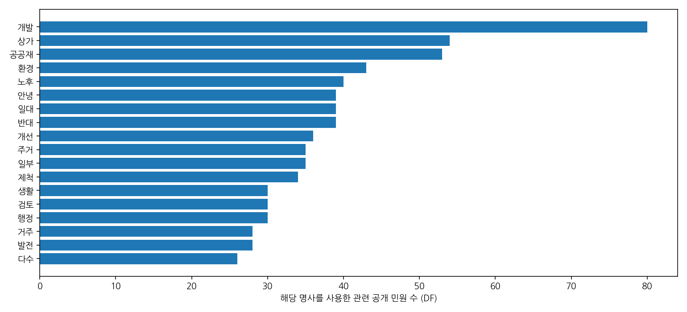
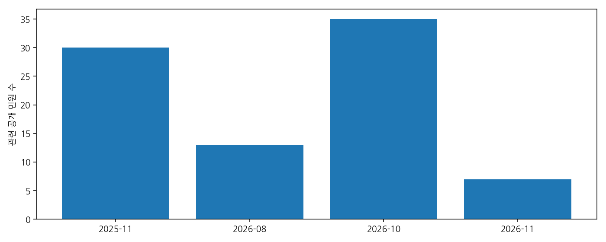

수집 기준 2026-11-08 · 시장에게 바란다 · 제목+내용 ‘159’ · 날짜·부서 제한 없음
2026-10-30 분석 이력 원본 · 분석자료 ZIP · 전체 목록 CSV
| 구분 | 10월30일 | 11월8일 |
|---|---|---|
| 검색 결과 | 94 | 113 |
| 공개 본문 | 75 | 92 |
| 비공개 | 19 | 21 |
| 관련 공개 | 67 | 85 |
| 무관 공개 | 8 | 7 |
신규 검색 노출 23건, 이전 접수번호 미노출 4건, 기존 글 답변 추가 22건. 비공개 글은 본문을 열지 않았습니다. 게시기간이 끝난 민원·다른 검색어·타 민원 채널은 이번 전수 범위에 포함하지 않습니다.
공식 답변은 2026년 10월 23일 정비사업 대책단 회의 결과를 토대로 LH가 오리로 대로변 상가 포함 여부를 검토 중이라고 설명합니다. 포함·제척 확정 통지가 아닙니다.
2026-4054 및 2026-4053 글의 답변일 필드는 11월 4일, 답변 본문 서명은 11월 3일입니다. 두 날짜를 그대로 보존했습니다. 민원은 ‘159번지 일원’ 주거환경을 강조하지만 답변은 ‘오리로 대로변 상가(159번지 일원 상가동)’를 특정하므로 대상 필지가 같은지 확인해야 합니다.
10월23일 회의는 7월1일 보완 요구보다 뒤입니다. 이 회의를 7월 보완 요구의 최초 원인으로 볼 수 없습니다. ‘13개 상가’, ‘20세대 미만’, ‘약200세대’, ‘70% 동의’는 민원인 주장이고 단위·모집단·검증자료가 다릅니다.
| 확인 방향 | 요구할 원자료 | 분석 목적 |
|---|---|---|
| 7월 보완 요구의 출처 | 7월1일 공문·붙임, 인용 민원 접수번호·일자·채널, 7월30일 LH 항목별 조치계획 | 민원→검토→보완 요구 연결 확인 |
| 10월23일 회의 | 회의록·참석자·안건·검토도면·전문가 의견·LH 전달문 | 상가 포함 여부 검토의 근거 확인 |
| 주거지와 상가 범위 | 최초·보완·최신 경계도와 대상 필지 목록 | 주거지 편입과 상가 포함을 동일 요구로 처리했는지 확인 |
| 상가 존치 대안 | 존치+이면 주거지 편입의 도로·소방·사업성 비교자료 | 대안 배제·채택 사유 확인 |
| 대표성 | 동의 기준일·대상자·면적·세대수·검증 방법 | 게시글 수를 주민 수나 동의율로 오해하지 않도록 구분 |
Kiwi 명사 NNG·NNP, 두 글자 이상, 일반어 불용어 제외. 제목·답변·댓글을 제외한 관련 민원 본문을 분석했습니다. TF는 반복 출현 수, DF는 해당 명사를 쓴 글 수입니다. 워드클라우드는 여론 비율이나 찬반 투표가 아닙니다.


| 주제(중복 집계) | 전체 관련 | 신규 관련 |
|---|---|---|
| 상가 언급 | 55 | 14 |
| 포함·편입·합류 | 41 | 9 |
| 제척 언급 | 46 | 8 |
| 형평·차별·공정 | 21 | 3 |
| 안전·화재·소방 | 19 | 6 |
| 침수·누수 | 18 | 2 |
| 동의·70% 주장 | 26 | 4 |
| 기반시설·도로 | 21 | 6 |
| 존치 언급 | 0 | 0 |
주제는 정규식 언급 분류로 찬반 입장 판정이 아닙니다. 본문 공백 제거 후 문자 유사도 0.85 이상 32쌍을 별도 제공했습니다. 문장 유사성만으로 동일 작성자·조직 동원을 판단할 수 없습니다. 답변일 확인 글의 등록→답변 중앙값은 4일(달력일)입니다.
2026-10-30: 당시 94건 분석 원본을 보존. 2026-11-08: 113건 검색 목록 및 공개92건 본문·답변 재수집. 기존 보고서·ZIP은 수정하지 않고 새 경로에 저장.
비교는 접수번호 기준이며 조회수·목록 순번은 변경 기준에서 제외했습니다. 새 검색 노출은 신규 접수와 동일하다고 단정하지 않습니다.
| 접수번호 | 날짜 | 제목 | 상태 | 범위 | 변경 |
|---|---|---|---|---|---|
| 2026-4054 | 2026-11-02 | 소수가 다수의 권리를 제한하는 상황 (광명3구역 159번지) | 답변완료 | 관련 | 신규 검색 노출 |
| 2026-4053 | 2026-11-02 | 광명동 3구역 159번지 일대 공공재개발 및 주민 의견 반영 요청 | 답변완료 | 관련 | 신규 검색 노출 |
| 2026-4046 | 2026-11-02 | 3구역 159번지일대 상가들의제척요구는 주민을또다시슬픔과미래를 어둡게할뿐입니다. | 답변완료 | 관련 | 신규 검색 노출 |
| 2026-4041 | 2026-11-01 | 광명3구역 공공재개발 사업 구역 내 159번지 일원 제척 우려에 따른 편입 재검토 및 정비계획 수립 강력 요청 | 답변완료 | 관련 | 신규 검색 노출 |
| 2026-4040 | 2026-11-01 | 159번지 주민입니다. | 답변완료 | 관련 | 신규 검색 노출 |
| 2026-4036 | 2026-11-01 | 비공개글"작성자(민원인)의 요청에 따라 비공개로 처리된 글입니다." | 답변완료 | 비공개 | 신규 검색 노출 |
| 2026-4035 | 2026-11-01 | 3구역 159상가주들의 유언비어가 너무심합니다. | 답변완료 | 관련 | 신규 검색 노출 |
| 2026-4030 | 2026-11-01 | 159번지 주민들은 공공재개발을 원합니다. | 답변완료 | 관련 | 신규 검색 노출 |
| 2026-4029 | 2026-10-31 | 159번지 재개발 | 답변완료 | 관련 | 신규 검색 노출 |
| 2026-4027 | 2026-10-31 | 비공개글"작성자(민원인)의 요청에 따라 비공개로 처리된 글입니다." | 답변완료 | 비공개 | 신규 검색 노출 |
| 2026-4026 | 2026-10-31 | 159번지 공공재개발 편입요청 | 답변완료 | 관련 | 신규 검색 노출 |
| 2026-4025 | 2026-10-31 | 3구역 159 | 답변완료 | 관련 | 신규 검색 노출 |
| 2026-4024 | 2026-10-31 | 노후 주거환경 개선 및 재개발 사업의 조속한 추진을 요청드립니다 | 답변완료 | 관련 | 신규 검색 노출 |
| 2026-4023 | 2026-10-31 | 공공재개발을 위해 | 답변완료 | 관련 | 신규 검색 노출 |
| 2026-4020 | 2026-10-31 | 광명3구역 공공재개발 159번지 제척하지 말아주세요 | 답변완료 | 관련 | 신규 검색 노출 |
| 2026-4018 | 2026-10-31 | 159번지를 외면하지 말아주세요 | 답변완료 | 관련 | 신규 검색 노출 |
| 2026-4017 | 2026-10-31 | 비공개글"작성자(민원인)의 요청에 따라 비공개로 처리된 글입니다." | 답변완료 | 비공개 | 신규 검색 노출 |
| 2026-4016 | 2026-10-31 | 광명3구역 공공재개발 159번지 관련 주민 의견 청취 및 공정한 행정 검토 요청 | 답변완료 | 관련 | 신규 검색 노출 |
| 2026-4015 | 2026-10-31 | 존경하는 광명시장님과 관계 공무원 여러분께 | 답변완료 | 관련 | 신규 검색 노출 |
| 2026-4014 | 2026-10-31 | 3구역 159번지일대 상가들의 제척요구을 또다시받아주면않됩니다. | 답변완료 | 관련 | 신규 검색 노출 |
| 2026-4013 | 2026-10-31 | 159번지 공공재개발 합류 촉구! | 답변완료 | 관련 | 신규 검색 노출 |
| 2026-4012 | 2026-10-31 | 159번지 공공재개발 합류시켜주세요 | 답변완료 | 관련 | 신규 검색 노출 |
| 2026-4008 | 2026-10-30 | 159번지 주민입니다 | 답변완료 | 관련 | 신규 검색 노출 |
| 2026-4000 | 2026-10-30 | 광명 3구역 159번지 재개발 촉구!! | 답변완료 | 관련 | 답변 추가 |
| 2026-3999 | 2026-10-30 | 159번지 주민들을 살려주세요...!! | 답변완료 | 관련 | 답변 추가 |
| 2026-3998 | 2026-10-30 | 광명 3구역 재개발!!!!!!! | 답변완료 | 관련 | 답변 추가 |
| 2026-3995 | 2026-10-30 | 159번지 좀 도와주세요 | 답변완료 | 관련 | 답변 추가 |
| 2026-3991 | 2026-10-30 | 광명 3구역 159번지 좀 살려주세요 | 답변완료 | 관련 | 답변 추가 |
| 2026-3990 | 2026-10-30 | 3구역 159번지좀 살려주세요. | 답변완료 | 관련 | 답변 추가 |
| 2026-3989 | 2026-10-30 | 광명3구역 공공재개발에 광명동 159번지 일대를 반드시 포함해 주시기를 간곡히 요청드립니다. | 답변완료 | 관련 | 답변 추가 |
| 2026-3988 | 2026-10-30 | 광명 159번지 공공재개발합류 | 답변완료 | 관련 | 답변 추가 |
| 2026-3987 | 2026-10-30 | 광명공공3구역 159번지 불평등 | 답변완료 | 관련 | 답변 추가 |
| 2026-3986 | 2026-10-30 | 159번지 대부분의 주민들은 공공재개발을 간절히 원합니다 | 답변완료 | 관련 | 답변 추가 |
| 2026-3985 | 2026-10-30 | 비공개글"작성자(민원인)의 요청에 따라 비공개로 처리된 글입니다." | 답변완료 | 비공개 | 기존 |
| 2026-3984 | 2026-10-30 | 159번지에도 수많은 시민들이 살고있습니다 | 답변완료 | 관련 | 답변 추가 |
| 2026-3983 | 2026-10-30 | 우리도 같은 동네 주민입니다. 광명3구역 159번지를 외면하지 말아 주십시오 | 답변완료 | 관련 | 답변 추가 |
| 2026-3975 | 2026-10-29 | 159번지 여기에도 사람있어요 | 답변완료 | 관련 | 답변 추가 |
| 2026-3971 | 2026-10-29 | 159번지 | 답변완료 | 관련 | 답변 추가 |
| 2026-3967 | 2026-10-29 | 광명 3구역 159번지 주민입니다. | 답변완료 | 관련 | 답변 추가 |
| 2026-3965 | 2026-10-29 | 3구역 159번지일대 주민들은 허탈감에 오늘하루를 시작합니다. | 답변완료 | 관련 | 답변 추가 |
| 2026-3963 | 2026-10-29 | 159번지를 살려주세요 | 답변완료 | 관련 | 답변 추가 |
| 2026-3962 | 2026-10-29 | 159번지 상가들때문에 십여년 전에도,현재도 주민은 울부짖고 있습니다. | 답변완료 | 관련 | 답변 추가 |
| 2026-3960 | 2026-10-29 | 159번지 일대, 소수의 요구에 흔들리지 않는 공정 행정을 촉구합니다 | 답변완료 | 관련 | 답변 추가 |
| 2026-3959 | 2026-10-29 | 광명3구역159번지제발요 | 답변완료 | 관련 | 답변 추가 |
| 2026-3958 | 2026-10-29 | 비공개글"작성자(민원인)의 요청에 따라 비공개로 처리된 글입니다." | 답변완료 | 비공개 | 기존 |
| 2026-3955 | 2026-10-29 | 비공개글"작성자(민원인)의 요청에 따라 비공개로 처리된 글입니다." | 답변완료 | 비공개 | 기존 |
| 2026-3949 | 2026-10-28 | 비공개글"작성자(민원인)의 요청에 따라 비공개로 처리된 글입니다." | 답변완료 | 비공개 | 기존 |
| 2026-3948 | 2026-10-28 | 159번지 주민들의 목소리를 들어주세요! | 답변완료 | 관련 | 답변 추가 |
| 2026-3946 | 2026-10-28 | 비공개글"작성자(민원인)의 요청에 따라 비공개로 처리된 글입니다." | 답변완료 | 비공개 | 기존 |
| 2026-3944 | 2026-10-28 | 3구역 159번지상가들때문에십여년전이나현재도막대한피해을보고있습니다. | 답변완료 | 관련 | 답변 추가 |
| 2026-3941 | 2026-10-28 | 비공개글"작성자(민원인)의 요청에 따라 비공개로 처리된 글입니다." | 답변완료 | 비공개 | 기존 |
| 2026-3929 | 2026-10-27 | 비공개글광명3구역 오리로 대로변 상가 제척 관련 사실 확인 및 재검토 요청 | 답변완료 | 비공개 | 기존 |
| 2026-3896 | 2026-10-23 | 비공개글"작성자(민원인)의 요청에 따라 비공개로 처리된 글입니다." | 답변완료 | 비공개 | 기존 |
| 2026-2881 | 2026-08-25 | 3구역 공공재개발 159번지일대 재편입 | 답변완료 | 관련 | 기존 |
| 2026-2880 | 2026-08-25 | 공공재개발 3구역 빠른 행정처리 촉구 및 159번지재편입요구 | 답변완료 | 관련 | 기존 |
| 2026-2879 | 2026-08-25 | 3구역 159번지일대 공공재개발 재편입 요청드립니다. | 답변완료 | 관련 | 기존 |
| 2026-2877 | 2026-08-25 | 광명3구역 빠른 공공재개발 진행 및 159번지 포함 부탁드립니다. | 답변완료 | 관련 | 기존 |
| 2026-2865 | 2026-08-25 | 광명3구역 159번지 구역지정 및 재개발 진행 부탁드립니다. | 답변완료 | 관련 | 기존 |
| 2026-2863 | 2026-08-24 | 광명3구역 159번지 구역포함 간곡히부탁드립니다. | 답변완료 | 관련 | 기존 |
| 2026-2861 | 2026-08-24 | 비공개글"작성자(민원인)의 요청에 따라 비공개로 처리된 글입니다." | 답변완료 | 비공개 | 기존 |
| 2026-2860 | 2026-08-24 | 159지번일대 공공재개발 요청드립니다 | 답변완료 | 관련 | 기존 |
| 2026-2859 | 2026-08-24 | 광명3구역 159번지 공공재개발 찬성합니다. | 답변완료 | 관련 | 기존 |
| 2026-2814 | 2026-08-23 | 광명3동 159지번일대 재개발은 언제은????? | 답변완료 | 관련 | 기존 |
| 2026-2763 | 2026-08-21 | 불법주차 처리!!! | 답변완료 | 무관 | 기존 |
| 2026-2617 | 2026-08-14 | 광명3구역159번지꼭 넣어주세요 | 답변완료 | 관련 | 기존 |
| 2026-2616 | 2026-08-14 | 비공개글"작성자(민원인)의 요청에 따라 비공개로 처리된 글입니다." | 답변완료 | 비공개 | 기존 |
| 2026-2615 | 2026-08-14 | 광명3구역 159번지 도와주세요 | 답변완료 | 관련 | 기존 |
| 2026-2614 | 2026-08-14 | 광명3동 159번지 재개발부탁드립니다 | 답변완료 | 관련 | 기존 |
| 2026-2608 | 2026-08-14 | 광명3구역 | 답변완료 | 관련 | 기존 |
| 2026-2264 | 2026-07-16 | 광명시가 아름답습니다. | 답변완료 | 무관 | 기존 |
| 2026-2202 | 2026-07-09 | 광명 5R 관리처분계획 변경인가 관련 추가 의견서 | 답변완료 | 무관 | 기존 |
| 2026-1361 | 2026-04-29 | 불법주차 처리 요청 | 답변완료 | 무관 | 기존 |
| 2026-971 | 2026-04-03 | 비공개글"작성자(민원인)의 요청에 따라 비공개로 처리된 글입니다." | 답변완료 | 비공개 | 기존 |
| 2026-623 | 2026-03-10 | 불법주차 처리요청 | 답변완료 | 무관 | 기존 |
| 2026-580 | 2026-03-06 | 광명시가 아름답습니다. | 답변완료 | 무관 | 기존 |
| 2026-35 | 2026-01-06 | 비좁아 불편한 보도 좀 넓혀주세요 | 답변완료 | 무관 | 기존 |
| 2025-5790 | 2025-11-24 | 광명3구역 공공재개발 구역계 조정 및 상가제외에 대한 의견 | 답변완료 | 관련 | 기존 |
| 2025-5770 | 2025-11-21 | 공공재개발 광명3구역 159번지 다시 포함시켜주세요 | 답변완료 | 관련 | 기존 |
| 2025-5769 | 2025-11-21 | 광명3구역 공공재개발 159번지 다시 넣어주세요 | 답변완료 | 관련 | 기존 |
| 2025-5708 | 2025-11-18 | 159번지 공공재개발 제척철회 부탁드립니다 | 답변완료 | 관련 | 기존 |
| 2025-5696 | 2025-11-17 | 공공재개발 재합류 요청 호소문!!! | 답변완료 | 관련 | 기존 |
| 2025-5680 | 2025-11-16 | 광명3동 159번지 공공재개발에 포함시켜주세요 | 답변완료 | 관련 | 기존 |
| 2025-5679 | 2025-11-16 | 159번지 제척 하지 말고 합류 시켜주세요 | 답변완료 | 관련 | 기존 |
| 2025-5673 | 2025-11-15 | 비공개글"작성자(민원인)의 요청에 따라 비공개로 처리된 글입니다." | 답변완료 | 비공개 | 기존 |
| 2025-5671 | 2025-11-15 | 159번지 공공재개발 포함 부탁드립니다 | 답변완료 | 관련 | 기존 |
| 2025-5657 | 2025-11-14 | 비공개글"작성자(민원인)의 요청에 따라 비공개로 처리된 글입니다." | 답변완료 | 비공개 | 기존 |
| 2025-5640 | 2025-11-14 | 3구역 159번지 재개발 제척구역에 대해 | 답변완료 | 관련 | 기존 |
| 2025-5614 | 2025-11-13 | 광명3구역 공공재개발 제척 철회 부탁드립니다 | 답변완료 | 관련 | 기존 |
| 2025-5600 | 2025-11-12 | 공공재개발 취지에 맞게 159번지를 구역계에 합류시켜주십시오! | 답변완료 | 관련 | 기존 |
| 2025-5559 | 2025-11-11 | 광명3동 159번지 제척하지 말아주세요 | 답변완료 | 관련 | 기존 |
| 2025-5552 | 2025-11-11 | 광명 3구역 159번지 제척철회 | 답변완료 | 관련 | 기존 |
| 2025-5542 | 2025-11-11 | 광명3구역의 무한한 발전을 위한 바램 | 답변완료 | 관련 | 기존 |
| 2025-5528 | 2025-11-11 | 비공개글"작성자(민원인)의 요청에 따라 비공개로 처리된 글입니다." | 답변완료 | 비공개 | 기존 |
| 2025-5526 | 2025-11-11 | 광명3구역 159번지 공공재개발 제발 합류시켜주세요 | 답변완료 | 관련 | 기존 |
| 2025-5517 | 2025-11-11 | 159번지 재척은 누굴위한 겁니까 | 답변완료 | 관련 | 기존 |
| 2025-5516 | 2025-11-10 | 다수 주민 70% 동의 무시한, 광명3동 159번지 공공재개발 '부당 제척' 재검토 요청 | 답변완료 | 관련 | 기존 |
| 2025-5515 | 2025-11-10 | 159번지 공공재개발 구역 재포함 부탁드립니다. | 답변완료 | 관련 | 기존 |
| 2025-5508 | 2025-11-10 | 비공개글"작성자(민원인)의 요청에 따라 비공개로 처리된 글입니다." | 답변완료 | 비공개 | 기존 |
| 2025-5503 | 2025-11-10 | 3구역 불법 현수막에 대하여. | 답변완료 | 관련 | 기존 |
| 2025-5502 | 2025-11-10 | 비공개글"작성자(민원인)의 요청에 따라 비공개로 처리된 글입니다." | 답변완료 | 비공개 | 기존 |
| 2025-5501 | 2025-11-10 | 광명3구역 신속한 재개발 요청드립니다 | 답변완료 | 관련 | 기존 |
| 2025-5498 | 2025-11-10 | 비공개글"작성자(민원인)의 요청에 따라 비공개로 처리된 글입니다." | 답변완료 | 비공개 | 기존 |
| 2025-5492 | 2025-11-10 | 비공개글"작성자(민원인)의 요청에 따라 비공개로 처리된 글입니다." | 답변완료 | 비공개 | 기존 |
| 2025-5485 | 2025-11-09 | 광명159지번일대 민간개발 반대 | 답변완료 | 관련 | 기존 |
| 2025-5470 | 2025-11-09 | 3구역 159번지 재개발 포함시켜야한다. | 답변완료 | 관련 | 기존 |
| 2025-5469 | 2025-11-09 | 공공재개발구역으로 합류 시켜 주세요!! | 답변완료 | 관련 | 기존 |
| 2025-5466 | 2025-11-09 | 광명 3동. 159번지공공재개발합류 | 답변완료 | 관련 | 기존 |
| 2025-5465 | 2025-11-09 | 광명사거리 3구역 159번지 주민의 절실한 부탁 | 답변완료 | 관련 | 기존 |
| 2025-5463 | 2025-11-08 | 159번지 구역도 공공재개발에 편입시켜 주시기 바랍니다. | 답변완료 | 관련 | 기존 |
| 2025-5462 | 2025-11-08 | 광명3구역 159번지 공공 편입 간절히 요청합니다 | 답변완료 | 관련 | 기존 |
| 2025-5446 | 2025-11-08 | 광명3구역 공공재개발 159번지 재포함 부탁드립니다. | 답변완료 | 관련 | 기존 |
| 2025-5445 | 2025-11-08 | 159번지 공공재개발 합류 간곡히 부탁드립니다 | 답변완료 | 관련 | 기존 |
| 2025-5444 | 2025-11-08 | (간곡히부탁드립니다)광명3구역 159번지 공공재개발합류바랍니다. | 답변완료 | 관련 | 기존 |
20세대 미만의 제척 요구로 약 200세대 주민의 주거환경 개선 기회가 박탈되는 것이 과연 공공재개발의 취지에 부합하는지 묻고 싶습니다.. 소수의 민원은 반영되고, 다수 주민의 절박한 요구는 외면되는 현재의 결정은 형평성과 공공성 측면에서 재검토가 필요합니다.. 특히 광명3구역의 다른 주민들과 159번지 주민들은 같은 동네에서 함께 생활해 온 이웃들입니다. 같은 생활권을 공유하고, 같은 불편과 위험을 감내하며 살아왔습니다. 그런데 개발의 혜택은 같은 동네 주민들에게 주어지면서 유독 159번지 주민들만 제외되는 것은 납득하기 어렵습니다. 광명동 159번지 주민들도 광명3구역 주민입니다. 저희가 원하는 것은 특혜가 아니라 다른 주민들과 같은 기회, 안전하게 살 권리, 더 나은 미래를 꿈꿀 권리입니다. 부디 형평성과 공공성의 원칙에 따라 광명동 159번지를 공공재개발 구역에 재포함하여 주실 것을 간곡히 요청드립니다.
반갑습니다. 광명시 우리시장실입니다. 귀하께서 시장에게바란다를 통해 신청하신 민원에 대한 검토 결과를 다음과 같이 알려드립니다. ○ 귀하의 민원내용은 ‘광명동 159번지 일원을 광명3구역 공공재개발 정 비구역에 편입해 달라는 요청’으로 이해됩니다. ○ 귀하께서 요청하신 오리로 대로변 상가(광명동 159번지 일원 상가동)의 포함여부는 도시계획 등 외부전문가로 구성된 정비사업 대책단 회의결과(2026. 10. 23. 개최)를 토대로 사업시행예정자(LH)가 종합적으로 검토중에 있음을 알려드리니 이점 양해하여 주시기 바랍니다. ○ 아울러 정비구역은 「도시 및 주거환경정비법」 제101조의8제3항에 따라 주민 및 지방의회의 의견을 듣고 지방도시계획위원회의 심의를 거쳐 지정됩니다. 향후 주민공람 기간에 서면으로 의견을 제출하시면 관계 절차에 따라 검토하겠습니다. ○기타 궁금하신 사항이 있으실 경우 균형개발과 공공재개발팀(02-2680-6921)으로 문의하시면 안내해 드리겠습니다. 감사합니다. 2026.11.3. 광명시 우리시장실 드림 균형개발과장(02-2680-2030), 공공재개발팀장(02-2680-6923), 담당주무관 (02-2680-6921)
안녕하세요. 광명시의 발전과 시민들의 주거환경 개선을 위해 노력하시는 관계자 여러분께 감사드립니다. 저는 광명동 3구역 159번지 일대에 거주하는 주민으로서, 최근 제기되고 있는 공공재개발 구역 제척 문제에 대해 깊은 우려를 느끼고 있어 이렇게 민원을 드립니다. 광명동 159번지 일대는 오랜 세월 주택과 기반시설이 노후화되어 주거환경 개선이 절실한 지역입니다. 특히 고령의 주민들이 많이 거주하고 있으며, 여름철 집중호우에 따른 침수 우려 등 생활 속 불편과 위험을 감수하며 살아가고 있습니다. 그동안 주민들은 공공재개발을 통해 이러한 문제가 해결되고, 보다 안전하고 쾌적한 환경에서 생활할 수 있기를 기대해 왔습니다. 그러나 최근 일부 상가 소유주들이 재개발 구역에서 제외해 달라는 요구를 하고 있으며, 지역 내에서는 이미 159번지 일대의 제척이 결정되었다는 이야기까지 나오고 있습니다. 약 13개의 상가와 이해관계가 있다는 이유로 약 200세대가 거주하는 지역 전체가 공공재개발에서 제외될 수 있다는 사실만으로도 주민들은 큰 불안감을 느끼고 있습니다. 물론 상가 소유주들의 입장과 재산권도 존중받아야 합니다. 하지만 상가 소유주들의 의견만큼이나 이 지역에서 오랫동안 살아온 주민들의 주거권과 재산권, 그리고 공공재개발을 희망하는 목소리 역시 중요하게 다뤄져야 한다고 생각합니다. 만약 159번지 일대가 개발구역에서 제외된다면, 인접 지역은 공공재개발을 통해 주거환경이 개선되는 반면 저희 주민들은 노후화된 주택과 열악한 기반시설 속에 그대로 남겨지게 됩니다. 이는 단순한 개발 여부의 문제가 아니라 주민들의 삶의 질과 재산권, 앞으로의 생활환경이 걸린 중대한 문제입니다. 이에 광명시청에 다음 사항을 요청드립니다. 1. 광명동 159번지 일대의 공공재개발 구역 제척이 실제로 결정되었거나 검토 중인지, 현재 진행 상황을 명확하게 밝혀주시기 바랍니다. 2. 일부 상가 소유주들의 제척 요구가 실제 구역 결정에 어느 정도 반영되고 있는지, 구역 조정의 기준과 사유를 설명해 주시기 바랍니다. 3. 약 200세대 주민들의 주거환경과 재산권에 영향을 미치는 결정인 만큼, 공공재개발을 찬성하는 주민들의 의견도 충분히 수렴해 주시기 바랍니다. 4. 광명동 159번지 일대가 인접 지역과 함께 정비될 수 있도록 제척보다는 구역 유지 및 연계 개발 방안을 적극적으로 검토해 주시기 바랍니다. 저희 주민들은 특별한 혜택을 바라는 것이 아닙니다. 오랫동안 낙후된 환경에서 살아온 만큼, 다른 지역 주민들과 마찬가지로 안전하고 쾌적한 환경에서 살아갈 기회를 원하는 것입니다. 최근 제척과 관련된 여러 이야기가 오가면서 주민들은 하루하루 불안과 스트레스 속에서 생활하고 있습니다. 언제까지 이런 불확실한 상황을 지켜봐야 하는지 답답하고 절박한 심정입니다. 광명시청 관계자 여러분께서도 여러 업무로 바쁘시겠지만, 이 문제가 주민들에게 얼마나 절실하고 중요한 사안인지 헤아려 주시기를 간곡히 부탁드립니다. 일부의 제척 요구만이 아니라 공공재개발을 간절히 희망하는 주민들의 목소리에도 귀 기울여 주십시오. 광명동 159번지 주민들이 개발에서 소외되지 않도록 적극적인 검토와 신속하고 명확한 답변을 부탁드립니다. 감사합니다.
반갑습니다. 광명시 우리시장실입니다. 귀하께서 시장에게바란다를 통해 신청하신 민원에 대한 검토 결과를 다음과 같이 알려드립니다. ○ 귀하의 민원내용은 ‘광명동 159번지 일원을 광명3구역 공공재개발 정 비구역에 편입해 달라는 요청’으로 이해됩니다. ○ 귀하께서 요청하신 오리로 대로변 상가(광명동 159번지 일원 상가동)의 포함여부는 도시계획 등 외부전문가로 구성된 정비사업 대책단 회의결과(2026. 10. 23. 개최)를 토대로 사업시행예정자(LH)가 종합적으로 검토중에 있음을 알려드리니 이점 양해하여 주시기 바랍니다. ○ 아울러 정비구역은 「도시 및 주거환경정비법」 제101조의8제3항에 따라 주민 및 지방의회의 의견을 듣고 지방도시계획위원회의 심의를 거쳐 지정됩니다. 향후 주민공람 기간에 서면으로 의견을 제출하시면 관계 절차에 따라 검토하겠습니다. ○기타 궁금하신 사항이 있으실 경우 균형개발과 공공재개발팀(02-2680-6921)으로 문의하시면 안내해 드리겠습니다. 감사합니다. 2026.11.3. 광명시 우리시장실 드림 균형개발과장(02-2680-2030), 공공재개발팀장(02-2680-6923), 담당주무관 (02-2680-6921)
안녕하세요!시장님과 시관계자 여러분! 상가들의제척요구에 저희주민은 상당히분귀 하고있습니다. 상가주들의 차량한데도 주차할공간없어 매번 늦추한주민들이 살아가는 골목에주차하고 연락처기재도없어 바쁠땐 난감하고 화가많이나도 참고살아왔습니다. 십여년만에 다시찿아온 공공재개발 저흰이기회을 절대놓치지 않을것이라 다짐했습니다. 지역의특수한점 을고려해 상가와주민이 합심해 재개발에 힘을 모아야 하는것인데,공실도많고 주차도힘들고한 상가를 어느회사가들어오겠습니까~ 만약 시에서 상가놓아두고,주민들만 개발참여 하라고하면 상가들의앞날은 어찌될까요? 또반대로 주민들은 평생이낡은 빌라촌에서 살아가야되나요? 주민들은 재개발에 적극적으로 참여하고 있습니다. 이젠상가들도주민 을 조금이라도 생각한다면,무조건반대보다 현실적으로생각하고 받아드려야됩니다. 시관계자분들께 요구합니다. 주민과상가의 중재를부탁드립니다. 감사합니다.
반갑습니다. 광명시 우리시장실입니다. 귀하께서 시장에게바란다를 통해 신청하신 민원에 대한 검토 결과를 다음과 같이 알려드립니다. ○ 귀하의 민원내용은 ‘광명동 159번지 일원을 광명3구역 공공재개발 정 비구역에 편입해 달라는 요청’으로 이해됩니다. ○ 귀하께서 요청하신 오리로 대로변 상가(광명동 159번지 일원 상가동)의 포함여부는 도시계획 등 외부전문가로 구성된 정비사업 대책단 회의결과(2026. 10. 23. 개최)를 토대로 사업시행예정자(LH)가 종합적으로 검토중에 있음을 알려드리니 이점 양해하여 주시기 바랍니다. ○ 아울러 정비구역은 「도시 및 주거환경정비법」 제101조의8제3항에 따라 주민 및 지방의회의 의견을 듣고 지방도시계획위원회의 심의를 거쳐 지정됩니다. 향후 주민공람 기간에 서면으로 의견을 제출하시면 관계 절차에 따라 검토하겠습니다. ○기타 궁금하신 사항이 있으실 경우 균형개발과 공공재개발팀(02-2680-6921)으로 문의하시면 안내해 드리겠습니다. 감사합니다. 2026.11.3. 광명시 우리시장실 드림 균형개발과장(02-2680-2030), 공공재개발팀장(02-2680-6923), 담당주무관 (02-2680-6921)
1. 취지 및 현황 광명시의 노후 주거환경 개선과 균형 있는 도시 발전을 위해 애써주시는 관계자 여러분의 노고에 진심으로 감사드립니다. 본 민원인은 광명3구역 공공재개발 추진 지역 내 광명동 159번지 일원(약 200세대)에 거주 중인 주민입니다. 해당 지역은 오랜 세월 주택 및 도로·기반시설이 심각하게 노후화되어 주거 환경 개선이 매우 절실한 곳입니다. 그러나 최근 재개발 구역 지정 과정에서 일부 상가(약 13개)가 포함되어 있다는 이유만으로 159번지 일원이 사업 구역에서 제척(제외)될 수 있다는 우려가 제기되고 있습니다. 이에 주민들은 심각한 우려와 불안감을 금할 수 없어 본 민원을 제출합니다. 2. 구역 제척 시 발생하는 심각한 문제점 1) 주거 환경의 극심한 양극화 및 안전 위협 인접 지역은 공공재개발을 통해 현대적 주거단지로 탈바꿈하는 반면, 제척된 159번지 일원은 맹지화·고립화되어 낙후된 기반시설을 그대로 떠안게 됩니다. 특히 고령층 주민 비율이 높은 지역 특성상, 소방차 진입 불과 등 안전사고와 재난에 무방비로 노출될 위험이 큽니다. 2) 재산권 침해 및 형평성 문제 단순히 일부 상가가 위치해 있다는 이유만으로 200세대의 주거 지역을 사업에서 소외시키는 것은 행정의 형평성에 어긋납니다. 이는 향후 심각한 부동산 가치 하락과 재산권 행사 제한으로 이어져 주민들에게 일방적인 희생을 강요하는 결과를 초래합니다. 3) 도시정비의 난개발 및 난맥상 우려 재개발은 특정 블록만의 이익이 아닌 도시 전체의 체계적 정비와 연계성을 고려해야 합니다. 정비구역 한가운데나 인접 부지를 기형적으로 제척할 경우, 향후 광명시 전체의 도시계획적 완성도와 미관을 크게 저해할 것입니다. 3. 광명시에 드리는 강력 요청사항 이러한 문제점을 해결하고 주민의 기본적 주거권을 보호하기 위해 다음 사항을 강력히 요청합니다. [명확한 입장 표명] 광명동 159번지 일원이 광명3구역 공공재개발 사업 구역에서 실제로 제척될 가능성이 있는지, 현재 검토 중인 구역 경계 설정안에 대한 명확하고 공식적인 입장을 밝혀 주시기 바랍니다. [상가 포함 지역 편입 재검토] 단지 상가가 일부 포함되어 있다는 단편적인 이유로 200세대의 노후 주거지를 제외하는 것이 타당한지 전면적인 재검토를 요구합니다. (상가 수용·제척에 대한 합리적 대안 마련 촉구) [적극 행정을 통한 구역 편입] 인접 지역과의 연계 개발 및 광명시 전체 정비계획의 관점에서, 159번지 일원이 공공재개발 구역에 최종 편입될 수 있도록 적극적인 행정 지원과 구역계 조정을 검토해 주시기 바랍니다. 재개발의 본래 취지는 소외되는 지역 없이 주민 모두의 주거환경을 개선하고 생활권을 보호하는 데 있습니다. 특정 구역이 단지 일부 상가 존재를 이유로 개발에서 소외되어 장기간 재산상·주거상 불이익을 감수하는 일이 없도록, 광명시의 책임 있는 답변과 전향적인 행정 검토를 부탁드립니다.
반갑습니다. 광명시 우리시장실입니다. 귀하께서 시장에게바란다를 통해 신청하신 민원에 대한 검토 결과를 다음과 같이 알려드립니다. ○ 귀하의 민원내용은 ‘광명동 159번지 일원을 광명3구역 공공재개발 정 비구역에 편입해 달라는 요청’으로 이해됩니다. ○ 귀하께서 요청하신 오리로 대로변 상가(광명동 159번지 일원 상가동)의 포함여부는 도시계획 등 외부전문가로 구성된 정비사업 대책단 회의결과(2026. 10. 23. 개최)를 토대로 사업시행예정자(LH)가 종합적으로 검토중에 있음을 알려드리니 이점 양해하여 주시기 바랍니다. ○ 아울러 정비구역은 「도시 및 주거환경정비법」 제101조의8제3항에 따라 주민 및 지방의회의 의견을 듣고 지방도시계획위원회의 심의를 거쳐 지정됩니다. 향후 주민공람 기간에 서면으로 의견을 제출하시면 관계 절차에 따라 검토하겠습니다. ○기타 궁금하신 사항이 있으실 경우 균형개발과 공공재개발팀(02-2680-6921)으로 문의하시면 안내해 드리겠습니다. 감사합니다. 2026.11.3. 광명시 우리시장실 드림 균형개발과장(02-2680-2030), 공공재개발팀장(02-2680-6923), 담당주무관 (02-2680-6921)
안녕하세요 저는 광명동 159번지 주민입니다. 제발 개발을 반대하는 소수의 상가주들 목소리만 들어주지 마시고, 대다수의 공공재개발을 찬성하는 시민의 얘기도 들어주세요. 감사합니다.
반갑습니다. 광명시 우리시장실입니다. 귀하께서 시장에게바란다를 통해 신청하신 민원에 대한 검토 결과를 다음과 같이 알려드립니다. ○ 귀하의 민원내용은 ‘광명동 159번지 일원을 광명3구역 공공재개발 정 비구역에 편입해 달라는 요청’으로 이해됩니다. ○ 귀하께서 요청하신 오리로 대로변 상가(광명동 159번지 일원 상가동)의 포함여부는 도시계획 등 외부전문가로 구성된 정비사업 대책단 회의결과(2026. 10. 23. 개최)를 토대로 사업시행예정자(LH)가 종합적으로 검토중에 있음을 알려드리니 이점 양해하여 주시기 바랍니다. ○ 아울러 정비구역은 「도시 및 주거환경정비법」 제101조의8제3항에 따라 주민 및 지방의회의 의견을 듣고 지방도시계획위원회의 심의를 거쳐 지정됩니다. 향후 주민공람 기간에 서면으로 의견을 제출하시면 관계 절차에 따라 검토하겠습니다. ○기타 궁금하신 사항이 있으실 경우 균형개발과 공공재개발팀(02-2680-6921)으로 문의하시면 안내해 드리겠습니다. 감사합니다. 2026.11.3. 광명시 우리시장실 드림 균형개발과장(02-2680-2030), 공공재개발팀장(02-2680-6923), 담당주무관 (02-2680-6921)
3구역 159번지일대 상가주들이 159번지 제척되게 해달라고해서 제척되었다고 소문내고 다니는데, 그말이 사실인지 묻고싶습니다. 저희주민들은 지역에 있는상가고,이웃이니까 조금이나마 도움주기위해 우리지역상가을 방문이용 하였는데 상가의댓가는 고작 제척요구로 답을주나요? 저번에도 말씀드렷지만 우리159일대는 주민과 상가가 합심해서 이낙후되고 여름홍수철범람의 위기을 같이헤쳐나아가야됩니다. 시청관계자님 이지역의 애로사항을 잘보시어 긴박한 중재을 바랍니다. 감사합니다.
반갑습니다. 광명시 우리시장실입니다. 귀하께서 시장에게바란다를 통해 신청하신 민원에 대한 검토 결과를 다음과 같이 알려드립니다. ○ 귀하의 민원내용은 ‘광명동 159번지 일원을 광명3구역 공공재개발 정 비구역에 편입해 달라는 요청’으로 이해됩니다. ○ 귀하께서 요청하신 오리로 대로변 상가(광명동 159번지 일원 상가동)의 포함여부는 도시계획 등 외부전문가로 구성된 정비사업 대책단 회의결과(2026. 10. 23. 개최)를 토대로 사업시행예정자(LH)가 종합적으로 검토중에 있음을 알려드리니 이점 양해하여 주시기 바랍니다. ○ 아울러 정비구역은 「도시 및 주거환경정비법」 제101조의8제3항에 따라 주민 및 지방의회의 의견을 듣고 지방도시계획위원회의 심의를 거쳐 지정됩니다. 향후 주민공람 기간에 서면으로 의견을 제출하시면 관계 절차에 따라 검토하겠습니다. ○기타 궁금하신 사항이 있으실 경우 균형개발과 공공재개발팀(02-2680-6921)으로 문의하시면 안내해 드리겠습니다. 감사합니다. 2026.11.3. 광명시 우리시장실 드림 균형개발과장(02-2680-2030), 공공재개발팀장(02-2680-6923), 담당주무관 (02-2680-6921)
안녕하세요. 저는 광명3구역 159번지 주민으로서 현재 해당 지역의 열악한 주거환경과 재개발 사업 추진에 관해 간곡히 요청드리고자 민원을 제기합니다. 해당 지역은 오랜 세월이 지나면서 주택과 주변 기반시설이 심각하게 노후화되었으며, 주거환경 또한 매우 낙후되어 있어 전 세대원에 걸쳐 거주하기에는 안전과 생활 편의 측면에서 여러 가지 어려움이 따르고 있습니다. 노후 주택의 구조적 안전 문제와 생활환경 악화는 단순히 불편함의 문제가 아니라 주민의 안전과 직결되는 문제라고 생각합니다. 재개발은 지역 주민들의 주거환경을 개선하고 안전하고 쾌적한 생활공간을 조성하기 위한 중요한 사업인 만큼, 더 이상 사업 추진이 지연되지 않도록 시 차원의 적극적인 관심과 행정적 지원을 요청드립니다. 개발을 반대하는 일부 상가주의 의견만 반영하지마시고, 대다수의 주민의 목소리를 들어주세요! 오랜 시간 해당 지역에서 생활해 온 주민들의 어려움을 깊이 헤아려 주시고, 실질적인 주거환경 개선으로 이어질 수 있도록 적극적인 검토와 책임 있는 답변을 부탁드립니다.
반갑습니다. 광명시 우리시장실입니다. 귀하께서 시장에게바란다를 통해 신청하신 민원에 대한 검토 결과를 다음과 같이 알려드립니다. ○ 귀하의 민원내용은 ‘광명동 159번지 일원을 광명3구역 공공재개발 정 비구역에 편입해 달라는 요청’으로 이해됩니다. ○ 귀하께서 요청하신 오리로 대로변 상가(광명동 159번지 일원 상가동)의 포함여부는 도시계획 등 외부전문가로 구성된 정비사업 대책단 회의결과(2026. 10. 23. 개최)를 토대로 사업시행예정자(LH)가 종합적으로 검토중에 있음을 알려드리니 이점 양해하여 주시기 바랍니다. ○ 아울러 정비구역은 「도시 및 주거환경정비법」 제101조의8제3항에 따라 주민 및 지방의회의 의견을 듣고 지방도시계획위원회의 심의를 거쳐 지정됩니다. 향후 주민공람 기간에 서면으로 의견을 제출하시면 관계 절차에 따라 검토하겠습니다. ○기타 궁금하신 사항이 있으실 경우 균형개발과 공공재개발팀(02-2680-6921)으로 문의하시면 안내해 드리겠습니다. 감사합니다. 2026.11.3. 광명시 우리시장실 드림 균형개발과장(02-2680-2030), 공공재개발팀장(02-2680-6923), 담당주무관 (02-2680-6921)
주변 전부 재개발이 되는데 159번지만 재개발이 제척된다면, 거주 주민들의 희망을 모두 버리는 처사이고, 상대적 박탈감에 이어 다른 지역사회문제가 일어날 수 있을 것으로 예상되기 때문에 재개발에 편입 시켜주시길 바랍니다.
반갑습니다. 광명시 우리시장실입니다. 귀하께서 시장에게바란다를 통해 신청하신 민원에 대한 검토 결과를 다음과 같이 알려드립니다. ○ 귀하의 민원내용은 ‘광명동 159번지 일원을 광명3구역 공공재개발 정 비구역에 편입해 달라는 요청’으로 이해됩니다. ○ 귀하께서 요청하신 오리로 대로변 상가(광명동 159번지 일원 상가동)의 포함여부는 도시계획 등 외부전문가로 구성된 정비사업 대책단 회의결과(2026. 10. 23. 개최)를 토대로 사업시행예정자(LH)가 종합적으로 검토중에 있음을 알려드리니 이점 양해하여 주시기 바랍니다. ○ 아울러 정비구역은 「도시 및 주거환경정비법」 제101조의8제3항에 따라 주민 및 지방의회의 의견을 듣고 지방도시계획위원회의 심의를 거쳐 지정됩니다. 향후 주민공람 기간에 서면으로 의견을 제출하시면 관계 절차에 따라 검토하겠습니다. ○기타 궁금하신 사항이 있으실 경우 균형개발과 공공재개발팀(02-2680-6921)으로 문의하시면 안내해 드리겠습니다. 감사합니다. 2026.11.3. 광명시 우리시장실 드림 균형개발과장(02-2680-2030), 공공재개발팀장(02-2680-6923), 담당주무관 (02-2680-6921)
안녕하세요. 광명시의 노후 주거환경 개선과 도시 발전을 위해 애써주시는 관계자 여러분께 감사드리며 3구역 159번지 주민으로서 건의 드립니다. 이 지역은 오랜 세월 주택과 기반시설이 노후화되어 주거환경 개선이 절실한 곳입니다. 그러나 최근 재개발 구역 설정 과정에서 일부 상가가 (약 13개)포함된 지역이라는 이유로 159번지가(200세대) 사업 구역에서 제외될 수 있다는 우려가 제기되고 있습니다. 만약 해당 지역이 제외된다면 인접 지역은 공공재개발을 통해 새로운 주거환경으로 개선되는 반면, 제외된 주민들은 노후 주택과 낙후된 기반시설을 그대로 감당해야 하는 상황에 놓이게 됩니다. 이는 단순한 주거환경의 차이를 넘어 부동산 가치 하락과 재산권 행사에 있어서도 상당한 불이익을 초래할 수 있는 중대한 사안입니다. 특히 고령의 주민들이 거주하는 지역인 만큼 더 이상 열악한 주거환경을 방치해서는 안 된다고 생각합니다. 이에 다음 사항을 강력히 요청드립니다. 1. 광명동 159번지 일부가 공공재개발 구역에서 제외될 가능성이 있는지 명확하게 밝혀 주시기 바랍니다. 2. 상가가 포함되어 있다는 이유만으로 해당 지역을 제외하는 것이 타당한지 전면 재검토해 주시기 바랍니다. 3. 인접 지역과의 연계 개발 및 전체적인 도시 정비의 관점에서 해당 지역의 편입 가능성을 적극 검토해 주시기 바랍니다. 재개발은 일부 지역만의 개발이 아니라 노후화된 지역 전체의 주거환경을 개선하고 주민들의 재산권과 생활권을 보호하는 방향으로 추진되어야 합니다. 특정 지역이 상가가 있다는 이유만으로 개발에서 소외되거나 주민들이 장기간 재산상 불이익을 감수하는 일이 발생하지 않도록 광명시의 적극적인 행정적 검토와 책임 있는 답변을 요청드립니다. 감사합니다.
반갑습니다. 광명시 우리시장실입니다. 귀하께서 시장에게바란다를 통해 신청하신 민원에 대한 검토 결과를 다음과 같이 알려드립니다. ○ 귀하의 민원내용은 ‘광명동 159번지 일원을 광명3구역 공공재개발 정 비구역에 편입해 달라는 요청’으로 이해됩니다. ○ 귀하께서 요청하신 오리로 대로변 상가(광명동 159번지 일원 상가동)의 포함여부는 도시계획 등 외부전문가로 구성된 정비사업 대책단 회의결과(2026. 10. 23. 개최)를 토대로 사업시행예정자(LH)가 종합적으로 검토중에 있음을 알려드리니 이점 양해하여 주시기 바랍니다. ○ 아울러 정비구역은 「도시 및 주거환경정비법」 제101조의8제3항에 따라 주민 및 지방의회의 의견을 듣고 지방도시계획위원회의 심의를 거쳐 지정됩니다. 향후 주민공람 기간에 서면으로 의견을 제출하시면 관계 절차에 따라 검토하겠습니다. ○기타 궁금하신 사항이 있으실 경우 균형개발과 공공재개발팀(02-2680-6921)으로 문의하시면 안내해 드리겠습니다. 감사합니다. 2026.11.3. 광명시 우리시장실 드림 균형개발과장(02-2680-2030), 공공재개발팀장(02-2680-6923), 담당주무관 (02-2680-6921)
상가 때문에 재개발 못하다니 뭔 개뼈다구 소리 입니까 비가 오면 하천이 넘치고 펌프 가동 시켜서 물 퍼네고 상가 주차장이 없어 주차위반 딱지를 10번 이상 끊고 얼마전에는 빌라 바깥쪽 으로 하수구가 막혀서 600만원 이상 돈 지불하고 하수구 구멍 수리 하였습니다 시장님 바라옵건데 재개발 추진 당장 내일 이라도 시행 바랍니다. 반대하는 상가는 재개발 에서 제외하고 하루빨리 진행 부탁드립니다
반갑습니다. 광명시 우리시장실입니다. 귀하께서 시장에게바란다를 통해 신청하신 민원에 대한 검토 결과를 다음과 같이 알려드립니다. ○ 귀하의 민원내용은 ‘광명동 159번지 일원을 광명3구역 공공재개발 정 비구역에 편입해 달라는 요청’으로 이해됩니다. ○ 귀하께서 요청하신 오리로 대로변 상가(광명동 159번지 일원 상가동)의 포함여부는 도시계획 등 외부전문가로 구성된 정비사업 대책단 회의결과(2026. 10. 23. 개최)를 토대로 사업시행예정자(LH)가 종합적으로 검토중에 있음을 알려드리니 이점 양해하여 주시기 바랍니다. ○ 아울러 정비구역은 「도시 및 주거환경정비법」 제101조의8제3항에 따라 주민 및 지방의회의 의견을 듣고 지방도시계획위원회의 심의를 거쳐 지정됩니다. 향후 주민공람 기간에 서면으로 의견을 제출하시면 관계 절차에 따라 검토하겠습니다. ○기타 궁금하신 사항이 있으실 경우 균형개발과 공공재개발팀(02-2680-6921)으로 문의하시면 안내해 드리겠습니다. 감사합니다. 2026.11.3. 광명시 우리시장실 드림 균형개발과장(02-2680-2030), 공공재개발팀장(02-2680-6923), 담당주무관 (02-2680-6921)
안녕하세요. 광명시의 주거환경 개선과 지역 발전을 위해 애써주시는 관계자 여러분께 감사드립니다. 저는 광명3구역 159번지 주민으로서 현재 해당 지역의 열악한 주거환경과 재개발 사업 추진에 관해 간곡히 요청드리고자 민원을 제기합니다. 해당 지역은 오랜 세월이 지나면서 주택과 주변 기반시설이 심각하게 노후화되었으며, 주거환경 또한 매우 낙후되어 있어 전 세대원에 걸쳐 거주하기에는 안전과 생활 편의 측면에서 여러 가지 어려움이 따르고 있습니다. 노후 주택의 구조적 안전 문제와 생활환경 악화는 단순히 불편함의 문제가 아니라 주민의 안전과 직결되는 문제라고 생각합니다. 재개발은 지역 주민들의 주거환경을 개선하고 안전하고 쾌적한 생활공간을 조성하기 위한 중요한 사업인 만큼, 더 이상 사업 추진이 지연되지 않도록 시 차원의 적극적인 관심과 행정적 지원을 요청드립니다. 이에 다음 사항을 간곡히 건의합니다. 1. 해당 지역의 노후 주거환경 및 주택 안전 실태를 적극적으로 검토해 주시기 바랍니다. 2. 재개발 사업의 현재 진행 상황과 향후 추진 계획을 주민들에게 명확하게 안내해 주시기 바랍니다. 3. 사업 추진 과정에서 불필요한 지연이 발생하지 않도록 행정적 지원과 적극적인 검토를 요청드립니다. 4. 고령 주민들이 보다 안전하고 쾌적한 환경에서 생활할 수 있도록 재개발 사업의 조속한 추진 방안을 마련해 주시기 바랍니다. 오랜 시간 해당 지역에서 생활해 온 주민들의 어려움을 깊이 헤아려 주시고, 실질적인 주거환경 개선으로 이어질 수 있도록 적극적인 검토와 책임 있는 답변을 부탁드립니다.
반갑습니다. 광명시 우리시장실입니다. 귀하께서 시장에게바란다를 통해 신청하신 민원에 대한 검토 결과를 다음과 같이 알려드립니다. ○ 귀하의 민원내용은 ‘광명동 159번지 일원을 광명3구역 공공재개발 정 비구역에 편입해 달라는 요청’으로 이해됩니다. ○ 귀하께서 요청하신 오리로 대로변 상가(광명동 159번지 일원 상가동)의 포함여부는 도시계획 등 외부전문가로 구성된 정비사업 대책단 회의결과(2026. 10. 23. 개최)를 토대로 사업시행예정자(LH)가 종합적으로 검토중에 있음을 알려드리니 이점 양해하여 주시기 바랍니다. ○ 아울러 정비구역은 「도시 및 주거환경정비법」 제101조의8제3항에 따라 주민 및 지방의회의 의견을 듣고 지방도시계획위원회의 심의를 거쳐 지정됩니다. 향후 주민공람 기간에 서면으로 의견을 제출하시면 관계 절차에 따라 검토하겠습니다. ○기타 궁금하신 사항이 있으실 경우 균형개발과 공공재개발팀(02-2680-6921)으로 문의하시면 안내해 드리겠습니다. 감사합니다. 2026.11.3. 광명시 우리시장실 드림 균형개발과장(02-2680-2030), 공공재개발팀장(02-2680-6923), 담당주무관 (02-2680-6921)
존경하는 박승원 시장님, 저는 광명동 159번지 일대에 사는 주민입니다. 저희는 공공재개발 합류를 위해 동의서 징구 법적비율을 훨씬 넘겼고 대부분의 주민이 공공재개발에 적극 찬성하는 상태입니다. 이제 공공재개발에서 제외되면 더이상 목감로 182 일대는 희망이없습니다. 따로 재개발도 불가하고 오래된 주택과 주차장이 없는쪽인데 외면말고 합류 시켜주세요
반갑습니다. 광명시 우리시장실입니다. 귀하께서 시장에게바란다를 통해 신청하신 민원에 대한 검토 결과를 다음과 같이 알려드립니다. ○ 귀하의 민원내용은 ‘광명동 159번지 일원을 광명3구역 공공재개발 정 비구역에 편입해 달라는 요청’으로 이해됩니다. ○ 귀하께서 요청하신 오리로 대로변 상가(광명동 159번지 일원 상가동)의 포함여부는 도시계획 등 외부전문가로 구성된 정비사업 대책단 회의결과(2026. 10. 23. 개최)를 토대로 사업시행예정자(LH)가 종합적으로 검토중에 있음을 알려드리니 이점 양해하여 주시기 바랍니다. ○ 아울러 정비구역은 「도시 및 주거환경정비법」 제101조의8제3항에 따라 주민 및 지방의회의 의견을 듣고 지방도시계획위원회의 심의를 거쳐 지정됩니다. 향후 주민공람 기간에 서면으로 의견을 제출하시면 관계 절차에 따라 검토하겠습니다. ○기타 궁금하신 사항이 있으실 경우 균형개발과 공공재개발팀(02-2680-6921)으로 문의하시면 안내해 드리겠습니다. 감사합니다. 2026.11.3. 광명시 우리시장실 드림 균형개발과장(02-2680-2030), 공공재개발팀장(02-2680-6923), 담당주무관 (02-2680-6921)
제발 부탁드립니다 159번지 때문에 하루하루 스트레스받아 미쳐버려요. 수고하시는거 아는데 빠르게 부탁드립니다
반갑습니다. 광명시 우리시장실입니다. 귀하께서 시장에게바란다를 통해 신청하신 민원에 대한 검토 결과를 다음과 같이 알려드립니다. ○ 귀하의 민원내용은 ‘광명동 159번지 일원을 광명3구역 공공재개발 정 비구역에 편입해 달라는 요청’으로 이해됩니다. ○ 귀하께서 요청하신 오리로 대로변 상가(광명동 159번지 일원 상가동)의 포함여부는 도시계획 등 외부전문가로 구성된 정비사업 대책단 회의결과(2026. 10. 23. 개최)를 토대로 사업시행예정자(LH)가 종합적으로 검토중에 있음을 알려드리니 이점 양해하여 주시기 바랍니다. ○ 아울러 정비구역은 「도시 및 주거환경정비법」 제101조의8제3항에 따라 주민 및 지방의회의 의견을 듣고 지방도시계획위원회의 심의를 거쳐 지정됩니다. 향후 주민공람 기간에 서면으로 의견을 제출하시면 관계 절차에 따라 검토하겠습니다. ○기타 궁금하신 사항이 있으실 경우 균형개발과 공공재개발팀(02-2680-6921)으로 문의하시면 안내해 드리겠습니다. 감사합니다. 2026.11.3. 광명시 우리시장실 드림 균형개발과장(02-2680-2030), 공공재개발팀장(02-2680-6923), 담당주무관 (02-2680-6921)
저희 159번지 주민들은 여름 장마철 마다 혹시 비가 많이 와서 홍수가 나서 피해를 입지는 않을까..... 현실에 마주하고 야근이라도 하고 온 날에는 주차는 괜찮을까.... 항상 걱정을 하고 하루하루를 살아가고 있습니다. 몇몇의 소수인원인 상가들 때문에 공공재개발에서 또한 번 제척이 된다면 더욱 더 희망을 잃고 하루하루를 눈물로 지새겠지요.... 이러한 159번지 약 190채 정도 되는 주민들의 눈물을 외면하실 겁니까??? 이건 누구를 위한 이 나라의 행정 입니까???? 저희 159번지를 몇몇의 소수인원 때문에 외면하지 말아주시고 공공재개발에 합류 시켜 주시길 바랍니다.
반갑습니다. 광명시 우리시장실입니다. 귀하께서 시장에게바란다를 통해 신청하신 민원에 대한 검토 결과를 다음과 같이 알려드립니다. ○ 귀하의 민원내용은 ‘광명동 159번지 일원을 광명3구역 공공재개발 정 비구역에 편입해 달라는 요청’으로 이해됩니다. ○ 귀하께서 요청하신 오리로 대로변 상가(광명동 159번지 일원 상가동)의 포함여부는 도시계획 등 외부전문가로 구성된 정비사업 대책단 회의결과(2026. 10. 23. 개최)를 토대로 사업시행예정자(LH)가 종합적으로 검토중에 있음을 알려드리니 이점 양해하여 주시기 바랍니다. ○ 아울러 정비구역은 「도시 및 주거환경정비법」 제101조의8제3항에 따라 주민 및 지방의회의 의견을 듣고 지방도시계획위원회의 심의를 거쳐 지정됩니다. 향후 주민공람 기간에 서면으로 의견을 제출하시면 관계 절차에 따라 검토하겠습니다. ○기타 궁금하신 사항이 있으실 경우 균형개발과 공공재개발팀(02-2680-6921)으로 문의하시면 안내해 드리겠습니다. 감사합니다. 2026.11.3. 광명시 우리시장실 드림 균형개발과장(02-2680-2030), 공공재개발팀장(02-2680-6923), 담당주무관 (02-2680-6921)
광명시의 발전과 지역 주거환경 개선을 위해 노력하시는 관계 공무원 여러분께 감사드립니다. 광명3구역 공공재개발과 관련하여 159번지 일대 주민들의 입장과 우려 사항을 다시 한번 전달하고자 민원을 제기합니다. 공공재개발은 주민들의 삶과 재산에 직접적인 영향을 미치는 중요한 사업인 만큼, 사업 추진 과정에서 주민들의 의견이 충분히 반영되어야 하며 어느 한쪽의 입장만을 앞세우는 행정이 되어서는 안 된다고 생각합니다. 특히 159번지 일대 주민들이 처한 상황과 재산권, 주거권에 대한 문제를 세심하게 살펴봐 주시기 바랍니다. 주민들이 납득할 수 있는 충분한 설명과 객관적인 근거 없이 사업이 진행된다면 주민들의 불안과 갈등은 더욱 커질 수밖에 없습니다. 이에 광명시에 다음 사항을 요청드립니다. 1. 광명3구역 공공재개발 추진 과정에서 159번지 주민들의 의견이 실질적으로 반영되고 있는지 확인해 주십시오. 2. 159번지 일대의 토지 및 건축물 소유자들의 재산권과 주거권이 부당하게 침해되지 않도록 면밀히 검토해 주십시오. 3. 사업 추진의 기준과 절차, 주민들에게 미치는 영향에 대해 구체적이고 투명하게 설명해 주십시오. 4. 주민들의 정당한 의견과 요구가 행정적으로 충분히 검토될 수 있도록 적극적인 조치를 취해 주십시오. 공정하고 합리적인 절차 속에서 정당한 권리를 보장받기를 바라는 것입니다. 광명시에서는 본 민원을 단순한 반복 민원으로 여기지 마시고, 159번지 주민들의 입장에서 문제점을살펴 실질적인 검토와 책임 있는 답변을 해주시기를 강력히 요청드립니다. 감사합니다.
반갑습니다. 광명시 우리시장실입니다. 귀하께서 시장에게바란다를 통해 신청하신 민원에 대한 검토 결과를 다음과 같이 알려드립니다. ○ 귀하의 민원내용은 ‘광명동 159번지 일원을 광명3구역 공공재개발 정 비구역에 편입해 달라는 요청’으로 이해됩니다. ○ 귀하께서 요청하신 오리로 대로변 상가(광명동 159번지 일원 상가동)의 포함여부는 도시계획 등 외부전문가로 구성된 정비사업 대책단 회의결과(2026. 10. 23. 개최)를 토대로 사업시행예정자(LH)가 종합적으로 검토중에 있음을 알려드리니 이점 양해하여 주시기 바랍니다. ○ 아울러 정비구역은 「도시 및 주거환경정비법」 제101조의8제3항에 따라 주민 및 지방의회의 의견을 듣고 지방도시계획위원회의 심의를 거쳐 지정됩니다. 향후 주민공람 기간에 서면으로 의견을 제출하시면 관계 절차에 따라 검토하겠습니다. ○기타 궁금하신 사항이 있으실 경우 균형개발과 공공재개발팀(02-2680-6921)으로 문의하시면 안내해 드리겠습니다. 감사합니다. 2026.11.3. 광명시 우리시장실 드림 균형개발과장(02-2680-2030), 공공재개발팀장(02-2680-6923), 담당주무관 (02-2680-6921)
저희는 광명3동 159번지 일대에서 십수 년, 수십 년간 서로 의지하며 살아온 주민들입니다. 현재 저희 구역은 열악한 주거 환경을 개선하고 안전한 터전을 만들기 위해 190채에 달하는 대다수 주민들이 뜻을 모아 정비사업 편입을 간절히 바라고 있습니다. 그러나 최근 일부 상가 측의 반대와 이권 다툼으로 인해 190가구 전체의 사업이 좌초되거나 원치 않는 방향으로 파행될 수 있다는 소식에 밤잠을 이루지 못하고 있습니다. 14명의 상가 때문에 190채나 되는 주민들의 주거 환경 개선과 재산권 행사가 막혀야 합니까? 이것은 단순히 부동산의 문제가 아니라, 오랫동안 이 동네를 지켜온 수백 명 주민들의 생존권이 걸린 절박한 문제입니다. 소수의 목소리에 밀려 다수의 피눈물을 외면하는 행정이 되지 않기를 간절히 바랍니다. 저희 190가구 주민들은 광명시청에 붉어진 눈물로 호소드립니다.
반갑습니다. 광명시 우리시장실입니다. 귀하께서 시장에게바란다를 통해 신청하신 민원에 대한 검토 결과를 다음과 같이 알려드립니다. ○ 귀하의 민원내용은 ‘광명동 159번지 일원을 광명3구역 공공재개발 정 비구역에 편입해 달라는 요청’으로 이해됩니다. ○ 귀하께서 요청하신 오리로 대로변 상가(광명동 159번지 일원 상가동)의 포함여부는 도시계획 등 외부전문가로 구성된 정비사업 대책단 회의결과(2026. 10. 23. 개최)를 토대로 사업시행예정자(LH)가 종합적으로 검토중에 있음을 알려드리니 이점 양해하여 주시기 바랍니다. ○ 아울러 정비구역은 「도시 및 주거환경정비법」 제101조의8제3항에 따라 주민 및 지방의회의 의견을 듣고 지방도시계획위원회의 심의를 거쳐 지정됩니다. 향후 주민공람 기간에 서면으로 의견을 제출하시면 관계 절차에 따라 검토하겠습니다. ○기타 궁금하신 사항이 있으실 경우 균형개발과 공공재개발팀(02-2680-6921)으로 문의하시면 안내해 드리겠습니다. 감사합니다. 2026.11.3. 광명시 우리시장실 드림 균형개발과장(02-2680-2030), 공공재개발팀장(02-2680-6923), 담당주무관 (02-2680-6921)
안녕하세요.시장님! 저희3구역159번지의 노후도와여름홍수철범람의 위기속에 살아가고 있는것 잘아실겁니다. 2013년에도 상가주들의반대로 무산되었는데, 이번에도 자기들이속에만 혈안이된 상가들입니다.159지역자체가 사업성없는것 상가주들도잘알것으로 압니다.제가근30년 이곳에살고있는데 상가들의 방문차량과상가입주차량 주차할곳이없으니,저희주민골목으로 불법주차는물론 연락처기재도안해서 급한용무 있을땐 난처하고화가많이납니다.지금시대빌라도 주차장이 없으면,준공허가가 않되잖습니까? 하물며 상가주자신의차량도 주차할공간도없는상가라니... 지역이좁아 상가와주민이 합심해서 지역개발함이 타당하지않겠습니까? 시장님,시청관계자님들의 관심과적극적인 중재을 간곡히 부탁드립니다. 상가가 정히않된다면 지역이좁아도 상가빼고라도 저희주민(동의율85%)만이라도 재개발할수있도록 방안을만들어주세요. 정말드릴말씀많치만 글로말씀드리는것은 많은 한계가 있네요. 두서없지만,저희159의 간절한 마음만은 꼭알아주시리라 믿습니다. 감사합니다.수고하세요.
반갑습니다. 광명시 우리시장실입니다. 귀하께서 시장에게바란다를 통해 신청하신 민원에 대한 검토 결과를 다음과 같이 알려드립니다. ○ 귀하의 민원내용은 ‘광명동 159번지 일원을 광명3구역 공공재개발 정 비구역에 편입해 달라는 요청’으로 이해됩니다. ○ 귀하께서 요청하신 오리로 대로변 상가(광명동 159번지 일원 상가동)의 포함여부는 도시계획 등 외부전문가로 구성된 정비사업 대책단 회의결과(2026. 10. 23. 개최)를 토대로 사업시행예정자(LH)가 종합적으로 검토중에 있음을 알려드리니 이점 양해하여 주시기 바랍니다. ○ 아울러 정비구역은 「도시 및 주거환경정비법」 제101조의8제3항에 따라 주민 및 지방의회의 의견을 듣고 지방도시계획위원회의 심의를 거쳐 지정됩니다. 향후 주민공람 기간에 서면으로 의견을 제출하시면 관계 절차에 따라 검토하겠습니다. ○기타 궁금하신 사항이 있으실 경우 균형개발과 공공재개발팀(02-2680-6921)으로 문의하시면 안내해 드리겠습니다. 감사합니다. 2026.11.3. 광명시 우리시장실 드림 균형개발과장(02-2680-2030), 공공재개발팀장(02-2680-6923), 담당주무관 (02-2680-6921)
안녕하세요 박승원 시장님. 늘 시민들을 위해 애써주셔서 감사합니다. 2년전 159번지 일대가 공공 재개발 지역에서 제척되는 일이 있었습니다. 당시 재개발을 기다려온 사람으로써, 허탈한 마음은 이루말할수 없었습니다. 이웃주민들과 함께 공공재개발 합류를 위해 주민들의 마음을 모아 동의서를 받았고, 법적요건을 채우고도 남는 상황이라 기쁜 마음으로 결과가 나오기를 기다리고 있었습니다. 하지만 2년전 재개발을 반대하는 상가주들 때문에 저희 구역이 제척이 도었는데, 이번에도 상가주들의 반대가 있었다고 들었습니다. 왜 저희 180세대 가까이 되는 사람들이 10여명의 반대하는 상가주들 때문에 피해를 봐야합니까.. 비가 많이 오면 침수걱정해야하고 노후화된 건물의 누수.. 그리고 부족한 주차공간으로 우리 주민들은 매번 고통 받고 있습니다. 특히나 개발을 반대하는 앞상가들은 주차공간도 확보하지 않은채 영업을 하여 차량으로 길을 막고, 사람 및 차가 다닐수 없을정도로 주차를 해서 이미 뒷쪽에 사는 주민들은 많은 피해를 보고 있습니다. 존경하는 시장님, 부디 일부 상가주들의 말씀만 듣지 마시고 159번지 일대 주민들을 외면하지 말아주세요. 감사합니다.
반갑습니다. 광명시 우리시장실입니다. 귀하께서 시장에게바란다를 통해 신청하신 민원에 대한 검토 결과를 다음과 같이 알려드립니다. ○ 귀하의 민원내용은 ‘광명동 159번지 일원을 광명3구역 공공재개발 정 비구역에 편입해 달라는 요청’으로 이해됩니다. ○ 귀하께서 요청하신 오리로 대로변 상가(광명동 159번지 일원 상가동)의 포함여부는 도시계획 등 외부전문가로 구성된 정비사업 대책단 회의결과(2026. 10. 23. 개최)를 토대로 사업시행예정자(LH)가 종합적으로 검토중에 있음을 알려드리니 이점 양해하여 주시기 바랍니다. ○ 아울러 정비구역은 「도시 및 주거환경정비법」 제101조의8제3항에 따라 주민 및 지방의회의 의견을 듣고 지방도시계획위원회의 심의를 거쳐 지정됩니다. 향후 주민공람 기간에 서면으로 의견을 제출하시면 관계 절차에 따라 검토하겠습니다. ○기타 궁금하신 사항이 있으실 경우 균형개발과 공공재개발팀(02-2680-6921)으로 문의하시면 안내해 드리겠습니다. 감사합니다. 2026.11.3. 광명시 우리시장실 드림 균형개발과장(02-2680-2030), 공공재개발팀장(02-2680-6923), 담당주무관 (02-2680-6921)
존경하는 박승원 시장님, 저는 광명동 159번지 일대에 사는 주민입니다. 저희는 공공재개발 합류를 위해 동의서 징구 법적비율을 훨씬 넘겼고 대부분의 주민이 공공재개발에 적극 찬성하는 상태입니다. 최근 앞상가들이 159번지 일대를 공공재개발 합류를 반대하였다고 합니다. 왜 10여명의 상가주때문에 180가까운 주민이 피해를 봐야합니까? 저희지역은 30년가까이된 노후 빌라도 많고, 특히나 주차할곳도 넉넉하지 않습니다. 그리고 개발을 반대한 상가주들은 주차공간도 없으니 차로 길의 앞을 가로막고 도보 밎 차량통행에 어려움을 겪고 있는 상황입니다. 부디 이러한 어려운 상황을 이해해주시고 시민들의 목소리를 외면하지 말고 들어주세요
반갑습니다. 광명시 우리시장실입니다. 귀하께서 시장에게바란다를 통해 신청하신 민원에 대한 검토 결과를 다음과 같이 알려드립니다. ○ 귀하의 민원내용은 ‘광명동 159번지 일원을 광명3구역 공공재개발 정 비구역에 편입해 달라는 요청’으로 이해됩니다. ○ 귀하께서 요청하신 오리로 대로변 상가(광명동 159번지 일원 상가동)의 포함여부는 도시계획 등 외부전문가로 구성된 정비사업 대책단 회의결과(2026. 10. 23. 개최)를 토대로 사업시행예정자(LH)가 종합적으로 검토중에 있음을 알려드리니 이점 양해하여 주시기 바랍니다. ○ 아울러 정비구역은 「도시 및 주거환경정비법」 제101조의8제3항에 따라 주민 및 지방의회의 의견을 듣고 지방도시계획위원회의 심의를 거쳐 지정됩니다. 향후 주민공람 기간에 서면으로 의견을 제출하시면 관계 절차에 따라 검토하겠습니다. ○기타 궁금하신 사항이 있으실 경우 균형개발과 공공재개발팀(02-2680-6921)으로 문의하시면 안내해 드리겠습니다. 감사합니다. 2026.11.3. 광명시 우리시장실 드림 균형개발과장(02-2680-2030), 공공재개발팀장(02-2680-6923), 담당주무관 (02-2680-6921)
159번지 주택 소유자 입니다. 이번 3구역 공공재개발신청서류을 접수한것으로 알고 있었는데, 159번지 상가 소유자들이 이번에도 균형개발과에 가서 공공재개발해지 시위를 하였다는 얘기를 들고, 너무 속상해서 민원을 신청합니다. 159번지는 상가소유자보다 주택소유자가 인원이 훨씬 많은데, 주택소유자는 항상 제외되어 권리를 인정받지 못하고 있습니다. 더이상은 주택수유자의 권리을 묵인하지 말아주세요!
반갑습니다. 광명시 우리시장실입니다. 귀하께서 시장에게바란다를 통해 신청하신 민원에 대한 검토 결과를 다음과 같이 알려드립니다. ○ 귀하의 민원내용은 ‘광명동 159번지 일원을 광명3구역 공공재개발 정 비구역에 편입해 달라는 요청’으로 이해됩니다. ○ 귀하께서 요청하신 오리로 대로변 상가(광명동 159번지 일원 상가동)의 포함여부는 도시계획 등 외부전문가로 구성된 정비사업 대책단 회의결과(2026. 10. 23. 개최)를 토대로 사업시행예정자(LH)가 종합적으로 검토중에 있음을 알려드리니 이점 양해하여 주시기 바랍니다. ○ 아울러 정비구역은 「도시 및 주거환경정비법」 제101조의8제3항에 따라 주민 및 지방의회의 의견을 듣고 지방도시계획위원회의 심의를 거쳐 지정됩니다. 향후 주민공람 기간에 서면으로 의견을 제출하시면 관계 절차에 따라 검토하겠습니다. ○기타 궁금하신 사항이 있으실 경우 균형개발과 공공재개발팀(02-2680-6921)으로 문의하시면 안내해 드리겠습니다. 감사합니다. 2026.11.3. 광명시 우리시장실 드림 균형개발과장(02-2680-2030), 공공재개발팀장(02-2680-6923), 담당주무관 (02-2680-6921)
광명 3구역에 아무리 멋진 아파트가 들어서도 바로 옆에 노후된 빌라촌(159번지 일대)이 그대로 남아서 붙어있다면 누가봐도 보기에 좋지 않을 것입니다. 광명에 놀러오거나 지나가던 사람들, 외국인들 등 외부사람들이 그 불합리하고 불공정한 일부의 노후된 모습들을 본다면 "왜 저곳만 빼고 개발했을까?" 의아해 할것이며, 그 옆의 아파트들의 값어치와 동네질도 떨어져 보일것입니다. 또한 일부의 노후된 지역만 한쪽 구석에 남아버린다면 범죄의 요충지가 되어버릴수도 있는것입니다. 그럼 '살기좋은 광명'이 아니라 항상 치안부터 걱정되고 범죄가 늘어나는 광명이 될수도 있겠지요. 어차피 개발하는거 일부 주민들만 죽어라, 나몰라라 하지마시고, 꼭 모두가 잘살수 있도록 깨끗하고 살기좋은, 모두가 행복할수있는, 누가봐도 미관상으로도 보기좋은 광명을 만들어주세요!!! 제발 부탁드립니다
반갑습니다. 광명시 우리시장실입니다. 귀하께서 시장에게바란다를 통해 신청하신 민원에 대한 검토 결과를 다음과 같이 알려드립니다. ○ 귀하의 민원내용은 ‘광명동 159번지 일원을 광명3구역 공공재개발 정비구역에 편입해 달라는 요청’으로 이해됩니다. ○ 귀하께서 요청하신 오리로 대로변 상가(광명동 159번지 일원 상가동)의 포함여부는 도시계획 등 외부전문가로 구성된 정비사업 대책단 회의결과(2026. 10. 23. 개최)를 토대로 사업시행예정자(LH)가 종합적으로 검토중에 있음을 알려드리니 이점 양해하여 주시기 바랍니다. ○ 아울러 정비구역은 「도시 및 주거환경정비법」 제101조의8제3항에 따라 주민 및 지방의회의 의견을 듣고 지방도시계획위원회의 심의를 거쳐 지정됩니다. 향후 주민공람 기간에 서면으로 의견을 제출하시면 관계 절차에 따라 검토하겠습니다. ○ 기타 궁금하신 사항이 있으실 경우 균형개발과 공공재개발팀(02-2680-6921)으로 문의하시면 안내해 드리겠습니다. 감사합니다. 2026. 11. 2. 광명시 우리시장실 드림 균형개발과장(02-2680-2030), 공공재개발팀장(02-2680-6923), 담당주무관 (02-2680-6921)
광명동 전체가 다 재개발이 들어가는데 159번지 일대만 재개발에서 빠지고 노후된 환경 그대로 남는다면 주민들의 삶은 처참해질 것입니다. 상대적 박탈감과 비참한 생활들로 인해 주민들은 열심히 살고자, 잘살아보고자, 발전해나가고자 마음먹고 노력하던 의지도 꺾여버리고 무기력한 삶을 살아가게 될 것입니다. 159번지 일대의 주민들 삶은 구해주세요!!
반갑습니다. 광명시 우리시장실입니다. 귀하께서 시장에게바란다를 통해 신청하신 민원에 대한 검토 결과를 다음과 같이 알려드립니다. ○ 귀하의 민원내용은 ‘광명동 159번지 일원을 광명3구역 공공재개발 정비구역에 편입해 달라는 요청’으로 이해됩니다. ○ 귀하께서 요청하신 오리로 대로변 상가(광명동 159번지 일원 상가동)의 포함여부는 도시계획 등 외부전문가로 구성된 정비사업 대책단 회의결과(2026. 10. 23. 개최)를 토대로 사업시행예정자(LH)가 종합적으로 검토중에 있음을 알려드리니 이점 양해하여 주시기 바랍니다. ○ 아울러 정비구역은 「도시 및 주거환경정비법」 제101조의8제3항에 따라 주민 및 지방의회의 의견을 듣고 지방도시계획위원회의 심의를 거쳐 지정됩니다. 향후 주민공람 기간에 서면으로 의견을 제출하시면 관계 절차에 따라 검토하겠습니다. ○ 기타 궁금하신 사항이 있으실 경우 균형개발과 공공재개발팀(02-2680-6921)으로 문의하시면 안내해 드리겠습니다. 감사합니다. 2026. 11. 2. 광명시 우리시장실 드림 균형개발과장(02-2680-2030), 공공재개발팀장(02-2680-6923), 담당주무관 (02-2680-6921)
광명 3구역 159번지에서 20년 가까이를 살았습니다. 비오는 날마다 주민들이 불안에 떨며 잠을 못잤고, 노후된 환경으로 생활이 너무나 불편했습니다. 이제 아이도 생겼는데 아이를 키울만한 환경도 절대 못 됩니다. 그러니 아이들이 있는 집들은 다 떠나가고, 대부분 노인들만 남은곳이 되어버렸습니다. 주변 집들은 모두 재개발되어 아파트가 들어서는데 159번지 일대만 재개발 없이 불평등하고 노후된 환경 그대로 남는다면 상대적 박탈감과 좌절감으로 주민들의 생활은 더욱 비참해질 것입니다. 아주 소수의 일부 상가 사람들의 편의와 욕심을 챙겨주기 위해 가반수인 대부분의 주민들을 무시하고 재개발을 무산시킨다면 절대 안될것입니다. 대부분의 주민 모두가 살기좋은 광명을 만들어주십시오. 간곡히 부탁드립니다.
반갑습니다. 광명시 우리시장실입니다. 귀하께서 시장에게바란다를 통해 신청하신 민원에 대한 검토 결과를 다음과 같이 알려드립니다. ○ 귀하의 민원내용은 ‘광명동 159번지 일원을 광명3구역 공공재개발 정비구역에 편입해 달라는 요청’으로 이해됩니다. ○ 귀하께서 요청하신 오리로 대로변 상가(광명동 159번지 일원 상가동)의 포함여부는 도시계획 등 외부전문가로 구성된 정비사업 대책단 회의결과(2026. 10. 23. 개최)를 토대로 사업시행예정자(LH)가 종합적으로 검토중에 있음을 알려드리니 이점 양해하여 주시기 바랍니다. ○ 아울러 정비구역은 「도시 및 주거환경정비법」 제101조의8제3항에 따라 주민 및 지방의회의 의견을 듣고 지방도시계획위원회의 심의를 거쳐 지정됩니다. 향후 주민공람 기간에 서면으로 의견을 제출하시면 관계 절차에 따라 검토하겠습니다. ○ 기타 궁금하신 사항이 있으실 경우 균형개발과 공공재개발팀(02-2680-6921)으로 문의하시면 안내해 드리겠습니다. 감사합니다. 2026. 11. 2. 광명시 우리시장실 드림 균형개발과장(02-2680-2030), 공공재개발팀장(02-2680-6923), 담당주무관 (02-2680-6921)
안녕하세요. 시장님 불철주야 광명시를 위해 힘써주셔서 감사합니다. 저희 159번지 3구역에서 24년 11월경에 제척되었습니다. 당시에 상가주들의 반대로 제척이 되었는데, 이번에도 또 앞 상가주들이 합류를 방해하고 있습니다. 소수의 상가주 때문에 왜 대다수의 주민이 피해를 봐야하나요? 저희 구역은 주차난으로 그리고 오래된 건물의 누수로 고통받고 있습니다. 공공재개발의 목적처럼 공공을 이롭게 하여 쾌적한 환경에서 잘 사는 동네가 될수도록 시장님의 현명한 판단 기다리겠습니다. 감사합니다.
반갑습니다. 광명시 우리시장실입니다. 귀하께서 시장에게바란다를 통해 신청하신 민원에 대한 검토 결과를 다음과 같이 알려드립니다. ○ 귀하의 민원내용은 ‘광명동 159번지 일원을 광명3구역 공공재개발 정비구역에 편입해 달라는 요청’으로 이해됩니다. ○ 귀하께서 요청하신 오리로 대로변 상가(광명동 159번지 일원 상가동)의 포함여부는 도시계획 등 외부전문가로 구성된 정비사업 대책단 회의결과(2026. 10. 23. 개최)를 토대로 사업시행예정자(LH)가 종합적으로 검토중에 있음을 알려드리니 이점 양해하여 주시기 바랍니다. ○ 아울러 정비구역은 「도시 및 주거환경정비법」 제101조의8제3항에 따라 주민 및 지방의회의 의견을 듣고 지방도시계획위원회의 심의를 거쳐 지정됩니다. 향후 주민공람 기간에 서면으로 의견을 제출하시면 관계 절차에 따라 검토하겠습니다. ○ 기타 궁금하신 사항이 있으실 경우 균형개발과 공공재개발팀(02-2680-6921)으로 문의하시면 안내해 드리겠습니다. 감사합니다. 2026. 11. 2. 광명시 우리시장실 드림 균형개발과장(02-2680-2030), 공공재개발팀장(02-2680-6923), 담당주무관 (02-2680-6921)
안녕하세요 시장님. 저는 159번지에 약 27년 거주하고 있는 주민입니다. 상가들 때문에 십여 년 전에도 뉴타운이 물거품이 되었고, 현재도 상가들의 반대로 또 위기에 처해 있습니다. 저희 159번지는 3구역에서도 가장 낙후되었으며, 여름철 홍수 사태가 일어날까 봐 매년 불안에 떨며 지내고 있습니다. 이런 사정을 광명시에서 헤아리셔서 소수의 의견이 아닌 다수의 의견을 귀기울여 들어주시길 부탁드립니다. 꼭 재개발이 될 수 있도록 부탁드립니다. 감사합니다.
반갑습니다. 광명시 우리시장실입니다. 귀하께서 시장에게바란다를 통해 신청하신 민원에 대한 검토 결과를 다음과 같이 알려드립니다. ○ 귀하의 민원내용은 ‘광명동 159번지 일원을 광명3구역 공공재개발 정비구역에 편입해 달라는 요청’으로 이해됩니다. ○ 귀하께서 요청하신 오리로 대로변 상가(광명동 159번지 일원 상가동)의 포함여부는 도시계획 등 외부전문가로 구성된 정비사업 대책단 회의결과(2026. 10. 23. 개최)를 토대로 사업시행예정자(LH)가 종합적으로 검토중에 있음을 알려드리니 이점 양해하여 주시기 바랍니다. ○ 아울러 정비구역은 「도시 및 주거환경정비법」 제101조의8제3항에 따라 주민 및 지방의회의 의견을 듣고 지방도시계획위원회의 심의를 거쳐 지정됩니다. 향후 주민공람 기간에 서면으로 의견을 제출하시면 관계 절차에 따라 검토하겠습니다. ○ 기타 궁금하신 사항이 있으실 경우 균형개발과 공공재개발팀(02-2680-6921)으로 문의하시면 안내해 드리겠습니다. 감사합니다. 2026. 11. 2. 광명시 우리시장실 드림 균형개발과장(02-2680-2030), 공공재개발팀장(02-2680-6923), 담당주무관 (02-2680-6921)
시장님!3구역 159번지좀 살려주세요. 상가의재개발 반대에 십여년전에도 현재의공공재개발도 무산위기에 놓였습니다. 그러나 이전(뉴타운)때와는다를겁니다. 상가주만 살아가는 세상이 아니잖습니까~190세대는재개발사업에 86%동의율을이루었습니다.159번지주민이 재개발에 100%찬성 이라고해도 과언이아닐겁니다.이제는 상가도 지역주민을 위해 도움을주어야 합니다. 상가에 입주한 업주들의 차량때문에 수십년 불편을격어도 이웃이니까참고 지내온세월도 수십년~상가들만 살아가는세상 일까요? 159일대빌라들은 노후가심해 매년보수공사비가 많이지출됩니다.그리고 여름홍수철은 비가오면 목감천수위 확인하며 밤을지새웁니다.주차장없는상가와 낡은 빌라(다세대)은 위험으로부터 해결방안은공공재개발 밖에없습니 다. 또다른방안은 주거지역만 재개발 하는것은 어떨까요? 저희159주민은 재개발을 진심으로 원하고 있습니다. 시장님과 시청관계자 분들의 절실한 도움이 필요합니다.
반갑습니다. 광명시 우리시장실입니다. 귀하께서 시장에게바란다를 통해 신청하신 민원에 대한 검토 결과를 다음과 같이 알려드립니다. ○ 귀하의 민원내용은 ‘광명동 159번지 일원을 광명3구역 공공재개발 정비구역에 편입해 달라는 요청’으로 이해됩니다. ○ 귀하께서 요청하신 오리로 대로변 상가(광명동 159번지 일원 상가동)의 포함여부는 도시계획 등 외부전문가로 구성된 정비사업 대책단 회의결과(2026. 10. 23. 개최)를 토대로 사업시행예정자(LH)가 종합적으로 검토중에 있음을 알려드리니 이점 양해하여 주시기 바랍니다. ○ 아울러 정비구역은 「도시 및 주거환경정비법」 제101조의8제3항에 따라 주민 및 지방의회의 의견을 듣고 지방도시계획위원회의 심의를 거쳐 지정됩니다. 향후 주민공람 기간에 서면으로 의견을 제출하시면 관계 절차에 따라 검토하겠습니다. ○ 기타 궁금하신 사항이 있으실 경우 균형개발과 공공재개발팀(02-2680-6921)으로 문의하시면 안내해 드리겠습니다. 감사합니다. 2026. 11. 2. 광명시 우리시장실 드림 균형개발과장(02-2680-2030), 공공재개발팀장(02-2680-6923), 담당주무관 (02-2680-6921)
안녕하십니까, 시장님. 저희는 광명3구역 공공재개발에 참여하기를 간절히 희망하는 광명동 159번지 주민입니다. 현재 광명3구역 공공재개발 추진과 관련하여 저희 159번지 일대는 과거 일부 상가 문제 등으로 인해 구역계에서 제외(제척)되었던 것으로 알고 있습니다. 하지만 저희 지역 주민들이 겪고 있는 현실적인 주거환경과 생활 여건을 살펴보신다면, 159번지 일대 역시 정비가 절실히 필요한 지역이라는 점을 충분히 이해하실 수 있을 것입니다. 저희 지역은 매년 장마철만 되면 침수와 홍수 피해에 대한 우려로 주민들이 불안에 떨고 있으며, 만성적인 주차난과 열악한 주거환경 등으로 인해 일상생활에서도 많은 불편을 겪고 있습니다. 이러한 문제들은 단순히 불편함을 넘어 주민들의 안전과 재산권, 삶의 질과 직결되는 중요한 문제입니다. 특히 주변 지역이 공공재개발을 통해 새로운 주거환경으로 개선될 기회를 맞이하고 있는 상황에서, 저희 159번지 일대만 제외된다면 지역 간 주거환경 격차는 더욱 커질 수밖에 없으며, 오랜 기간 열악한 환경 속에서 살아온 주민들의 소외감과 상대적 박탈감 또한 클 것입니다. 일부 상가 문제로 과거 구역계에서 제외되었다고 하더라도, 그 사유만으로 159번지 일대 전체 주민들이 공공재개발에 참여할 수 있는 기회조차 얻지 못하는 것은 매우 안타까운 일입니다. 저희 159번지 일대 주민들도 더 이상 장마철 침수 걱정과 주차난, 열악한 주거환경 속에서 살아가고 싶지 않습니다. 저희도 다른 주민들과 마찬가지로 안전하고 쾌적한 환경에서 살아갈 권리가 있으며, 지역이 함께 발전하는 과정에서 소외되지 않기를 간절히 바라고 있습니다. 공공재개발은 단순히 건물을 새로 짓는 사업이 아니라, 오랫동안 열악한 환경에서 생활해 온 주민들에게 더 나은 삶의 터전을 마련할 수 있는 소중한 기회라고 생각합니다. 부디 탁상행정이 아닌 현장의 목소리에 귀 기울여 주시고, 159번지 일대 주민들의 오랜 고충과 간절한 염원이 외면받지 않도록 적극적으로 살펴봐 주시기를 부탁드립니다. 광명동 159번지 일대 주민들도 광명3구역 공공재개발과 함께할 수 있도록 시장님의 관심과 책임 있는 검토를 간곡히 요청드립니다.
반갑습니다. 광명시 우리시장실입니다. 귀하께서 시장에게바란다를 통해 신청하신 민원에 대한 검토 결과를 다음과 같이 알려드립니다. ○ 귀하의 민원내용은 ‘광명동 159번지 일원을 광명3구역 공공재개발 정비구역에 편입해 달라는 요청’으로 이해됩니다. ○ 귀하께서 요청하신 오리로 대로변 상가(광명동 159번지 일원 상가동)의 포함여부는 도시계획 등 외부전문가로 구성된 정비사업 대책단 회의결과(2026. 10. 23. 개최)를 토대로 사업시행예정자(LH)가 종합적으로 검토중에 있음을 알려드리니 이점 양해하여 주시기 바랍니다. ○ 아울러 정비구역은 「도시 및 주거환경정비법」 제101조의8제3항에 따라 주민 및 지방의회의 의견을 듣고 지방도시계획위원회의 심의를 거쳐 지정됩니다. 향후 주민공람 기간에 서면으로 의견을 제출하시면 관계 절차에 따라 검토하겠습니다. ○ 기타 궁금하신 사항이 있으실 경우 균형개발과 공공재개발팀(02-2680-6921)으로 문의하시면 안내해 드리겠습니다. 감사합니다. 2026. 11. 2. 광명시 우리시장실 드림 균형개발과장(02-2680-2030), 공공재개발팀장(02-2680-6923), 담당주무관 (02-2680-6921)
159번지를 3구역 공공재개발에 꼭 합류시켜 주세요. 매일매일 눈물로 호소 중 입니다. 간곡하게 부탁드립니다.
반갑습니다. 광명시 우리시장실입니다. 귀하께서 시장에게바란다를 통해 신청하신 민원에 대한 검토 결과를 다음과 같이 알려드립니다. ○ 귀하의 민원내용은 ‘광명동 159번지 일원을 광명3구역 공공재개발 정비구역에 편입해 달라는 요청’으로 이해됩니다. ○ 귀하께서 요청하신 오리로 대로변 상가(광명동 159번지 일원 상가동)의 포함여부는 도시계획 등 외부전문가로 구성된 정비사업 대책단 회의결과(2026. 10. 23. 개최)를 토대로 사업시행예정자(LH)가 종합적으로 검토중에 있음을 알려드리니 이점 양해하여 주시기 바랍니다. ○ 아울러 정비구역은 「도시 및 주거환경정비법」 제101조의8제3항에 따라 주민 및 지방의회의 의견을 듣고 지방도시계획위원회의 심의를 거쳐 지정됩니다. 향후 주민공람 기간에 서면으로 의견을 제출하시면 관계 절차에 따라 검토하겠습니다. ○ 기타 궁금하신 사항이 있으실 경우 균형개발과 공공재개발팀(02-2680-6921)으로 문의하시면 안내해 드리겠습니다. 감사합니다. 2026. 11. 2. 광명시 우리시장실 드림 균형개발과장(02-2680-2030), 공공재개발팀장(02-2680-6923), 담당주무관 (02-2680-6921)
159번지 공공재개발 계획에 편입 요청합니다 열악한주거 침수들으로 생활이 불안합니다. 여름철 침수로 생명의 불안함을 느낍니다. 삶 환경이 개선되도록 노력을 부탁합니다.
반갑습니다. 광명시 우리시장실입니다. 귀하께서 시장에게바란다를 통해 신청하신 민원에 대한 검토 결과를 다음과 같이 알려드립니다. ○ 귀하의 민원내용은 ‘광명동 159번지 일원을 광명3구역 공공재개발 정비구역에 편입해 달라는 요청’으로 이해됩니다. ○ 귀하께서 요청하신 오리로 대로변 상가(광명동 159번지 일원 상가동)의 포함여부는 도시계획 등 외부전문가로 구성된 정비사업 대책단 회의결과(2026. 10. 23. 개최)를 토대로 사업시행예정자(LH)가 종합적으로 검토중에 있음을 알려드리니 이점 양해하여 주시기 바랍니다. ○ 아울러 정비구역은 「도시 및 주거환경정비법」 제101조의8제3항에 따라 주민 및 지방의회의 의견을 듣고 지방도시계획위원회의 심의를 거쳐 지정됩니다. 향후 주민공람 기간에 서면으로 의견을 제출하시면 관계 절차에 따라 검토하겠습니다. ○ 기타 궁금하신 사항이 있으실 경우 균형개발과 공공재개발팀(02-2680-6921)으로 문의하시면 안내해 드리겠습니다. 감사합니다. 2026. 11. 2. 광명시 우리시장실 드림 균형개발과장(02-2680-2030), 공공재개발팀장(02-2680-6923), 담당주무관 (02-2680-6921)
159번지 일대 대부분의 주민들은 간절히 공공재개발을 바라고있습니다. 매번 물난리나는 지역에서 살아가는게 쉽지않고 생존권이 걸린 문제 입니다. 몇몇의 의견이아닌 대다수의 의견을 들어주세요
반갑습니다. 광명시 우리시장실입니다. 귀하께서 시장에게바란다를 통해 신청하신 민원에 대한 검토 결과를 다음과 같이 알려드립니다. ○ 귀하의 민원내용은 ‘광명동 159번지 일원을 광명3구역 공공재개발 정비구역에 편입해 달라는 요청’으로 이해됩니다. ○ 귀하께서 요청하신 오리로 대로변 상가(광명동 159번지 일원 상가동)의 포함여부는 도시계획 등 외부전문가로 구성된 정비사업 대책단 회의결과(2026. 10. 23. 개최)를 토대로 사업시행예정자(LH)가 종합적으로 검토중에 있음을 알려드리니 이점 양해하여 주시기 바랍니다. ○ 아울러 정비구역은 「도시 및 주거환경정비법」 제101조의8제3항에 따라 주민 및 지방의회의 의견을 듣고 지방도시계획위원회의 심의를 거쳐 지정됩니다. 향후 주민공람 기간에 서면으로 의견을 제출하시면 관계 절차에 따라 검토하겠습니다. ○ 기타 궁금하신 사항이 있으실 경우 균형개발과 공공재개발팀(02-2680-6921)으로 문의하시면 안내해 드리겠습니다. 감사합니다. 2026.10.30. 광명시 우리시장실 드림 균형개발과장(02-2680-2030), 공공재개발팀장(02-2680-6923), 담당주무관 (02-2680-6921)
존경하는시장님 안녕하세요 저는 159번지에서 한곳에서 27년째 살고있습니다 통장도 9년 봉사 하면서 159번지 노후와취약함을 알고있습니다 저희 159번지 재개발에 속한 상가는 16개로 알고있습니다 158번지 상가까지 저희쪽으로 붙였습니다 158번지상가가 저희쪽 상가보다 더 부피가큽니다 힘없는 159번지 주민들은 상가주들때문에 억울함을 받고있습니다 상가들은 주차공간도없이 주민들공간에 주차하고 빼라고하면 법대로하라며 빼지도않습니다 거주자우선주차 하고는 더심해져서 골목마다 상가 사람들이 주차를 합니다 본인들 은 주차공간도 없이 주민들한테 피해를 주고있어요 큰 비가오면 더 불안해지고 혹 목감천에 홍수가나지 않을까 밤을 샐때가 허다합니다 각각의빌라들은 노후가심해서 하수배관.우수배관이 낧아서 매년 비싼공사비를 들여가며 살고있습니다 159번지 190세대의주민들의 울부짐에 귀기울여주셔서 3구역공공재개발에 꼭 합류시켜주세요 103세 시모를 모시고 사는데요 저희 어머님도 좋은 아파트에서 살아보고싶다 고하셨어요 존경하는시장님!! 159번지 3구역공공개발에 꼭 합류시켜주셔서 빠른 진행부탁드립니다
반갑습니다. 광명시 우리시장실입니다. 귀하께서 시장에게바란다를 통해 신청하신 민원에 대한 검토 결과를 다음과 같이 알려드립니다. ○ 귀하의 민원내용은 ‘광명동 159번지 일원을 광명3구역 공공재개발 정비구역에 편입해 달라는 요청’으로 이해됩니다. ○ 귀하께서 요청하신 오리로 대로변 상가(광명동 159번지 일원 상가동)의 포함여부는 도시계획 등 외부전문가로 구성된 정비사업 대책단 회의결과(2026. 10. 23. 개최)를 토대로 사업시행예정자(LH)가 종합적으로 검토중에 있음을 알려드리니 이점 양해하여 주시기 바랍니다. ○ 아울러 정비구역은 「도시 및 주거환경정비법」 제101조의8제3항에 따라 주민 및 지방의회의 의견을 듣고 지방도시계획위원회의 심의를 거쳐 지정됩니다. 향후 주민공람 기간에 서면으로 의견을 제출하시면 관계 절차에 따라 검토하겠습니다. ○ 기타 궁금하신 사항이 있으실 경우 균형개발과 공공재개발팀(02-2680-6921)으로 문의하시면 안내해 드리겠습니다. 감사합니다. 2026.10.30. 광명시 우리시장실 드림 균형개발과장(02-2680-2030), 공공재개발팀장(02-2680-6923), 담당주무관 (02-2680-6921)
상가 제척의 피해는 오롯이 159번지 주민들이 떠안고 있습니다 주민들은 수십 년간 낙후된 환경을 견디며 공공재개발을 마지막 희망으로 기다려 왔습니다. 그러나 상가 제척 결정으로 인해 159번지 주민들은 주거환경 개선 기회는 물론 재산권 향상과 지역 발전의 기회까지 잃게 되었습니다. 반면 피해는 고스란히 159번지 주민들에게 집중되고 있습니다. 주민들이 원하는 것은 특혜가 아닙니다. 누구나 보장받아야 할 안전하게 살 권리, 쾌적한 환경에서 살 권리, 그리고 미래를 꿈꿀 권리입니다. 불과 20세대 미만의 의견 때문에 약 200세대 주민이 희생되는 현재의 계획은 형평성과 공공성 측면에서 반드시 재검토되어야 합니다. 광명동 159번지를 재개발 구역에 재포함하는 것은 개발사업의 확대가 아니라, 주민들의 절박한 삶과 안전을 지키기 위한 최소한의 조치입니다. 더 이상 159번지 주민들을 소외시키지 말고, 주민들의 눈물과 절규에 응답해 주시길 간절히 호소드립니다.
반갑습니다. 광명시 우리시장실입니다. 귀하께서 시장에게바란다를 통해 신청하신 민원에 대한 검토 결과를 다음과 같이 알려드립니다. ○ 귀하의 민원내용은 ‘광명동 159번지 일원을 광명3구역 공공재개발 정비구역에 편입해 달라는 요청’으로 이해됩니다. ○ 귀하께서 요청하신 오리로 대로변 상가(광명동 159번지 일원 상가동)의 포함여부는 도시계획 등 외부전문가로 구성된 정비사업 대책단 회의결과(2026. 10. 23. 개최)를 토대로 사업시행예정자(LH)가 종합적으로 검토중에 있음을 알려드리니 이점 양해하여 주시기 바랍니다. ○ 아울러 정비구역은 「도시 및 주거환경정비법」 제101조의8제3항에 따라 주민 및 지방의회의 의견을 듣고 지방도시계획위원회의 심의를 거쳐 지정됩니다. 향후 주민공람 기간에 서면으로 의견을 제출하시면 관계 절차에 따라 검토하겠습니다. ○ 기타 궁금하신 사항이 있으실 경우 균형개발과 공공재개발팀(02-2680-6921)으로 문의하시면 안내해 드리겠습니다. 감사합니다. 2026.10.30. 광명시 우리시장실 드림 균형개발과장(02-2680-2030), 공공재개발팀장(02-2680-6923), 담당주무관 (02-2680-6921)
159 지역에도 사람이 살고있습니다. 여름만되면 물이새고, 하수도가 노후되고 땅에서 물이 올라옵니다. 우리 159 구역만 재척되면 우리는 평생 빌라에 살아야합니다. 우리도 멋진아파트에 따듯하게 살고싶습니다. 광명3구역 공공재개발 함께 할수 있도록 도와주세요 . 우리의 의견을 무시하지 마세요 다수의 의견을 존중해주세요. 소수의 의견으로 돌아가는건 말이 안됩니다. 일해주십시요. 저희도 들어갈수 있게 빠르게 일해주십시요
반갑습니다. 광명시 우리시장실입니다. 귀하께서 시장에게바란다를 통해 신청하신 민원에 대한 검토 결과를 다음과 같이 알려드립니다. ○ 귀하의 민원내용은 ‘광명동 159번지 일원을 광명3구역 공공재개발 정비구역에 편입해 달라는 요청’으로 이해됩니다. ○ 귀하께서 요청하신 오리로 대로변 상가(광명동 159번지 일원 상가동)의 포함여부는 도시계획 등 외부전문가로 구성된 정비사업 대책단 회의결과(2026. 10. 23. 개최)를 토대로 사업시행예정자(LH)가 종합적으로 검토중에 있음을 알려드리니 이점 양해하여 주시기 바랍니다. ○ 아울러 정비구역은 「도시 및 주거환경정비법」 제101조의8제3항에 따라 주민 및 지방의회의 의견을 듣고 지방도시계획위원회의 심의를 거쳐 지정됩니다. 향후 주민공람 기간에 서면으로 의견을 제출하시면 관계 절차에 따라 검토하겠습니다. ○ 기타 궁금하신 사항이 있으실 경우 균형개발과 공공재개발팀(02-2680-6921)으로 문의하시면 안내해 드리겠습니다. 감사합니다. 2026.10.30. 광명시 우리시장실 드림 균형개발과장(02-2680-2030), 공공재개발팀장(02-2680-6923), 담당주무관 (02-2680-6921)
안녕하세요? 광명시을 위해 애쓰고계신시장님! 159번지 저희집앞에 전선도 엉켜있고 위험도가 높습니다. 화제시 정말힘듭니다 진정으로 부탁드립니다. 재개발을 신경써주세요.
반갑습니다. 광명시 우리시장실입니다. 귀하께서 시장에게바란다를 통해 신청하신 민원에 대한 검토 결과를 다음과 같이 알려드립니다. ○ 귀하의 민원내용은 ‘광명동 159번지 일원을 광명3구역 공공재개발 정비구역에 편입해 달라는 요청’으로 이해됩니다. ○ 귀하께서 요청하신 오리로 대로변 상가(광명동 159번지 일원 상가동)의 포함여부는 도시계획 등 외부전문가로 구성된 정비사업 대책단 회의결과(2026. 10. 23. 개최)를 토대로 사업시행예정자(LH)가 종합적으로 검토중에 있음을 알려드리니 이점 양해하여 주시기 바랍니다. ○ 아울러 정비구역은 「도시 및 주거환경정비법」 제101조의8제3항에 따라 주민 및 지방의회의 의견을 듣고 지방도시계획위원회의 심의를 거쳐 지정됩니다. 향후 주민공람 기간에 서면으로 의견을 제출하시면 관계 절차에 따라 검토하겠습니다. ○ 기타 궁금하신 사항이 있으실 경우 균형개발과 공공재개발팀(02-2680-6921)으로 문의하시면 안내해 드리겠습니다. 감사합니다. 2026.10.30. 광명시 우리시장실 드림 균형개발과장(02-2680-2030), 공공재개발팀장(02-2680-6923), 담당주무관 (02-2680-6921)
안녕하세요. 광명 3구역 159번지에 거주 중인 주민입니다. 현재 광명 3구역은 159번지만 제척된 상황으로 알고 있습니다. 또한 일부 상가들이 구역 포함을 반대하는 상황으로 보입니다. 159번지는 3구역 끝자락에 있는 만큼 노후된 부분들이 많고 골목도 좁아 항상 주차문제로 실랑이가 발생하고 악천후 시 홍수의 위험에 노출되어 있습니다. 대다수의 주민들이 구역 포함에 찬성하고 재개발에 적극 협조하고 있는 점, 꼭 반영되어 행정이 원활히 진행 되도록 바라고 있습니다. 감사합니다.
반갑습니다. 광명시 우리시장실입니다. 귀하께서 시장에게바란다를 통해 신청하신 민원에 대한 검토 결과를 다음과 같이 알려드립니다. ○ 귀하의 민원내용은 ‘광명동 159번지 일원을 광명3구역 공공재개발 정비구역에 편입해 달라는 요청’으로 이해됩니다. ○ 귀하께서 요청하신 오리로 대로변 상가(광명동 159번지 일원 상가동)의 포함여부는 도시계획 등 외부전문가로 구성된 정비사업 대책단 회의결과(2026. 10. 23. 개최)를 토대로 사업시행예정자(LH)가 종합적으로 검토중에 있음을 알려드리니 이점 양해하여 주시기 바랍니다. ○ 아울러 정비구역은 「도시 및 주거환경정비법」 제101조의8제3항에 따라 주민 및 지방의회의 의견을 듣고 지방도시계획위원회의 심의를 거쳐 지정됩니다. 향후 주민공람 기간에 서면으로 의견을 제출하시면 관계 절차에 따라 검토하겠습니다. ○ 기타 궁금하신 사항이 있으실 경우 균형개발과 공공재개발팀(02-2680-6921)으로 문의하시면 안내해 드리겠습니다. 감사합니다. 2026.10.30. 광명시 우리시장실 드림 균형개발과장(02-2680-2030), 공공재개발팀장(02-2680-6923), 담당주무관 (02-2680-6921)
안녕하세요.시장님! 3구역 159번지주민들은 요몇년 아주지옥같은 삶을 살아가고 있습니다. 공공재개발의 후보지선정 되었음 에도 사업성결여로 주민설명회 도참석못하고 밖에서 낳아온 서자 처럼 여기저기눈치 만보고 있습니다. 저흰 우리지역이 사업성없는것을알기에 공공재개발을 택하였는데 저희의지만으로는 않돼는것을 요즘절실히 깨닫고있습니다. 부탁컨데,공공개발의취지와 균형있는 지역개발을위해 광명시가 저희소원인 공공재개발에 참여 할수있도록 도와주십시요. 이번에도 상가들의반대로 159번지가 공공재개발에서 제외되면 이곳은 영원히 주민과상가주들과의 대립은 격렬할것입니다. 이전까지는 주민들의 단합이잘안되었지만,지금은 주민85%가뜻을같이하고있습니다. 이후론 영원한적대적인 관계가 형성될수있는바~ 시에서도 긴밀한 협조부탁드립니다. 정않되면 상가들은 놓아두고 저희주민들만 개발에 참여하는 방법도찿아주세요. 간절히 부탁드립니다.
반갑습니다. 광명시 우리시장실입니다. 귀하께서 시장에게바란다를 통해 신청하신 민원에 대한 검토 결과를 다음과 같이 알려드립니다. ○ 귀하의 민원내용은 ‘광명동 159번지 일원을 광명3구역 공공재개발 정비구역에 편입해 달라는 요청’으로 이해됩니다. ○ 귀하께서 요청하신 오리로 대로변 상가(광명동 159번지 일원 상가동)의 포함여부는 도시계획 등 외부전문가로 구성된 정비사업 대책단 회의결과(2026. 10. 23. 개최)를 토대로 사업시행예정자(LH)가 종합적으로 검토중에 있음을 알려드리니 이점 양해하여 주시기 바랍니다. ○ 아울러 정비구역은 「도시 및 주거환경정비법」 제101조의8제3항에 따라 주민 및 지방의회의 의견을 듣고 지방도시계획위원회의 심의를 거쳐 지정됩니다. 향후 주민공람 기간에 서면으로 의견을 제출하시면 관계 절차에 따라 검토하겠습니다. ○ 기타 궁금하신 사항이 있으실 경우 균형개발과 공공재개발팀(02-2680-6921)으로 문의하시면 안내해 드리겠습니다. 감사합니다. 2026.10.30. 광명시 우리시장실 드림 균형개발과장(02-2680-2030), 공공재개발팀장(02-2680-6923), 담당주무관 (02-2680-6921)
159번지를 3구역 공공재개발에 꼭 합류 시켜 주세요. 몇몇의 소수인원 으로 인하여 또 다시 한번 더 제척되면 저희는 여름 장마철에 홍수걱정으로 밤을 지새워야 합니다. 190채의 주민들의 눈물과 호소를 몇몇의 소수인원으로 무시하지 말아주세요. 다시 한번 간곡하게 부탁드립니다. 저희 159번지를 3구역 공공재개발에 꼭 합류시켜 주세요!!
반갑습니다. 광명시 우리시장실입니다. 귀하께서 시장에게바란다를 통해 신청하신 민원에 대한 검토 결과를 다음과 같이 알려드립니다. ○ 귀하의 민원내용은 ‘광명동 159번지 일원을 광명3구역 공공재개발 정비구역에 편입해 달라는 요청’으로 이해됩니다. ○ 귀하께서 요청하신 오리로 대로변 상가(광명동 159번지 일원 상가동)의 포함여부는 도시계획 등 외부전문가로 구성된 정비사업 대책단 회의결과(2026. 10. 23. 개최)를 토대로 사업시행예정자(LH)가 종합적으로 검토중에 있음을 알려드리니 이점 양해하여 주시기 바랍니다. ○ 아울러 정비구역은 「도시 및 주거환경정비법」 제101조의8제3항에 따라 주민 및 지방의회의 의견을 듣고 지방도시계획위원회의 심의를 거쳐 지정됩니다. 향후 주민공람 기간에 서면으로 의견을 제출하시면 관계 절차에 따라 검토하겠습니다. ○ 기타 궁금하신 사항이 있으실 경우 균형개발과 공공재개발팀(02-2680-6921)으로 문의하시면 안내해 드리겠습니다. 감사합니다. 2026.10.30. 광명시 우리시장실 드림 균형개발과장(02-2680-2030), 공공재개발팀장(02-2680-6923), 담당주무관 (02-2680-6921)
안녕하세요 시장님. 저는 159번지에 거주하고 있는 주민입니다. 상가들 때문에 십여 년 전에도 뉴타운이 물거품이 되었고, 현재도 상가들의 반대로 또 위기에 처해 있습니다. 저희 159번지는 3구역에서도 가장 낙후되었으며, 여름철 홍수 사태가 일어날까 봐 매년 밤잠을 설치며 지내오고 있습니다. 이런 사정을 광명시에서 헤아리셔서 상가주들의 폭거를 막아주시길 간곡히 부탁드립니다. 꼭 재개발이 될 수 있도록 부탁드립니다. 감사합니다.
반갑습니다. 광명시 우리시장실입니다. 귀하께서 시장에게바란다를 통해 신청하신 민원에 대한 검토 결과를 다음과 같이 알려드립니다. ○ 귀하의 민원내용은 ‘광명동 159번지 일원을 광명3구역 공공재개발 정비구역에 편입해 달라는 요청’으로 이해됩니다. ○ 귀하께서 요청하신 오리로 대로변 상가(광명동 159번지 일원 상가동)의 포함여부는 도시계획 등 외부전문가로 구성된 정비사업 대책단 회의결과(2026. 10. 23. 개최)를 토대로 사업시행예정자(LH)가 종합적으로 검토중에 있음을 알려드리니 이점 양해하여 주시기 바랍니다. ○ 아울러 정비구역은 「도시 및 주거환경정비법」 제101조의8제3항에 따라 주민 및 지방의회의 의견을 듣고 지방도시계획위원회의 심의를 거쳐 지정됩니다. 향후 주민공람 기간에 서면으로 의견을 제출하시면 관계 절차에 따라 검토하겠습니다. ○ 기타 궁금하신 사항이 있으실 경우 균형개발과 공공재개발팀(02-2680-6921)으로 문의하시면 안내해 드리겠습니다. 감사합니다. 2026.10.30. 광명시 우리시장실 드림 균형개발과장(02-2680-2030), 공공재개발팀장(02-2680-6923), 담당주무관 (02-2680-6921)
존경하는 광명시장님과 관계 공무원 여러분께, 시정 발전을 위해 불철주야 애쓰시는 노고에 감사드립니다. 저희는 광명3동 해당 정비사업 구역 내에서 오랜 세월 정직하게 삶의 터전을 일구어 온 190채의 대다수 주민이자 토지·건물 소유자들입니다. 최근 단 몇몇 상가 및 소수 이해관계자의 반발과 무리한 요구 때문에, 평화롭게 살아온 190채에 달하는 대다수 주민들의 생존권과 재산권이 흔들리고 있다는 소식을 접하고 경악을 금할 수 없습니다. 도대체 누구를 위한 행정이기에, 다수의 선량한 주민들이 소수의 이기적인 주장 때문에 피해를 입고 사업이 표류할 위기에 처해야 합니까? 공공의 이익과 대다수 주민의 주거 안정을 도모해야 할 시정이 소수의 목소리에 휘둘려 190채에 이르는 가구의 미래를 인질로 잡히는 상황은 결코 용납될 수 없습니다. 이에 저희 190채 주민들은 광명시청에 다음과 같이 강력히 요구하며 호소합니다.
반갑습니다. 광명시 우리시장실입니다. 귀하께서 시장에게바란다를 통해 신청하신 민원에 대한 검토 결과를 다음과 같이 알려드립니다. ○ 귀하의 민원내용은 ‘광명동 159번지 일원을 광명3구역 공공재개발 정비구역에 편입해 달라는 요청’으로 이해됩니다. ○ 귀하께서 요청하신 오리로 대로변 상가(광명동 159번지 일원 상가동)의 포함여부는 도시계획 등 외부전문가로 구성된 정비사업 대책단 회의결과(2026. 10. 23. 개최)를 토대로 사업시행예정자(LH)가 종합적으로 검토중에 있음을 알려드리니 이점 양해하여 주시기 바랍니다. ○ 아울러 정비구역은 「도시 및 주거환경정비법」 제101조의8제3항에 따라 주민 및 지방의회의 의견을 듣고 지방도시계획위원회의 심의를 거쳐 지정됩니다. 향후 주민공람 기간에 서면으로 의견을 제출하시면 관계 절차에 따라 검토하겠습니다. ○ 기타 궁금하신 사항이 있으실 경우 균형개발과 공공재개발팀(02-2680-6921)으로 문의하시면 안내해 드리겠습니다. 감사합니다. 2026.10.30. 광명시 우리시장실 드림 균형개발과장(02-2680-2030), 공공재개발팀장(02-2680-6923), 담당주무관 (02-2680-6921)
다시는 이런 민원을 쓸일이 없을줄 알았어요 ..... 상가몇사람때문에 159번지가 또난리네요 스트레스받고 진짜 매일이 지옥입니다 제발 제척시키지말아주세요
반갑습니다. 광명시 우리시장실입니다. 귀하께서 시장에게바란다를 통해 신청하신 민원에 대한 검토 결과를 다음과 같이 알려드립니다. ○ 귀하의 민원내용은 ‘광명동 159번지 일원을 광명3구역 공공재개발 정비구역에 편입해 달라는 요청’으로 이해됩니다. ○ 귀하께서 요청하신 오리로 대로변 상가(광명동 159번지 일원 상가동)의 포함여부는 도시계획 등 외부전문가로 구성된 정비사업 대책단 회의결과(2026. 10. 23. 개최)를 토대로 사업시행예정자(LH)가 종합적으로 검토중에 있음을 알려드리니 이점 양해하여 주시기 바랍니다. ○ 아울러 정비구역은 「도시 및 주거환경정비법」 제101조의8제3항에 따라 주민 및 지방의회의 의견을 듣고 지방도시계획위원회의 심의를 거쳐 지정됩니다. 향후 주민공람 기간에 서면으로 의견을 제출하시면 관계 절차에 따라 검토하겠습니다. ○ 기타 궁금하신 사항이 있으실 경우 균형개발과 공공재개발팀(02-2680-6921)으로 문의하시면 안내해 드리겠습니다. 감사합니다. 2026.10.30. 광명시 우리시장실 드림 균형개발과장(02-2680-2030), 공공재개발팀장(02-2680-6923), 담당주무관 (02-2680-6921)
안녕하세요. 시장님 항상 시민들의 목소리를 귀담아 들어주셔서 감사합니다. 저는3구역 159번지에 살고있는 주민입니다. 저희3구역159번지는 노후도도 심하고 홍수 때는 매우 취약합니다. 십여년전에도 상가들의 반대로 무산되었는데 이번에도 상가주들 반대 때문에 무산될순 없습니다! 다수의 주민들이 개발을 원하는데 소수의 상가주들때문에 무산되는것은 옳지 않습니다!! 상가들은 본인들차량한데도 주차할공간도없습니다. 상가방문차량들은 저희 골목으로 들어와 무단 주차해 저희 주민들과 자주마찰이 나고있습니다. 159재개발은 시에서적극적으로 중재와 강압이 동반되어야 합니다. 시장님의 좋은 판단 기다리겠습니다.
반갑습니다. 광명시 우리시장실입니다. 귀하께서 시장에게바란다를 통해 신청하신 민원에 대한 검토 결과를 다음과 같이 알려드립니다. ○ 귀하의 민원내용은 ‘광명동 159번지 일원을 광명3구역 공공재개발 정비구역에 편입해 달라는 요청’으로 이해됩니다. ○ 귀하께서 요청하신 오리로 대로변 상가(광명동 159번지 일원 상가동)의 포함여부는 도시계획 등 외부전문가로 구성된 정비사업 대책단 회의결과(2026. 10. 23. 개최)를 토대로 사업시행예정자(LH)가 종합적으로 검토중에 있음을 알려드리니 이점 양해하여 주시기 바랍니다. ○ 아울러 정비구역은 「도시 및 주거환경정비법」 제101조의8제3항에 따라 주민 및 지방의회의 의견을 듣고 지방도시계획위원회의 심의를 거쳐 지정됩니다. 향후 주민공람 기간에 서면으로 의견을 제출하시면 관계 절차에 따라 검토하겠습니다. ○ 기타 궁금하신 사항이 있으실 경우 균형개발과 공공재개발팀(02-2680-6921)으로 문의하시면 안내해 드리겠습니다. 감사합니다. 2026.10.30. 광명시 우리시장실 드림 균형개발과장(02-2680-2030), 공공재개발팀장(02-2680-6923), 담당주무관 (02-2680-6921)
안녕하세요. 시장님!항상 시정업무에 노고많으십니다. 저는3구역159번지에 살고있는주민입니다.광명동전체가 재개발로 피로감이 엄청나실줄압니다.저희3구역159번지는 노후도심하고 하수도와우수배관이낡아 매년공사비가 많이들어갑니다.목감천변에서는 159번지일대가 홍수때는 가장취약합니다.십여년전에도 상가들의반대로 무산되었는데 이번에도 상가주들때문에 무산된다면 저흰 상가주들하수인밖에 않되는겁니까? 159재개발은 시에서적극적으로 중재와강압이 동반되어야 합니다. 상가들은 본인들차량한데도 주차할공간도없습니다. 상가방문차량들은 저희골목으로 들어와 무단주차해 저희주민들과 자주마찰이 나고있습니다. 몇않되는 상가들때문에 200세대 주민들은자손대대로 피해볼것은 자명합니다. 주차공간없고 엘리베이터도없는낡은상가는 시에서권고해야됩니다.우린이기회을 절대놓칠수없습니다. 159일대 주민은이미 대동단결된상태입니다. 시장님!저희의 울부짖음을꼭 알아주세요. 감사합니다.
반갑습니다. 광명시 우리시장실입니다. 귀하께서 시장에게바란다를 통해 신청하신 민원에 대한 검토 결과를 다음과 같이 알려드립니다. ○ 귀하의 민원내용은 ‘광명동 159번지 일원을 광명3구역 공공재개발 정비구역에 편입해 달라는 요청’으로 이해됩니다. ○ 귀하께서 요청하신 오리로 대로변 상가(광명동 159번지 일원 상가동)의 포함여부는 도시계획 등 외부전문가로 구성된 정비사업 대책단 회의결과(2026. 10. 23. 개최)를 토대로 사업시행예정자(LH)가 종합적으로 검토중에 있음을 알려드리니 이점 양해하여 주시기 바랍니다. ○ 아울러 정비구역은 「도시 및 주거환경정비법」 제101조의8제3항에 따라 주민 및 지방의회의 의견을 듣고 지방도시계획위원회의 심의를 거쳐 지정됩니다. 향후 주민공람 기간에 서면으로 의견을 제출하시면 관계 절차에 따라 검토하겠습니다. ○ 기타 궁금하신 사항이 있으실 경우 균형개발과 공공재개발팀(02-2680-6921)으로 문의하시면 안내해 드리겠습니다. 감사합니다. 2026.10.30. 광명시 우리시장실 드림 균형개발과장(02-2680-2030), 공공재개발팀장(02-2680-6923), 담당주무관 (02-2680-6921)
광명시장님께, 안녕하십니까? 3구역 공공재개발 2차 설명회에서 159번지가 재개발 대상에서 제외된 것에 대해 큰 실망과 분노를 금할 수 없어 이렇게 글을 올립니다. 일부 주민의 민원만으로 해당 지역을 재개발 구역에서 제외한 것은 공공 재개발의 원칙을 훼손하고, 해당 지역 주민들의 목소리를 무시한 불합리한 결정입니다. 공공 재개발은 노후화된 주거 환경을 개선하여 주민들의 삶의 질을 향상하고, 신규 주택 공급을 통해 도시 전반의 주거 안정을 도모하는 것이 목적입니다. 특히 저희 159번지 지역은 타 지역보다 침수 위험이 높고, 오랜 세월 재개발의 필요성이 제기되어 왔음에도 불구하고, 제척구역이라는 불이익을 받게 되었습니다. 이는 도시 개발의 공익성 및 형평성에 어긋난다고 생각합니다. 저희는 일부 인원의 반대 의견이 아닌, 전체 주민의 의견을 충분히 수렴하고 도시 장기 발전 계획을 고려한 균형 잡힌 결정을 요구합니다. 저희 주민들의 주거 여건을 개선하고 공공의 이익을 지키기 위한 정책 결정을 내려주시길 바랍니다. 보다 나은 주거 환경을 만들기 위해, 광명시와 시장님의 진정성 있는 노력을 간절히 바랍니다.
반갑습니다. 광명시 우리시장실입니다. 귀하께서 시장에게바란다를 통해 신청하신 민원에 대한 검토 결과를 다음과 같이 알려드립니다. ○ 귀하의 민원내용은 "광명3구역 공공재개발 사업에 159번지 일원 편입"에 관한 것으로 이해되며, 민원사항에 대해 아래와 같이 회신드립니다. ○ 광명3구역은 주민 자발적 참여를 바탕으로 지난 2022년 11월 8일 국토교통부 공공재개발 후보지로 선정된 곳입니다. 이후 2025년 8월 25일 주민대표회의 구성 승인을 거쳐 2026년 5월 8일 정식 사업시행예정자인 한국토지주택공사(LH)로부터 공식 ‘정비구역 지정 및 사업시행자 지정 신청서’가 접수되어 현재 우리 시 관련 부서 및 유관 기관과 종합적인 검토를 진행하고 있습니다. ○ 현재 구역지정 검토 절차의 세부 사항은 내부 검토 중인 사안으로 구체적인 협의 결과를 즉시 안내해 드리기 어려우나, 구역계 지정을 위한 정비구역 제척을 요구하는 지역과 포함을 희망하는 구역 간의 상반된 의견을 조정하기 위한 합리적인 대안을 모색하고 있으며, 관내 정비사업 증가에 따른 기반시설(교통·수도 등) 확충 계획의 적정성 또한 면밀하게 검토하고 있습니다. ○ 관련 검토가 완료되는 대로 주민공람 등 광명3구역 정비구역 지정을 위한 후속 행정절차를 진행할 예정이오니 이점 널리 이해해 주시기 바랍니다. ○ 기타 문의사항은 광명시 균형개발과 공공재개발팀(02-2680-6921)으로 연락주시면 답변해 드리겠습니다. 끝. 앞으로도 지속적인 관심과 소중한 고견을 주시길 바라오며, 작은 소리에도 귀를 기울이는 열린 시정을 펼쳐나가도록 하겠으니 항상 지켜 봐 주시고 늘 건강하시고 행복하세요. 감사합니다. 2026. 8. 광명시 우리시장실 드림 균형개발과장(02-2680-2030), 공공재개발팀장(02-2680-6923), 담당주무관 (02-2680-6921)
광명시장님께, 안녕하십니까? 3구역 공공재개발 2차 설명회에서 159번지가 재개발 대상에서 제외된 것에 대해 큰 실망과 분노를 금할 수 없어 이렇게 글을 올립니다. 일부 주민의 민원만으로 해당 지역을 재개발 구역에서 제외한 것은 공공 재개발의 원칙을 훼손하고, 해당 지역 주민들의 목소리를 무시한 불합리한 결정입니다. 공공 재개발은 노후화된 주거 환경을 개선하여 주민들의 삶의 질을 향상하고, 신규 주택 공급을 통해 도시 전반의 주거 안정을 도모하는 것이 목적입니다. 특히 저희 159번지 지역은 타 지역보다 침수 위험이 높고, 오랜 세월 재개발의 필요성이 제기되어 왔음에도 불구하고, 제척이라는 불이익을 받게 되었습니다. 이는 도시 개발의 공익성 및 형평성에 어긋난다고 생각합니다. 저희는 일부 인원의 반대 의견이 아닌, 전체 주민의 의견을 충분히 수렴하고 도시 장기 발전 계획을 고려한 균형 잡힌 결정을 요구합니다. 저희 주민들의 주거 여건을 개선하고 공공의 이익을 지키기 위한 정책 결정을 내려주시길 바랍니다. 보다 나은 주거 환경을 만들기 위해, 광명시와 시장님의 진정성 있는 노력을 간절히 바랍니다.
반갑습니다. 광명시 우리시장실입니다. 귀하께서 시장에게바란다를 통해 신청하신 민원에 대한 검토 결과를 다음과 같이 알려드립니다. ○ 귀하의 민원내용은 "광명3구역 공공재개발 사업에 159번지 일원 편입"에 관한 것으로 이해되며, 민원사항에 대해 아래와 같이 회신드립니다. ○ 광명3구역은 주민 자발적 참여를 바탕으로 지난 2022년 11월 8일 국토교통부 공공재개발 후보지로 선정된 곳입니다. 이후 2025년 8월 25일 주민대표회의 구성 승인을 거쳐 2026년 5월 8일 정식 사업시행예정자인 한국토지주택공사(LH)로부터 공식 ‘정비구역 지정 및 사업시행자 지정 신청서’가 접수되어 현재 우리 시 관련 부서 및 유관 기관과 종합적인 검토를 진행하고 있습니다. ○ 현재 구역지정 검토 절차의 세부 사항은 내부 검토 중인 사안으로 구체적인 협의 결과를 즉시 안내해 드리기 어려우나, 구역계 지정을 위한 정비구역 제척을 요구하는 지역과 포함을 희망하는 구역 간의 상반된 의견을 조정하기 위한 합리적인 대안을 모색하고 있으며, 관내 정비사업 증가에 따른 기반시설(교통·수도 등) 확충 계획의 적정성 또한 면밀하게 검토하고 있습니다. ○ 관련 검토가 완료되는 대로 주민공람 등 광명3구역 정비구역 지정을 위한 후속 행정절차를 진행할 예정이오니 이점 널리 이해해 주시기 바랍니다. ○ 기타 문의사항은 광명시 균형개발과 공공재개발팀(02-2680-6921)으로 연락주시면 답변해 드리겠습니다. 끝. 앞으로도 지속적인 관심과 소중한 고견을 주시길 바라오며, 작은 소리에도 귀를 기울이는 열린 시정을 펼쳐나가도록 하겠으니 항상 지켜 봐 주시고 늘 건강하시고 행복하세요. 감사합니다. 2026. 8. 광명시 우리시장실 드림 균형개발과장(02-2680-2030), 공공재개발팀장(02-2680-6923), 담당주무관 (02-2680-6921)
광명시장님께, 안녕하십니까? 3구역 공공재개발 2차 설명회에서 159번지가 재개발 대상에서 제외된 것에 대해 큰 실망과 분노를 금할 수 없어 이렇게 글을 올립니다. 일부 주민의 민원만으로 해당 지역을 재개발 구역에서 제외한 것은 공공 재개발의 원칙을 훼손하고, 해당 지역 주민들의 목소리를 무시한 불합리한 결정입니다. 공공 재개발은 노후화된 주거 환경을 개선하여 주민들의 삶의 질을 향상하고, 신규 주택 공급을 통해 도시 전반의 주거 안정을 도모하는 것이 목적입니다. 특히 저희 159번지 지역은 타 지역보다 침수 위험이 높고, 오랜 세월 재개발의 필요성이 제기되어 왔음에도 불구하고, 구역제외라는 불이익을 받게 되었습니다. 이는 도시 개발의 공익성 및 형평성에 어긋난다고 생각합니다. 저희는 일부 인원의 반대 의견이 아닌, 전체 주민의 의견을 충분히 수렴하고 도시 장기 발전 계획을 고려한 균형 잡힌 결정을 요구합니다. 저희 주민들의 주거 여건을 개선하고 공공의 이익을 지키기 위한 정책 결정을 내려주시길 바랍니다. 보다 나은 주거 환경을 만들기 위해, 광명시와 시장님의 진정성 있는 노력을 간절히 바랍니다.
반갑습니다. 광명시 우리시장실입니다. 귀하께서 시장에게바란다를 통해 신청하신 민원에 대한 검토 결과를 다음과 같이 알려드립니다. ○ 귀하의 민원내용은 "광명3구역 공공재개발 사업에 159번지 일원 편입"에 관한 것으로 이해되며, 민원사항에 대해 아래와 같이 회신드립니다. ○ 광명3구역은 주민 자발적 참여를 바탕으로 지난 2022년 11월 8일 국토교통부 공공재개발 후보지로 선정된 곳입니다. 이후 2025년 8월 25일 주민대표회의 구성 승인을 거쳐 2026년 5월 8일 정식 사업시행예정자인 한국토지주택공사(LH)로부터 공식 ‘정비구역 지정 및 사업시행자 지정 신청서’가 접수되어 현재 우리 시 관련 부서 및 유관 기관과 종합적인 검토를 진행하고 있습니다. ○ 현재 구역지정 검토 절차의 세부 사항은 내부 검토 중인 사안으로 구체적인 협의 결과를 즉시 안내해 드리기 어려우나, 구역계 지정을 위한 정비구역 제척을 요구하는 지역과 포함을 희망하는 구역 간의 상반된 의견을 조정하기 위한 합리적인 대안을 모색하고 있으며, 관내 정비사업 증가에 따른 기반시설(교통·수도 등) 확충 계획의 적정성 또한 면밀하게 검토하고 있습니다. ○ 관련 검토가 완료되는 대로 주민공람 등 광명3구역 정비구역 지정을 위한 후속 행정절차를 진행할 예정이오니 이점 널리 이해해 주시기 바랍니다. ○ 기타 문의사항은 광명시 균형개발과 공공재개발팀(02-2680-6921)으로 연락주시면 답변해 드리겠습니다. 끝. 앞으로도 지속적인 관심과 소중한 고견을 주시길 바라오며, 작은 소리에도 귀를 기울이는 열린 시정을 펼쳐나가도록 하겠으니 항상 지켜 봐 주시고 늘 건강하시고 행복하세요. 감사합니다. 2026. 8. 광명시 우리시장실 드림 균형개발과장(02-2680-2030), 공공재개발팀장(02-2680-6923), 담당주무관 (02-2680-6921)
광명3구역 공공재개발 진행에 대한 빠른 행정처리를 부탁드리고자합니다. 매 여름마다 비오면 물난리에 고통받고있습니다. 부디 빠른 진행을 위한 행정처리를 부탁드리며, 159번지 일대도 꼭 빼놓지말고 함께 진행될 수있도록 부탁드립니다. 159번지가 제외 되면 절대 안됩니다. 소수에 의해 다수가 피해보는 일은 없어야 합니다. 간곡히 부탁드립니다.
반갑습니다. 광명시 우리시장실입니다. 귀하께서 시장에게바란다를 통해 신청하신 민원에 대한 검토 결과를 다음과 같이 알려드립니다. ○ 귀하의 민원내용은 "광명3구역 공공재개발 사업에 159번지 일원 편입"에 관한 것으로 이해되며, 민원사항에 대해 아래와 같이 회신드립니다. ○ 광명3구역은 주민 자발적 참여를 바탕으로 지난 2022년 11월 8일 국토교통부 공공재개발 후보지로 선정된 곳입니다. 이후 2025년 8월 25일 주민대표회의 구성 승인을 거쳐 2026년 5월 8일 정식 사업시행예정자인 한국토지주택공사(LH)로부터 공식 ‘정비구역 지정 및 사업시행자 지정 신청서’가 접수되어 현재 우리 시 관련 부서 및 유관 기관과 종합적인 검토를 진행하고 있습니다. ○ 현재 구역지정 검토 절차의 세부 사항은 내부 검토 중인 사안으로 구체적인 협의 결과를 즉시 안내해 드리기 어려우나, 구역계 지정을 위한 정비구역 제척을 요구하는 지역과 포함을 희망하는 구역 간의 상반된 의견을 조정하기 위한 합리적인 대안을 모색하고 있으며, 관내 정비사업 증가에 따른 기반시설(교통·수도 등) 확충 계획의 적정성 또한 면밀하게 검토하고 있습니다. ○ 관련 검토가 완료되는 대로 주민공람 등 광명3구역 정비구역 지정을 위한 후속 행정절차를 진행할 예정이오니 이점 널리 이해해 주시기 바랍니다. ○ 기타 문의사항은 광명시 균형개발과 공공재개발팀(02-2680-6921)으로 연락주시면 답변해 드리겠습니다. 끝. 앞으로도 지속적인 관심과 소중한 고견을 주시길 바라오며, 작은 소리에도 귀를 기울이는 열린 시정을 펼쳐나가도록 하겠으니 항상 지켜 봐 주시고 늘 건강하시고 행복하세요. 감사합니다. 2026. 8. 광명시 우리시장실 드림 균형개발과장(02-2680-2030), 공공재개발팀장(02-2680-6923), 담당주무관 (02-2680-6921)
안녕하십니까, 시장님. 저는 광명3구역 159번지에 오랫동안 자리를 지켜온 주민입니다. 안타깝게도 저희 필지는 정비구역 지정 과정에서 제척되어 현재 광명3구역에서 제외된 상태입니다. 문제는 단순히 저희 필지 하나가 빠진 데서 끝나지 않는다는 점입니다. 필지가 빠지면서 주변 지역까지 사업성이 떨어져, 남은 구역만으로는 재개발 자체가 지지부진해질 우려가 큽니다. 결국 저희뿐 아니라 인근 주민들 모두에게 피해가 돌아가는 상황입니다. 저는 이곳에서 오래 살아온 주민으로서, 이 동네가 낡은 채로 방치되는 것이 아니라 새 아파트로 탈바꿈했을 때 다시 이곳에 들어와 살고 싶은 마음뿐입니다. 그저 낡은 주거환경 속에서 하루빨리 벗어나 안정적으로 정착하고 싶은 소망입니다. 시장님께 간곡히 부탁드립니다. 1.제척된 159번지를 광명3구역에 재편입해 주십시오. 2.구역 전체의 재개발 절차가 더 이상 지연되지 않도록 신속한 진행을 부탁드립니다. 오래도록 이곳을 지켜온 주민들이 더는 낡은 환경 속에서 기다리지 않도록, 시장님의 관심과 도움을 부탁드립니다. 감사합니다.
반갑습니다. 광명시 우리시장실입니다. 귀하께서 시장에게바란다를 통해 신청하신 민원에 대한 검토 결과를 다음과 같이 알려드립니다. ○ 귀하의 민원내용은 "광명3구역 공공재개발 사업에 159번지 일원 편입"에 관한 것으로 이해되며, 민원사항에 대해 아래와 같이 회신드립니다. ○ 광명3구역은 주민 자발적 참여를 바탕으로 지난 2022년 11월 8일 국토교통부 공공재개발 후보지로 선정된 곳입니다. 이후 2025년 8월 25일 주민대표회의 구성 승인을 거쳐 2026년 5월 8일 정식 사업시행예정자인 한국토지주택공사(LH)로부터 공식 ‘정비구역 지정 및 사업시행자 지정 신청서’가 접수되어 현재 우리 시 관련 부서 및 유관 기관과 종합적인 검토를 진행하고 있습니다. ○ 현재 구역지정 검토 절차의 세부 사항은 내부 검토 중인 사안으로 구체적인 협의 결과를 즉시 안내해 드리기 어려우나, 구역계 지정을 위한 정비구역 제척을 요구하는 지역과 포함을 희망하는 구역 간의 상반된 의견을 조정하기 위한 합리적인 대안을 모색하고 있으며, 관내 정비사업 증가에 따른 기반시설(교통·수도 등) 확충 계획의 적정성 또한 면밀하게 검토하고 있습니다. ○ 관련 검토가 완료되는 대로 주민공람 등 광명3구역 정비구역 지정을 위한 후속 행정절차를 진행할 예정이오니 이점 널리 이해해 주시기 바랍니다. ○ 기타 문의사항은 광명시 균형개발과 공공재개발팀(02-2680-6921)으로 연락주시면 답변해 드리겠습니다. 끝. 앞으로도 지속적인 관심과 소중한 고견을 주시길 바라오며, 작은 소리에도 귀를 기울이는 열린 시정을 펼쳐나가도록 하겠으니 항상 지켜 봐 주시고 늘 건강하시고 행복하세요. 감사합니다. 2026. 8. 광명시 우리시장실 드림 균형개발과장(02-2680-2030), 공공재개발팀장(02-2680-6923), 담당주무관 (02-2680-6921)
안녕하십니까, 광명시의 발전과 시민의 안녕을 위해 노고가 많으신 시장님 및 관계 공무원 여러분. 현재 구역 내 소방도로가 전혀 확보되어 있지 않으며, 좁은 골목길마다 늘어선 거주자 주차로 인해 소방차 등 긴급 구호 차량의 진입이 사실상 불가능한 실정입니다. 또한 노후화된 배수 시설과 열악한 하수도 체계로 인해, 폭우나 집중호우 발생 시 상습적인 홍수 및 침수 피해가 반복되며 주민들의 재산과 삶의 터전이 직접적으로 위협받고 있습니다. 화재 발생 시 골목길 주차 차량에 막혀 소방 골든타임을 놓칠 경우 순식간에 대형 참사로 이어질 수 있는 일촉즉발의 위험에 매일 노출되어 있습니다. 저희 광명 3구역 주민들은 그동안 주거 환경 개선과 생명 안전 확보를 위해 지속적으로 재개발 촉구 활동을 벌여왔으며, 시청 측에 신속한 행정 처리를 꾸준히 요구해 왔습니다. 만약 향후 관내에서 소방차 진입 불능으로 인한 대형 화재 참사나 상습 침수로 인한 인명·재산 피해가 발생한다면, 이는 결코 단순한 자연재해나 불운이 아닙니다. 주민들의 정당하고 절박한 재개발 촉구 활동과 위험 경고가 수차례 있었음에도 이를 방치하고 행정적 처리를 지연시킨 광명시 역시 그 무거운 책임에서 결코 자유로울 수 없을 것입니다. 시민의 생명권과 안전을 지키는 것은 지자체의 가장 기본적이고 최우선적인 책무입니다. 더 이상 주민들을 위험에 방치하지 마시고, 광명 3구역의 재개발 행정 절차를 조속히 진행해 줄 것을 강력히 촉구합니다.
반갑습니다. 광명시 우리시장실입니다. 귀하께서 시장에게바란다를 통해 신청하신 민원에 대한 검토 결과를 다음과 같이 알려드립니다. ○ 귀하의 민원내용은 "광명3구역 공공재개발 사업에 159번지 일원 편입"에 관한 것으로 이해되며, 민원사항에 대해 아래와 같이 회신드립니다. ○ 광명3구역은 주민 자발적 참여를 바탕으로 지난 2022년 11월 8일 국토교통부 공공재개발 후보지로 선정된 곳입니다. 이후 2025년 8월 25일 주민대표회의 구성 승인을 거쳐 2026년 5월 8일 정식 사업시행예정자인 한국토지주택공사(LH)로부터 공식 ‘정비구역 지정 및 사업시행자 지정 신청서’가 접수되어 현재 우리 시 관련 부서 및 유관 기관과 종합적인 검토를 진행하고 있습니다. ○ 현재 구역지정 검토 절차의 세부 사항은 내부 검토 중인 사안으로 구체적인 협의 결과를 즉시 안내해 드리기 어려우나, 구역계 지정을 위한 정비구역 제척을 요구하는 지역과 포함을 희망하는 구역 간의 상반된 의견을 조정하기 위한 합리적인 대안을 모색하고 있으며, 관내 정비사업 증가에 따른 기반시설(교통·수도 등) 확충 계획의 적정성 또한 면밀하게 검토하고 있습니다. ○ 관련 검토가 완료되는 대로 주민공람 등 광명3구역 정비구역 지정을 위한 후속 행정절차를 진행할 예정이오니 이점 널리 이해해 주시기 바랍니다. ○ 기타 문의사항은 광명시 균형개발과 공공재개발팀(02-2680-6921)으로 연락주시면 답변해 드리겠습니다. 끝. 앞으로도 지속적인 관심과 소중한 고견을 주시길 바라오며, 작은 소리에도 귀를 기울이는 열린 시정을 펼쳐나가도록 하겠으니 항상 지켜 봐 주시고 늘 건강하시고 행복하세요. 감사합니다. 2026. 8. 광명시 우리시장실 드림 균형개발과장(02-2680-2030), 공공재개발팀장(02-2680-6923), 담당주무관 (02-2680-6921)
입안제안하고 수정 하라 답변 받아 다시 제출 한지도 한 세월입니다 구역지정 절차를 촉구해주시기 바랍니다 하다못해 늦어지는 이유라도 알려주세요 그 안에서 살고있는 입주민들을 생각해주세요 불이나면 소방차도 못들어와 다 죽습니다 비가 오면 하수구가 제대로 작용하지않아 홍수가 납니다 밤에 비가 많이오는 소리가 들리면 차를 어디에 놓아야 할까 걱정되어 밤잠을 설칩니다 이대로 시간끌기 행정이 지속된다면 실거주민들만 힘들어지고 결국 못버티고 다른 지역으로 유출이 되고 말겁니다 그리곤 그 자리엔 투기꾼들만 모일 수 밖에 없겠지요 공공재개발이 무엇을 위해 하는 일 일까요 원주민들이 다시 본인들의 터에 돌아갈 수 있도록 해주시고 집이 없는 사람들에겐 좀 더 나은 환경을 공급해줄 수 있는 공공재개발을 촉구해주시기를 간곡히 부탁드립니다. 그리고 159번지 일대도 꼭 포함시켜 주시길 간곡히 부탁드립니다.
반갑습니다. 광명시 우리시장실입니다. 귀하께서 시장에게바란다를 통해 신청하신 민원에 대한 검토 결과를 다음과 같이 알려드립니다. ○ 귀하의 민원내용은 "광명3구역 공공재개발 사업에 159번지 일원 편입"에 관한 것으로 이해되며, 민원사항에 대해 아래와 같이 회신드립니다. ○ 광명3구역은 주민 자발적 참여를 바탕으로 지난 2022년 11월 8일 국토교통부 공공재개발 후보지로 선정된 곳입니다. 이후 2025년 8월 25일 주민대표회의 구성 승인을 거쳐 2026년 5월 8일 정식 사업시행예정자인 한국토지주택공사(LH)로부터 공식 ‘정비구역 지정 및 사업시행자 지정 신청서’가 접수되어 현재 우리 시 관련 부서 및 유관 기관과 종합적인 검토를 진행하고 있습니다. ○ 현재 구역지정 검토 절차의 세부 사항은 내부 검토 중인 사안으로 구체적인 협의 결과를 즉시 안내해 드리기 어려우나, 구역계 지정을 위한 정비구역 제척을 요구하는 지역과 포함을 희망하는 구역 간의 상반된 의견을 조정하기 위한 합리적인 대안을 모색하고 있으며, 관내 정비사업 증가에 따른 기반시설(교통·수도 등) 확충 계획의 적정성 또한 면밀하게 검토하고 있습니다. ○ 관련 검토가 완료되는 대로 주민공람 등 광명3구역 정비구역 지정을 위한 후속 행정절차를 진행할 예정이오니 이점 널리 이해해 주시기 바랍니다. ○ 기타 문의사항은 광명시 균형개발과 공공재개발팀(02-2680-6921)으로 연락주시면 답변해 드리겠습니다. 끝. 앞으로도 지속적인 관심과 소중한 고견을 주시길 바라오며, 작은 소리에도 귀를 기울이는 열린 시정을 펼쳐나가도록 하겠으니 항상 지켜 봐 주시고 늘 건강하시고 행복하세요. 감사합니다. 2026. 8. 광명시 우리시장실 드림 균형개발과장(02-2680-2030), 공공재개발팀장(02-2680-6923), 담당주무관 (02-2680-6921)
안녕하세요 광명시청 공무원분들의 노고에 감사드립니다 광명3구역 공공재개발 구역지정 후보지가 된 지 몇년 지난 상태인데 아직도 지정이 안되었습니다. 입안제안하고 수정 하라 답변 받아 다시 제출 한지도 한 세월입니다 구역지정 절차를 촉구해주시기 바랍니다 하다못해 늦어지는 이유라도 알려주세요 그 안에서 살고있는 입주민들을 생각해주세요 불이나면 소방차도 못들어와 다 죽습니다 비가 오면 하수구가 제대로 작용하지않아 홍수가 납니다 밤에 비가 많이오는 소리가 들리면 차를 어디에 놓아야 할까 걱정되어 밤잠을 설칩니다 이대로 시간끌기 행정이 지속된다면 실거주민들만 힘들어지고 결국 못버티고 다른 지역으로 유출이 되고 말겁니다 그리곤 그 자리엔 투기꾼들만 모일 수 밖에 없겠지요 공공재개발이 무엇을 위해 하는 일 일까요 원주민들이 다시 본인들의 터에 돌아갈 수 있도록 해주시고 집이 없는 사람들에겐 좀 더 나은 환경을 공급해줄 수 있는 공공재개발을 촉구해주시기를 간곡히 부탁드립니다. 그리고 159번지 일대도 꼭 포함시켜 주시길 간곡히 부탁드립니다.
반갑습니다. 광명시 우리시장실입니다. 귀하께서 시장에게바란다를 통해 신청하신 민원에 대한 검토 결과를 다음과 같이 알려드립니다. ○ 귀하의 민원내용은 "광명3구역 공공재개발 사업에 159번지 일원 편입"에 관한 것으로 이해되며, 민원사항에 대해 아래와 같이 회신드립니다. ○ 광명3구역은 주민 자발적 참여를 바탕으로 지난 2022년 11월 8일 국토교통부 공공재개발 후보지로 선정된 곳입니다. 이후 2025년 8월 25일 주민대표회의 구성 승인을 거쳐 2026년 5월 8일 정식 사업시행예정자인 한국토지주택공사(LH)로부터 공식 ‘정비구역 지정 및 사업시행자 지정 신청서’가 접수되어 현재 우리 시 관련 부서 및 유관 기관과 종합적인 검토를 진행하고 있습니다. ○ 현재 구역지정 검토 절차의 세부 사항은 내부 검토 중인 사안으로 구체적인 협의 결과를 즉시 안내해 드리기 어려우나, 구역계 지정을 위한 정비구역 제척을 요구하는 지역과 포함을 희망하는 구역 간의 상반된 의견을 조정하기 위한 합리적인 대안을 모색하고 있으며, 관내 정비사업 증가에 따른 기반시설(교통·수도 등) 확충 계획의 적정성 또한 면밀하게 검토하고 있습니다. ○ 관련 검토가 완료되는 대로 주민공람 등 광명3구역 정비구역 지정을 위한 후속 행정절차를 진행할 예정이오니 이점 널리 이해해 주시기 바랍니다. ○ 기타 문의사항은 광명시 균형개발과 공공재개발팀(02-2680-6921)으로 연락주시면 답변해 드리겠습니다. 끝. 앞으로도 지속적인 관심과 소중한 고견을 주시길 바라오며, 작은 소리에도 귀를 기울이는 열린 시정을 펼쳐나가도록 하겠으니 항상 지켜 봐 주시고 늘 건강하시고 행복하세요. 감사합니다. 2026. 8. 광명시 우리시장실 드림 균형개발과장(02-2680-2030), 공공재개발팀장(02-2680-6923), 담당주무관 (02-2680-6921)
안녕하세요 벌써 이렇게 문의를 드리고 요청하기를 어언 10여년이란 시간이 흐릅니다 언제까지 이 끝도 없는 싸움 허공에 치는 메아리를 계속 해야 할런지요?? 도대체 재개발이 된다 된다 하면서 약올리기를 벌써 수년… 집을 고쳐야 할지 말아야 할지… 비오면 짐싸서 도망가어 할지 말지 마음 졸리면 지낸시간이 벌써… 시장님은 집 있으시죠?? 비 안세는 집에 사시죠? 물이 넘칠까바 걱정 안해도 되죠? 다른거 바라는 것도 아니고 우리도 그런 비안세고 비와도 물 넘칠까바 걱정 안해도 되는 집에 살고 싶다는 건데 그게 그렇게 어려운건가요??? 도대체 무엇때문에 재개발 결정이 안되고 이렇게 미뤄지는 건지요?? 언제까지 이렇게 기다려야 하는 건지요? 살아 있는 동안 비안세는 물넘칠까바 걱정 안드는 그런 집에 살아 볼수 있는지요?? 3구역의 재개발을 조속히 결정해 주시길 요청드립니다
반갑습니다. 광명시 우리시장실입니다. 귀하께서 시장에게바란다를 통해 신청하신 민원에 대한 검토 결과를 다음과 같이 알려드립니다. ○ 귀하의 민원내용은 "광명3구역 공공재개발 사업 진행촉구 "에 관한 것으로 민원사항에 대해 아래와 같이 회신드립니다. ○ 광명3구역 공공재개발사업은 2026년 5월 8일 LH로부터 ’정비구역 지정 및 사업시행자 지정 신청서‘가 접수되어 우리 시는 관련부서(기관)과 협의 및 구역지정 신청서에 대하여 종합적으로 검토하고 있습니다. ○ 다만, 현재 세부 사항은 내부 검토 중으로 구체적인 협의 결과를 즉시 안내해 드리기 어려우나, 정비구역 제척을 요구하는 지역과 포함을 희망하는 지역 간의 상반된 의견을 조율하기 위한 합리적인 대안을 모색하고 있으며, 관내 정비사업 증가에 따른 기반시설(교통·수도 등) 확충 계획의 적정성 또한 면밀하게 검토하고 있습니다. ○ 관련 검토가 완료되는 대로 주민공람 등 광명3구역 정비구역 지정을 위한 후속 행정절차를 진행할 예정이오니 이점 널리 이해해 주시기 바랍니다. ○ 기타 문의사항은 광명시 균형개발과 공공재개발팀(02-2680-6921)으로 연락주시면 답변해 드리겠습니다. 끝. 앞으로도 지속적인 관심과 소중한 고견을 주시길 바라오며, 작은 소리에도 귀를 기울이는 열린 시정을 펼쳐나가도록 하겠으니 항상 지켜 봐 주시고 늘 건강하시고 행복하세요. 감사합니다. 2026. 8. 광명시 우리시장실 드림 균형개발과장(02-2680-2030), 공공재개발팀장(02-2680-6923), 담당주무관 (02-2680-6921)
안녕하세요 현재 개웅교 공사 문제로 차랑통행이 많은 광명동 159-20 현빈옆집커피 위 가게앞에 모닝 항상 주차로 양방향 통행이 안되서 차량, 사람 모두가 불편한 상황 바로앞에 마을버스 정류장도 있어 복잡한 곳으로 통행에 불편하지 않게 불법주차 처리좀 해주세요 노란 실선이 없어 단속도 안된다고 하는 무성의한 답 말고 어떻게 할수 있는 방법을 찾아보세요
반갑습니다. 광명시 우리시장실입니다. 귀하께서 의견주신 “불법주차 처리" 에 대하여 잘 읽어 보았습니다. 1. 우리시 주차질서확립을 위해 관심과 의견을 주셔서 깊은 감사를 드립니다. 2. 귀하께서 요청하신 광명동 159-20번지 현빈옆집커피 인근 불법 주정차 단속과 관련하여, 해당 구간은 차량 통행량이 많고 인근에 마을버스 정류장이 위치하여 불법 주정차 차량으로 인해 차량의 원활한 교행 및 보행자의 통행에 불편이 발생할 수 있는 구간임을 인지하고 있습니다. 3. 다만, 해당 구간은 황색실선이 설치되지 않은 이면도로로 일반적인 불법 주정차 단속에 어려움이 있는 점 양해하여 주시기 바랍니다. 다만, 단속 기준에 따라 6대 불법 주정차 금지구역 등 단속 대상에 해당하는 차량에 대해서는 단속을 강화하고, 지속적인 순찰 및 수시 현장관리를 통해 불법 주정차로 인한 통행 불편이 최소화될 수 있도록 적극 관리하겠습니다. 4. 기타 궁금하신 사항은 차량관리과 주정차팀(02-2680-2652)으로 연락주시면 자세히 안내해 드리겠습니다. 감사합니다. 끝. 앞으로도 지속적인 관심과 소중한 고견을 주시길 바라오며, 작은 소리에도 귀를 기울이는 열린 시정을 펼쳐나가도록 하겠으니 항상 지켜 봐 주시고 늘 건강하시고 행복하세요. 감사합니다. 2026. 8. 광명시 우리시장실 드림 자세한 사항은 아래로 연락주시면 성심을 다해 답변드리겠습니다 . 가로정비과장 (2680-2650), 주정차팀장 (2680-2657), 주무관 (2680-2655) 답변 시장에게 바란다 유사민원에 대한 답변 내용 표이며, (담당부서, 담당팀, 답변일, 전화번호, 첨부파일, 답변 내용) 정보 제공 담당부서 철도정책과 담당팀 교통시설 답변일 2026-08-21 전화번호 02-2680-2576 첨부파일 답변 내용 반갑습니다. 광명시 우리시장실입니다. 귀하께서 의견주신 “불법주차 처리!!!”에 관한 민원내용을 잘 읽어 보았습니다. 1. 시정에 관심을 가져주셔서 감사합니다. 2. 귀하께서 건의하신 내용은 “황색실선 설치”에 관한 것으로 이해됩니다. 3. 귀하께서 건의하신 광명동159-20 도로는 “도로교통법”제32조제2호에 따른 주정차금지구역으로 8월 중 황색실선 설치 예정임을 알려드립니다. 4. 추가적으로 궁금하신 사항은 철도정책과(02-2680-2576)로 연락하여 주시면 성실히 답변토록 하겠습니다. 끝. 앞으로도 지속적인 관심과 소중한 고견을 주시길 바라오며, 작은 소리에도 귀를 기울이는 열린 시정을 펼쳐나가도록 하겠으니 항상 지켜 봐 주시고 늘 건강하시고 행복하세요. 감사합니다. 2026. 8. 광명시 우리시장실 드림 자세한 사항은 아래로 연락주시면 성심을 다해 답변드리겠습니다. 철도정책과장 (2680-2290), 교통시설팀장 (2680-2586), 주무관 (2680-2576)
광명 3구역 공공재개발 빠르게 해주세요. 여름에 비만 오면 밤잠도 못 자고 비상 상태입니다. 시장님, 꼭 빠른 시일 내에 개발될 수 있도록 도와주세요.
반갑습니다. 광명시 우리시장실입니다. 귀하께서 시장에게바란다를 통해 신청하신 민원사항에 대한 검토 결과를 다음과 같이 알려드립니다. ○ 귀하의 민원내용은 "광명3구역 공공재개발 사업 진행촉구 "에 관한 것으로 민원사항에 대해 아래와 같이 회신드립니다. ○ 광명3구역 공공재개발사업은 지난 2026년 5월 8일 LH로부터 정비구역 지정 신청서가 접수되어 우리 시는 즉시 소방서·교육청 등 30여 개 관계기관(부서)과 긴밀한 협의를 진행하였습니다 ○ 이후 협의 의견을 종합하여 2026년 7월 1일 자로 보완사항을 LH 측에 공식 통보하였고, 이에 따라 LH가 보완을 완료한 입안제안서(조치계획서)를 2026년 7월 30일 자로 우리 시에 정식 제출하였습니다. ○ 현재 우리 시는 1차 보완된 구역지정 신청서에 대하여 유관기관과의 최종 수용 여부 결정을 위해 재검토를 진행 중에 있습니다. ○ 주민 여러분께서 재개발 이후 안심하고 거주하실 수 있도록 소방차량 진입로 확보 및 침수 방지 대책, 교통체계 분석 등 안전 및 교통 인프라 보완 계획을 면밀히 검토하고 있으며, 재검토가 완료되는 대로 구역 지정을 위한 후속 절차를 밟아나가겠습니다. ○ 기타 문의사항은 광명시 균형개발과 공공재개발팀(02-2680-6921)으로 연락주시면 답변해 드리겠습니다. 끝. 2026.8. 광명시 우리시장실 드림 균형개발과장(02-2680-2030), 공공재개발팀장(02-2680-6923), 담당주무관 (02-2680-6921)
안녕하십니까, 광명시의 발전과 시민의 안녕을 위해 노고가 많으신 시장님 및 관계 공무원 여러분. 현재 구역 내 소방도로가 전혀 확보되어 있지 않으며, 좁은 골목길마다 늘어선 거주자 주차로 인해 소방차 등 긴급 구호 차량의 진입이 사실상 불가능한 실정입니다. 또한 노후화된 배수 시설과 열악한 하수도 체계로 인해, 폭우나 집중호우 발생 시 상습적인 홍수 및 침수 피해가 반복되며 주민들의 재산과 삶의 터전이 직접적으로 위협받고 있습니다. 과거 홍제동 주택가 화재 사건처럼, 화재 발생 시 골목길 주차 차량에 막혀 소방 골든타임을 놓칠 경우 순식간에 대형 참사로 이어질 수 있는 일촉즉발의 위험에 매일 노출되어 있습니다. 저희 광명 3구역 주민들은 그동안 주거 환경 개선과 생명 안전 확보를 위해 지속적으로 재개발 촉구 활동을 벌여왔으며, 시청 측에 신속한 행정 처리를 꾸준히 요구해 왔습니다. 만약 향후 관내에서 소방차 진입 불능으로 인한 대형 화재 참사나 상습 침수로 인한 인명·재산 피해가 발생한다면, 이는 결코 단순한 자연재해나 불운이 아닙니다. 주민들의 정당하고 절박한 재개발 촉구 활동과 위험 경고가 수차례 있었음에도 이를 방치하고 행정적 처리를 지연시킨 광명시 역시 그 무거운 책임에서 결코 자유로울 수 없을 것입니다. 시민의 생명권과 안전을 지키는 것은 지자체의 가장 기본적이고 최우선적인 책무입니다. 더 이상 주민들을 위험에 방치하지 마시고, 광명 3구역의 재개발 행정 절차를 조속히 진행해 줄 것을 강력히 촉구합니다.
반갑습니다. 광명시 우리시장실입니다. 귀하께서 시장에게바란다를 통해 신청하신 민원사항에 대한 검토 결과를 다음과 같이 알려드립니다. ○ 귀하의 민원내용은 "광명3구역 공공재개발 사업 진행촉구 "에 관한 것으로 민원사항에 대해 아래와 같이 회신드립니다. ○ 광명3구역 공공재개발사업은 지난 2026년 5월 8일 LH로부터 정비구역 지정 신청서가 접수되어 우리 시는 즉시 소방서·교육청 등 30여 개 관계기관(부서)과 긴밀한 협의를 진행하였습니다 ○ 이후 협의 의견을 종합하여 2026년 7월 1일 자로 보완사항을 LH 측에 공식 통보하였고, 이에 따라 LH가 보완을 완료한 입안제안서(조치계획서)를 2026년 7월 30일 자로 우리 시에 정식 제출하였습니다. ○ 현재 우리 시는 1차 보완된 구역지정 신청서에 대하여 유관기관과의 최종 수용 여부 결정을 위해 재검토를 진행 중에 있습니다. ○ 주민 여러분께서 재개발 이후 안심하고 거주하실 수 있도록 소방차량 진입로 확보 및 침수 방지 대책, 교통체계 분석 등 안전 및 교통 인프라 보완 계획을 면밀히 검토하고 있으며, 재검토가 완료되는 대로 구역 지정을 위한 후속 절차를 밟아나가겠습니다. ○ 기타 문의사항은 광명시 균형개발과 공공재개발팀(02-2680-6921)으로 연락주시면 답변해 드리겠습니다. 끝. 2026.8. 광명시 우리시장실 드림 균형개발과장(02-2680-2030), 공공재개발팀장(02-2680-6923), 담당주무관 (02-2680-6921)
안녕하세요 광명3동 159번지 목감로 살고 있는 주민입니다. 30년이상된 노후된 빌라에 살고있고 장마때마다 노심초사 비피해로 곰팡이와 노후된 열악한환경에서 광명3동 159번지 목감로 재개발이 제외되어 이대로 살아야할까요 재가 사는 구역은 오래된 빌라가 주입니다. 부디 재개발에 159번지 목감로 구역 200세대도 포함하여 진행해주시기를 바랍니다.
반갑습니다. 광명시 우리시장실입니다. 귀하께서 시장에게바란다를 통해 신청하신 민원사항에 대한 검토 결과를 다음과 같이 알려드립니다. ○ 귀하의 민원내용은 "광명3구역 공공재개발 사업 진행촉구 "에 관한 것으로 민원사항에 대해 아래와 같이 회신드립니다. ○ 광명3구역 공공재개발사업은 지난 2026년 5월 8일 LH로부터 정비구역 지정 신청서가 접수되어 우리 시는 즉시 소방서·교육청 등 30여 개 관계기관(부서)과 긴밀한 협의를 진행하였습니다 ○ 이후 협의 의견을 종합하여 2026년 7월 1일 자로 보완사항을 LH 측에 공식 통보하였고, 이에 따라 LH가 보완을 완료한 입안제안서(조치계획서)를 2026년 7월 30일 자로 우리 시에 정식 제출하였습니다. ○ 현재 우리 시는 1차 보완된 구역지정 신청서에 대하여 유관기관과의 최종 수용 여부 결정을 위해 재검토를 진행 중에 있습니다. ○ 주민 여러분께서 재개발 이후 안심하고 거주하실 수 있도록 소방차량 진입로 확보 및 침수 방지 대책, 교통체계 분석 등 안전 및 교통 인프라 보완 계획을 면밀히 검토하고 있으며, 재검토가 완료되는 대로 구역 지정을 위한 후속 절차를 밟아나가겠습니다. ○ 기타 문의사항은 광명시 균형개발과 공공재개발팀(02-2680-6921)으로 연락주시면 답변해 드리겠습니다. 끝. 2026.8. 광명시 우리시장실 드림 균형개발과장(02-2680-2030), 공공재개발팀장(02-2680-6923), 담당주무관 (02-2680-6921)
3구역의 재개발 속도가 너무 늦어 지는거 같아 이렇게 민원을 청합니다. 저희 3구역중 159번지 제외 구역은 지금 어떻게 해야할지 주민들이 방향을 못잡고 있습니다. 159번지만 낙후되어서 이 지역에서 같이 공존하고 생활을 할수 없다고하면 저희 200세대는 어찌 해야합니까. 시장님. 자희 159번지 200세대도 재개발에 포함시켜 지역 사회의 한구성원으로 같이 살아 갈수 있도록 추진해 주십시오. 안그러면 여기 200세대는 지역사회가 발전하고 성장하는데 악영향이 나오며 200세대 구성원은 너무도 원통하고 분통터질 노릇입니다. 그러니 이번기회에 3구역 개발에 저희 159번지도 포함 해서 개발을 빠르게 추진해 주십시오. 저희 159번지 주민들은 그것만 바라고 있습니다. 여러 시정업무에 노고가 많으시겠지만 저희 같은 서민들의 삶을 돌봐 주시길 간곡히 요청드립니다.
반갑습니다. 광명시 우리시장실입니다. 귀하께서 시장에게바란다를 통해 신청하신 민원에 대한 검토 결과를 다음과 같이 알려드립니다. ○ 귀하의 민원내용은 "광명3구역 공공재개발 사업 진행촉구"에 관한 것으로 이해되며, 민원사항에 대해 아래와 같이 회신드립니다. ○ 광명3구역 공공재개발사업은 지난 2026년 5월 8일 LH로부터 정비구역 지정 및 사업시행자 지정 신청서가 접수되어 우리 시는 즉시 소방서·교육청 등 30여 개 관계기관(부서)과 긴밀한 협의를 진행하였습니다 ○ 이후 우리 시는 협의 의견을 종합적으로 검토하여 2026년 7월 1일 자로 보완사항을 LH 측에 공식 통보하였고, 이에 따라 LH가 보완을 완료한 입안제안서(조치계획서)를 2026년 7월 30일 자로 우리 시에 정식 제출하였습니다. ○ 현재 우리 시는 1차 보완된 입안제안서에 대하여 관계법령 및 절차에 따라 종합적으로 검토하여 주민 여러분께서 재개발 이후 안심하고 거주하실 수 있도록 안전 및 교통 인프라 등 기반시설에 대한 보완 계획을 면밀히 검토하여 재검토가 완료되는 대로 구역 지정을 위한 후속 절차를 밟아나가겠습니다. 앞으로도 지속적인 관심과 소중한 고견을 주시길 바라오며, 작은 소리에도 귀를 기울이는 열린 시정을 펼쳐나가도록 하겠으니 항상 지켜 봐 주시고 늘 건강하시고 행복하세요. 감사합니다. 2026.8. 광명시 우리시장실 드림 균형개발과장(02-2680-2030), 공공재개발팀장(02-2680-6923), 담당주무관 (02-2680-6921)
빛을 품은 도시 光明 아름답게 해주시는 시청 직원님 늘 감사합니다.
오리로 광명동의 불법광고물을 알려드리니 정비전후 사진파일을 홈페이지에 첨부바랍니다.
1)-오리로{1022}<광명동158-1405>: 명륜진사갈비 나오며 左측에 [카드,휴대폰소액대출]-여러-個
2}-오리로{1026}<광명동159-20>: 현빈옆집 Coffee 앞 전주와 전신주에[휴대폰소액대출]-여러-個
이상 감사합니다반갑습니다. 광명시 우리시장실입니다. 귀하께서 의견주신 “광명시가 아름답습니다”에 관한 민원내용을 잘 읽어 보았습니다. 1. 쾌적한 도시환경 조성에 관심과 애정을 가져주신 점 깊이 감사드립니다. 2. 귀하께서 제기하신 민원의 광고물은 2026. 7. 16.(목)에 현장 확인후 처리 완료하였습니다. 3. 기타 궁금하신 사항은 가로정비과 광고물팀(02-2680-2569)으로 전화주시면 성심성의껏 답변해 드리겠습니다. 끝. 앞으로도 지속적인 관심과 소중한 고견을 주시길 바라오며, 작은 소리에도 귀를 기울이는 열린 시정을 펼쳐나가도록 하겠으니 항상 지켜 봐 주시고 늘 건강하시고 행복하세요. 감사합니다. 2026. 7. 광명시 우리시장실 드림 자세한 사항은 아래로 연락주시면 성심을 다해 답변드리겠습니다. 가로정비과장 (2680-2650), 광고물팀장 (2680-2664), 주무관 (2680-2569)
광명5R 관리처분계획 변경(안) 인가 관련 추가 의견서 조합이 공람 의견서에 대하여 제출한 답변을 검토한 결과, 일부 답변은 기존 총회자료와 일치하지 않거나 객관적인 산정근거가 제시되지 않아 관리처분계획 변경의 적정성을 확인하기 어렵습니다. 이에 다음 사항에 대한 확인과 시정을 요청드립니다. 1. 일반분양 중도금대출 이자 관련 일반분양 중도금대출 이자는 후불제이므로 수입과 지출이 일치하여야 하나, 관리처분계획 변경안에는 수입 179억 원(총회책자 156쪽), 지출 224억 원(159쪽)으로 약 45억 원의 차이가 발생합니다. 이에 대한 질의에 조합은 일반분양 당시 소형평형(34·39형) 완판을 위해 지원하기로 한 중도금대출 이자를 일반분양 중도금대출 이자수입에서 차감하였다고 답변하였습니다. 그러나 2024년 총회책자를 확인한 결과, 소형평형 무이자 지원은 '분양예비비' 항목으로 별도 편성되어 있었으며, 2024년 집행 : 5.36억 원 2025년 집행 : 21.4억 원 2026년 예산 : 21.4억 원 으로 명확히 구분되어 관리되고 있었습니다. 즉, 이미 별도 예산으로 편성·집행된 비용을 다시 일반분양 중도금대출 이자수입에서 차감하였다는 조합의 답변은 기존 총회자료와 일치하지 않습니다. 따라서 광명시에서는 사실관계를 확인하시어 해당 금액이 관리처분계획의 비례율 산정에 적정하게 반영되었는지 검토하여 주시기 바랍니다. 2. 도급계약 변경 및 기준공사비 산정근거 도급계약 변경(총회책자 92쪽)에는 계약금액이 기존 7,128.3억 원에서 변경 7,284.3억 원으로 156억 원 증액된 것으로 기재되어 있습니다. 반면 관리처분계획 변경안 총사업비 변경 세부내역(157쪽)에는 건축공사비가 2022년 5,726.7억 원에서 2026년 7,157억 원으로 기재되어 있습니다. 또한 2023년 공사비 협상 이후 2024년, 2025년, 2026년 총회책자에서도 공사비는 계속 7,157억 원(부가가치세 포함)으로 안내되어 왔습니다. 그럼에도 이번 변경안에서만 기준공사비가 7,128.3억 원으로 변경된 이유와 약 29억 원 차이가 발생한 산정근거가 제시되지 않았습니다. 따라서 광명시에서는 7,128.3억 원의 산정근거와 관련 계약서 및 계산자료를 제출받아 어느 기준이 적정한지 확인하여 주시기 바랍니다. 3. 현충지하차도 관련 답변 재검토 현충지하차도와 관련하여 2022년 관리처분총회 : 5구역 부담금 60.5억 원, 선납금(2R·광명시) 70억 원 2024년 총회책자(191쪽) : 조합 부담금 58.6억 원 2025년 총회책자(106쪽) : 조합 부담분 23.5억 원 집행 등 관련 내역이 계속 기재되어 왔습니다. 그러나 2026년 총회에서는 총 3건, 약 483억 원 규모의 계약 추인만 있을 뿐, 5구역 최종 부담금, 타 구역 정산금액, 사업비 반영내역 등에 대한 설명은 전혀 없었습니다. 조합은 답변에서 "우리 부담금은 약 91억 원"이라고만 설명하였을 뿐, 그 금액이 관리처분계획 변경안의 어느 사업비 항목에 반영되었는지에 대한 회계적 근거와 산출자료는 제시하지 않았습니다. 또한 환입금은 없다고만 답변하였습니다. 따라서 광명시에서는 관련 회계처리 내역, 사업비 반영항목 및 산정근거를 제출받아 적정성을 확인하여 주시기 바랍니다. 4. 공사내역이 없는 부가가치세 50억 원 관리처분계획 변경안에는 부가가치세 50억 원이 계상되어 있습니다. 그러나 부가가치세는 특정 공사 또는 용역에 부수되는 세금으로 이해되는데, 이에 대응되는 공사내역이나 과세대상이 제시되어 있지 않습니다. 이에 대한 질의에 조합은 "향후 공사비 부족이 예상되어 부가가치세를 추가 편성하였다"고 답변하였습니다. 그러나 공사비 부족 예상액을 부가가치세 항목으로 편성하는 것이 적법한 회계처리인지 의문이 제기됩니다. 따라서 광명시에서는 부가가치세 50억 원의 과세대상, 산출근거 및 관련 회계처리의 적정성을 확인하여 주시기 바랍니다. 위 사항들은 모두 관리처분계획의 사업비와 비례율에 직접 영향을 미치는 핵심 사항입니다. 따라서 객관적인 산정근거가 확인되지 않은 사항에 대해서는 관련 자료를 제출받아 충분한 검토를 거친 후 관리처분계획 변경인가 여부를 결정하여 주실 것을 요청드립니다.
반갑습니다. 광명시 우리시장실입니다. 귀하께서 ‘시장에게 바란다’를 통해 신청하신 민원에 대한 검토 결과를 다음과 같이 알려드립니다. ○ 귀하의 민원내용은 "광명5R 관리처분계획 변경인가 관련 추가 의견서"에 관한 것으로 이해(또는 판단) 됩니다. ○ 「도시 및 주거환경정비법」 제78조제3항에 따라 정비사업비 또는 조합원 분담규모가 법령에서 정한 기준 이상 증가하는 경우 등에는 관리처분계획의 타당성 검증을 한국부동산원 등에 요청하여야 하며, 조합원 5분의1 이상이 관리처분계획인가 신청일로부터 15일 이내에 시장·군수 등에게 타당성 검증을 요청한 경우에도 관리처분계획의 타당성 검증을 요청하여야 한다고 규정하고 있습니다. ○ 이에 따라 광명제5R구역 관리처분계획 변경은 타당성 검증 대상으로 관련 절차 진행 시 관계 법령에 따라 검토가 이루어질 예정임을 알려드리오니 이 점 이해있으시길 바랍니다. ○ 귀하의 질문에 만족스러운 답변이 되었기를 바라며, 답변 내용에 대한 추가 설명이 필요한 경우 균형개발과 주무관(☏02-2680-7935)에게 연락주시면 친절히 안내해 드리도록 하겠습니다. 앞으로도 지속적인 관심과 소중한 고견을 주시길 바라오며, 작은 소리에도 귀를 기울이는 열린 시정을 펼쳐나가도록 하겠으니 항상 지켜 봐 주시고 늘 건강하시고 행복하세요. 감사합니다. 2026. 7. 광명시 우리시장실 드림 균형개발과장(02-2680-2030), 재개발팀장(02-2680-6944), 주무관 (02-2680-7935)
안녕하세요 아래 민원 지역 황색실선이(여기 횡단보도앞 차량정지선은 있음) 없어 단속 할수 없다고 하는데 반대편도 황색선 있는데 이쪽만 없으면 새로 만들어서 단속 하면 되는거 아닌가요 광명동 159-20 현빈옆집커피 가게앞에 불법주차로 하루종일 양방향 통행이 안되서 차량, 사람 모두가 불편한 상황 바로앞에 마을버스 정류장도 있어 복잡한 곳으로 통행에 불편하지 않게 불법주차 처리좀 해주세요
반갑습니다. 광명시 우리시장실입니다. 귀하께서 의견주신 “불법주차 처리 요청" 에 대하여 잘 읽어 보았습니다. 1. 우리시 주차질서 확립을 위해 관심과 의견를 주심에 대해 깊은 감사드립니다. 2. 불법주정차 차량단속은 지방경찰청장이 지정한 주정차금지구역의 도로에 한하여 실시됩니다. 귀하께서 의견 주신 광명동 159-20주변 도로에 대하여는 주정차 금지구역을 확인 할수 있는 황색실선을 설치하고 주정차 위반차량에 대해서는 지속적으로 지도·을 실시하여 시민 통행 불편이 최소화될 수 있도록 하겠습니다 3. 기타 궁금하신 사항은 가로정비과 주정차팀(02-2680-2665)으로 연락 주시면 자세히 안내해 드리겠습니다. 감사합니다. 끝. 앞으로도 지속적인 관심과 소중한 고견을 주시길 바라오며, 작은 소리에도 귀를 기울이는 열린 시정을 펼쳐나가도록 하겠으니 항상 지켜 봐 주시고 늘 건강하시고 행복하세요. 감사합니다. 2026. 5. 광명시 우리시장실 드림 자세한 사항은 아래로 연락주시면 성심을 다해 답변드리겠습니다. 가로정비과장 (2680-2650), 가로관리팀장 (2680-2661), 주무관 (2680-2665) 답변 시장에게 바란다 유사민원에 대한 답변 내용 표이며, (담당부서, 담당팀, 답변일, 전화번호, 첨부파일, 답변 내용) 정보 제공 담당부서 도시교통과 담당팀 교통시설 답변일 2026-04-29 전화번호 02-2680-2576 첨부파일 답변 내용 반갑습니다. 광명시 우리시장실입니다. 귀하께서 의견주신 “불법주차 처리 요청”에 관한 민원내용을 잘 읽어 보았습니다. 1. 시정에 관심을 가져주셔서 감사합니다. 2. 귀하께서 문의하신 내용은 '주정차금지구역 지정'에 관한 것으로 이해됩니다. 3. 귀하께서 건의 하신 광명동 159-20 주변의 “도로교통법 제32조(정차 및 주차의 금지)제2호 도로의 모퉁이로부터 5미터 이내인 곳”에 대하여 5월 중 황색실선 설치 예정임을 알려드립니다. 4. 추가적으로 궁금하신 사항은 도시교통과(02-2680-2576)로 연락하여 주시면 성실히 답변토록 하겠습니다. 끝. 앞으로도 지속적인 관심과 소중한 고견을 주시길 바라오며, 작은 소리에도 귀를 기울이는 열린 시정을 펼쳐나가도록 하겠으니 항상 지켜 봐 주시고 늘 건강하시고 행복하세요. 감사합니다. 2026. 5 광명시 우리시장실 드림 자세한 사항은 아래로 연락주시면 성심을 다해 답변드리겠습니다. 도시교통과장 (2680-2290), 교통시설팀장 (2680-2586), 주무관 (2680-2576)
안녕하세요 광명동 159-20 현빈옆집커피 가게앞에 모닝항상 주차로 양방향 통행이 안되서 차량, 사람 모두가 불편한 상황 바로앞에 마을버스 정류장도 있어 복잡한 곳으로 통행에 불편하지 않게 불법주차 처리좀 해주세요
반갑습니다. 광명시 우리시장실입니다. 1. 우리시 주차질서 확립을 위해 관심과 의견를 주심에 대해 깊은 감사드립니다. 2. 불법주정차 차량단속은 지방경찰청장이 지정한 주정차금지구역의 도로에 한하여 실시됩니다. 귀하께서 신고해 주신 지역에 대하여 검토한 결과, 이면도로 등 황색실선이 없는 곳에 주차한 차량은 행정처분에 어려움이 있음을 양해하여 주시기 바랍니다. 3. 기타 궁금하신 사항은 가로정비과 주정차팀(02-2680-2652)으로 연락주시면 자세히 안내해 드리겠습니다. 감사합니다. 앞으로도 지속적인 관심과 소중한 고견을 주시길 바라오며, 작은 소리에도 귀를 기울이는 열린 시정을 펼쳐나가도록 하겠으니 항상 지켜 봐 주시고 늘 건강하시고 행복하세요. 감사합니다. 2026. 3. 16. 광명시 우리시장실 드림 자세한 사항은 아래로 연락주시면 성심을 다해 답변드리겠습니다. 가로정비과장(2680-2650), 주정차팀장(2680-2657), 주무관(2680-2655)
빛을 품은 도시 光明을 아름답게 해 주시는 시청 직원님 늘 감사합니다.
광명교 건너 와서 오리로에 불법광고물을 알려 드리니 정비 전후 사진파일을 홈페이지에 첨부 바랍니다.
1)-오리로{1043}<광명동159-110>: 크리스탈빌딩,기호자동차정비 나오며 좌측 담장에 [폐차/압류차]-1-個
이상 감사합니다.반갑습니다. 광명시 우리시장실입니다. 귀하께서 의견주신 “광명시가 아름답습니다”에 관한 민원내용을 잘 읽어 보았습니다. 1. 쾌적한 도시환경 조성에 관심과 애정을 가져주신 점 깊이 감사드립니다. 2. 귀하께서 제기하신 민원의 광고물은 2026. 3. 6.(금)에 현장 확인후 처리하였습니다. 3. 기타 궁금하신 문의사항은 가로정비과 광고물팀(02-2680-2569)으로 전화주시면 성심성의껏 답변해 드리겠습니다. 끝. 앞으로도 지속적인 관심과 소중한 고견을 주시길 바라오며, 작은 소리에도 귀를 기울이는 열린 시정을 펼쳐나가도록 하겠으니 항상 지켜 봐 주시고 늘 건강하시고 행복하세요. 감사합니다. 2026. 3. 광명시 우리시장실 드림 자세한 사항은 아래로 연락주시면 성심을 다해 답변드리겠습니다. 가로정비과장 (2680-2650), 광고물팀장 (2680-2664), 주무관 (2680-2569)
안녕하십니까? 새해 복 많이 받으십시오. 광명뉴타운 11 구역이 현재 공사중이고, 주변도로는 일부 임시로 사용하다 개선 하리라 , 알고 있습니다 만, "광명동 49-159(공명7동 그린마트 앞)임시 공영주차장앞 보도가 너무 좁아 많은 사람이 왕래하는곳인데 쌍방통행이 어렵습니다". 바로 옆이 주차장이니 조금넓혀 유모차나, 보행기, 사람이 안전하게 이용할수있도록 부탁드립니다. 공사가 끝나고 도로가 온전히 개설될때까지라도 임시확장 조치하여 주시기를 건의드립니다. 그럼 수고하십시오.
반갑습니다. 광명시 우리시장실입니다. 귀하께서 의견주신 "비좁아 불편한 보도 좀 넓혀주세요"에 관한 민원내용을 잘 읽어 보았습니다. 1. 귀하께서 제기하신 "비좁아 불편한 보도 좀 넓혀주세요"에 대해 다음과 같이 답변드리겠습니다. 2. 해당 구간은 14구역 상가 앞 전주 이설이 지연되어 도로정비가 지연되고 있는 사항으로, 전주 이설을 위해 관계부서 및 한국전력공사에서 공사 추진중입니다. 3. 이설 작업 완료 이후 신속히 공사를 완료하여 불편함을 해소할예정이오니 양해부탁드립니다. 4. 기타 문의사항은 균형개발과 재개발팀(02-2680-6988)으로 연락하시면 답변 드리겠습니다. 끝. 앞으로도 지속적인 관심과 소중한 고견을 주시길 바라오며, 작은 소리에도 귀를 기울이는 열린 시정을 펼쳐나가도록 하겠으니 항상 지켜 봐 주시고 늘 건강하시고 행복하세요. 감사합니다. 2026. 1. 광명시 우리시장실 드림 자세한 사항은 아래로 연락주시면 성심을 다해 답변드리겠습니다. 균형개발과장 (2680-2030), 재개발팀장 (2680-6944), 주무관 (2680-6988)
3구역 불합리한 상업용도지역 제척에 관한 광명시 지자체의 문제적 대응 1. 민원 요지 2025년 11월 6일 광명시에서 상가지역(158, 143) 일부 소유주들을 대상으로 상업용도구역을 재개발 사업구역에서 ‘제척(除斥)’하자는 논의가 있었습니다. 이는 그외 상업용도지역인 100번지와 94번지등의 일부 모텔 소유주들의 제척요구와 맞물려 전체 상업용도지역 제척요구로 이어질 것입니다. 이 제척 요구는 해당 상업용도지역을재개발 구역에서 제외하겠다는 행정적 조치를 의미하며, 이는 상업 용도지역의 거주하는 다세대 단독 세대주들의 재산권 및 사업참여 기회를 심각하게 제한하는 사안입니다. 2. 문제점 형평성 문제 과거 159번지 제척 사례와 마찬가지로, 상가만 선택적으로 제외하는 것은 명백한 형평성 침해입니다. 동일 구역 내 빌라·다세대 주택은 유지하면서 상가만 제척하는 것은 이해관계자 간 불공정한 차별로 볼 수 있습니다. 소통 부족과 행정 불신 초래 상업용도지역의 주거 목적의 소유주들은 협의나 설명 없이 일부의 일방적으로 제척요구에 대해 참여기회도 없이 통지를 받았습니다. 광명시는 “시민 소통의 날” 등의 명분을 내세우지만, 실질적으로는 상업용도지역 주거용으로 이용하는 거주민들을 배제한 ‘일방통보의 날’이 되어 일부 상가 소유주들의 의견이 마치 그 지역 모두의 의견처럼 소통을 진행 하였습니다. 재산권 침해 및 지역경제 악영향 제척될 경우 상업용도지역 주거용 소유주 들은 재개발 이익에서 배제되어 자산 가치 하락, 등 실질적인 피해가 예상됩니다. (현재 159번지 제척 후 거래가는 광명3구역 개발 구역내와 차이 2배 발생 중) 인근 159번지 제척 사례에서도 거래가 3억 원대까지 급락하는 등 현실적인 피해가 이미 확인된 바 있습니다. 3. 요청 사항 상업용도지역 제척 추진 절차를 즉시 중단하고, 모든 이해관계자(상가·빌라·다세대 주민)가 참여하는 공정한 재검토 협의체 구성을 소통의날을 진행 할 것을 강력하게 요청드립니다. 제척 추진의 법적 근거와 판단 기준을 투명하게 공개해 주시기 바랍니다. 상업지역내 주택 소유주들의 재산권과 재개발지역으로 지속 가능성을 보장할 수 있는 대안 마련을 요구합니다. 4. 결론 광명시는 특정 이해관계자만의 요구에 따라 행정이 움직인다는 불신을 해소해야 합니다. 상가 소유주 뿐만 아니라 상업 용도지역의 주택 소유주 또한 광명시의 시민이며, 재개발의 공공성과 형평성을 지켜야 할 중요한 주체입니다. 이에 본 민원인은 상업용도지역 제척 추진에 대한 전면 재검토와 투명한 행정 절차 이행을 강력히 요청드립니다.
반갑습니다. 광명시 우리시장실입니다. 귀하께서 의견주신 “광명3구역 구역계 제척 반대”에 관한 민원내용을 잘 읽어 보았습니다. ○ 귀하께서 우리 시에 제출하신 ‘광명3구역 공공재개발사업 구역계 제척 반대' 민원에 대해 아래와 같이 회신합니다. ○ 광명3구역은 주민 자발적으로 국토교통부에서 주관하는 ‘3080+ 통합공모’에 신청하여 2022. 11. 8. 공공재개발 사업 후보지 선정(사업시행예정자 : LH), 2024.11.8. ‘정비구역 지정(안)주민설명회’ 개최, 2025.8.25. 주민대표회의 구성 승인되었으며, 주민설명회(24.11.) 개최 후 현재까지 '정비구역 지정' 등을 위한 주민 동의서를 징구 중에 있습니다. ○ 광명3구역 상가(토지)주 연합회에서 공공재개발 사업구역 제척을 요구함에 따라주민대표회의와 사업시행예정자인 LH가 참석한 가운데 시민소통의 날을 개최하여 서로의 입장과 의견에 대하여 논의하였으며, 제척여부 등이 결정된 사항은 아님을 알려드립니다. ○ 기타 궁금하신 사항이 있으실 경우 균형개발과 공공재개발팀(02-2680-6921)으로 문의하시면 성심껏 답변드리도록 하겠습니다. 앞으로도 지속적인 관심과 소중한 고견을 주시길 바라오며, 작은 소리에도 귀를 기울이는 열린 시정을 펼쳐나가도록 하겠으니 항상 지켜 봐 주시고 늘 건강하시고 행복하세요. 감사합니다. 2025. 12. 광명시 우리시장실 드림 자세한 사항은 아래로 연락주시면 성심을 다해 답변드리겠습니다. 균형개발과장 (2680-2030), 공공재개발팀장 (2680-6923), 주무관 (2680-6921)
본인은 광명시 광명3동 159번지 일대에 거주하는 주민입니다. 우리 지역은 노후화된 주거지와 낙후된 기반시설로 인해 오랜 기간 불편을 겪고 있습니다. 특히 비가 올 때마다 침수피해가 반복되고, 인근에는 안전사고 위험이 높은 시설이 있어 주민들은 늘 불안 속에 생활하고 있습니다. 그럼에도 불구하고 일부 상가 소유주의 반대 민원만을 이유로 우리 지역이 공공재개발 구역에서 제척 된 것은 납득하기 어렵습니다. 공공재개발의 취지는 특정 개인의 이익을 지키기 위한 사업이 아니라, 낙후된 지역의 주거환경을 개선하고 주민들의 삶의 질을 향상시키기 위한 공공사업입니다. 다수의 주민(세대주 기준 약 70%)이 공공재개발 참여 의사를 밝힌 상황에서, 일부 반대 의견만을 반영한 제척 결정은 행정의 공정성과 형평성에 반합니다. 특히 우리 지역은 인접 구역과 도로, 상하수도 등 기반시설을 공유하며 하나의 생활권을 이루고 있어, 제척 시 도시기반 단절과 관리 비효율이 발생할 우려가 있습니다. 이에 우리 지역이 공공재개발 구역에서 배제되지 않도록 재검토를 요청 드립니다.
반갑습니다. 광명시 우리시장실입니다. 귀하께서 의견주신 “159번지 일대 공공재개발 구역 편입 요청”에 관한 민원내용을 잘 읽어 보았습니다. ○ 귀하께서 우리 시에 제출하신 ‘광명3동 159번지 일대 공공재개발 구역계 포함 요청' 민원에 대해 아래와 같이 회신합니다. ○ 광명3구역은 주민 자발적으로 국토교통부에서 주관하는 ‘3080+ 통합공모’에 신청하여 2022. 11. 8. 공공재개발 사업 후보지 선정(사업시행예정자 : LH), 2024.11.8. ‘정비구역 지정(안)주민설명회’ 개최, 2025.8.25. 주민대표회의 구성 승인되었으며, 주민설명회(24.11.) 개최 후 현재까지 '정비구역 지정' 등을 위한 주민 동의서를 징구 중에 있습니다. ○ 귀하께서 제기하신 민원사항에 대하여 사업시행예정자인 LH 측에 제척된 159번지 일대에 대하여 정비구역 지정 제안 신청 후 사업성 및 주민의견 등을 종합적으로 검토하여 우리 시와 협의할 예정임을 알려드리오니 이점 널리 양해하여 주시기 바랍니다. ○ 기타 문의사항은 우리 시 균형개발과 공공재개발팀(02-2680-6921)으로 연락하시면 성심껏 답변 드리겠습니다. 끝. 앞으로도 지속적인 관심과 소중한 고견을 주시길 바라오며, 작은 소리에도 귀를 기울이는 열린 시정을 펼쳐나가도록 하겠으니 항상 지켜 봐 주시고 늘 건강하시고 행복하세요. 감사합니다. 2025. 11. 광명시 우리시장실 드림 자세한 사항은 아래로 연락주시면 성심을 다해 답변드리겠습니다. 균형개발과장 (2680-2030), 공공재개발팀장 (2680-6923), 주무관 (2680-6921)
본인은 광명시 광명3동 159번지 일대에 거주하는 주민입니다. 우리 지역은 노후화된 주거지와 낙후된 기반시설로 인해 오랜 기간 불편을 겪고 있습니다. 특히 비가 올 때마다 침수피해가 반복되고, 인근에는 안전사고 위험이 높은 시설이 있어 주민들은 늘 불안 속에 생활하고 있습니다. 그럼에도 불구하고 일부 상가 소유주의 반대 민원만을 이유로 우리 지역이 공공재개발 구역에서 제척 된 것은 납득하기 어렵습니다. 공공재개발의 취지는 특정 개인의 이익을 지키기 위한 사업이 아니라, 낙후된 지역의 주거환경을 개선하고 주민들의 삶의 질을 향상시키기 위한 공공사업입니다. 다수의 주민(세대주 기준 약 70%)이 공공재개발 참여 의사를 밝힌 상황에서, 일부 반대 의견만을 반영한 제척 결정은 행정의 공정성과 형평성에 반합니다. 특히 우리 지역은 인접 구역과 도로, 상하수도 등 기반시설을 공유하며 하나의 생활권을 이루고 있어, 제척 시 도시기반 단절과 관리 비효율이 발생할 우려가 있습니다. 이에 우리 지역이 공공재개발 구역에서 배제되지 않도록 재검토를 요청 드립니다.
반갑습니다. 광명시 우리시장실입니다. 귀하께서 의견주신 “159번지 일대 공공재개발 구역 편입 요청”에 관한 민원내용을 잘 읽어 보았습니다. ○ 귀하께서 우리 시에 제출하신 ‘광명3동 159번지 일대 공공재개발 구역계 포함 요청' 민원에 대해 아래와 같이 회신합니다. ○ 광명3구역은 주민 자발적으로 국토교통부에서 주관하는 ‘3080+ 통합공모’에 신청하여 2022. 11. 8. 공공재개발 사업 후보지 선정(사업시행예정자 : LH), 2024.11.8. ‘정비구역 지정(안)주민설명회’ 개최, 2025.8.25. 주민대표회의 구성 승인되었으며, 주민설명회(24.11.) 개최 후 현재까지 '정비구역 지정' 등을 위한 주민 동의서를 징구 중에 있습니다. ○ 귀하께서 제기하신 민원사항에 대하여 사업시행예정자인 LH 측에 제척된 159번지 일대에 대하여 정비구역 지정 제안 신청 후 사업성 및 주민의견 등을 종합적으로 검토하여 우리 시와 협의할 예정임을 알려드리오니 이점 널리 양해하여 주시기 바랍니다. ○ 기타 문의사항은 우리 시 균형개발과 공공재개발팀(02-2680-6921)으로 연락하시면 성심껏 답변 드리겠습니다. 끝. 앞으로도 지속적인 관심과 소중한 고견을 주시길 바라오며, 작은 소리에도 귀를 기울이는 열린 시정을 펼쳐나가도록 하겠으니 항상 지켜 봐 주시고 늘 건강하시고 행복하세요. 감사합니다. 2025. 11. 광명시 우리시장실 드림 자세한 사항은 아래로 연락주시면 성심을 다해 답변드리겠습니다. 균형개발과장 (2680-2030), 공공재개발팀장 (2680-6923), 주무관 (2680-6921)
광명3동 159번지 일대 지역은 이미 다수의 주민(약 세대주 기준 70%)이 공공재개발 동의서를 제출하였으며, 주민 대다수가 공공재개발을 통한 환경 개선을 간절히 희망하고 있습니다. 반면 일부 상가 소유주의 반대 민원만으로 전체 주민의 의사가 무시되고 제척 결정이 내려진 것은 공공사업의 공익성 원칙에 위배됩니다. 또한 우리 지역은 인접 구역과 하나의 생활권을 이루고 있어 제척될 경우 기반시설·도로망 단절 및 향후 도시관리의 비효율이 우려됩니다. 주민들의 삶의 질 향상과 도시의 균형 발전을 위해 제척 구역의 재포함을 적극 검토해 주시기 바랍니다.
반갑습니다. 광명시 우리시장실입니다. 귀하께서 의견주신 “159번지 일대 공공재개발 구역 편입 요청”에 관한 민원내용을 잘 읽어 보았습니다. ○ 귀하께서 우리 시에 제출하신 ‘광명3동 159번지 일대 공공재개발 구역계 포함 요청' 민원에 대해 아래와 같이 회신합니다. ○ 광명3구역은 주민 자발적으로 국토교통부에서 주관하는 ‘3080+ 통합공모’에 신청하여 2022. 11. 8. 공공재개발 사업 후보지 선정(사업시행예정자 : LH), 2024.11.8. ‘정비구역 지정(안)주민설명회’ 개최, 2025.8.25. 주민대표회의 구성 승인되었으며, 주민설명회(24.11.) 개최 후 현재까지 '정비구역 지정' 등을 위한 주민 동의서를 징구 중에 있습니다. ○ 귀하께서 제기하신 민원사항에 대하여 사업시행예정자인 LH 측에 제척된 159번지 일대에 대하여 정비구역 지정 제안 신청 후 사업성 및 주민의견 등을 종합적으로 검토하여 우리 시와 협의할 예정임을 알려드리오니 이점 널리 양해하여 주시기 바랍니다. ○ 기타 문의사항은 우리 시 균형개발과 공공재개발팀(02-2680-6921)으로 연락하시면 성심껏 답변 드리겠습니다. 끝. 앞으로도 지속적인 관심과 소중한 고견을 주시길 바라오며, 작은 소리에도 귀를 기울이는 열린 시정을 펼쳐나가도록 하겠으니 항상 지켜 봐 주시고 늘 건강하시고 행복하세요. 감사합니다. 2025. 11. 광명시 우리시장실 드림 자세한 사항은 아래로 연락주시면 성심을 다해 답변드리겠습니다. 균형개발과장 (2680-2030), 공공재개발팀장 (2680-6923), 주무관 (2680-6921)
존경하는 공공재개발 관계자 여러분 저는 159번지 주민입니다. 광명에서 거주한지 25년이 되었고 159번지에서 거주한지 15년이 지났습니다. 많은 분들이 아시다시피 이 지역은 노후화가 제일 심한 지역이고 침수피해와 열악한 환경으로 주민들이 고통을 감수하며 살고 있습니다. 그런데 공공재개발 추진과정에서 제척되었다는 결정소식을 알게되어 안타깝습니다. 상가주들은 이 지역에 거주하지 않기때문에 이지역의 낙후된 부분이나 어려움에 관심이 없습니다!!! 침수피해로 인한 관심과 이지역의 발전에 관련되서는 상가주들이 아닌 이지역 주민들입니다!! 먹고살기 바쁜 주민들도 있지만 그럼에도 불구하고 지역발전에 관심갖는 주민들이 있었기에 침수때마다 목감천이 범람했던 부분도 개선되었던 것이고! 협소한 주차문제로 인한 민원도 거주지우선주차구역으로 개선되었던 겁니다!! 광명시에 관심을 가지고 애정을 가진 사람들은 오직 주민들입니다. 특히 159번지에 거주하는 주민들이기에 가능했던겁니다. 공공재개발은 노후화된 주거환경을 개선하고 주거안정을 도모하기 위한 사업입니다!! 그러나 이렇게 제척이 된다면 주거환경 개선 기회상실과 주변 지역과의 개발 격차 로 인해 지역전체의 균형발전에 부정적인 영향을 미칠 겁니다. 여기서 더 열악해 진다면 이는 10년후 20년후 상가주들에게도 악영향을 미칠 겁니다. 광명사거리 전체가 신도시로 변한 시점에서 할렘가처럼 변한 159번지를 어떤 사람들이 찾아올까요???? 침수및 누수 그리고 쥐와 바퀴벌레가 더 많이 눈에 띄는 열악한 환경에 반갑게 찾아올 사람들 절대 없습니다!!! 그러므로 이번에 다시 공공재개발 재합류를 하여 주거환경 대폭 개선시켜 주변 지역과의 균형발전에 힘을 실으셔야 하고 이로 인하여 청년 신혼부부등 젊은 사람들이 더 많이 유입되어 젊어진 공공재개발3구역이 되어야 합니다!! 현재 편안함을 누리기보다 번거로운 과정을 감수하여 10년후 20년후의 159번지를 바라보시고 재합류 요청을 간곡히 바랍니다. 159번지 주민들의 의지를 헤아려 주시어 공공재개발 사업에 재 합류할수 있는 기회를 주시기를 간곡히 부탁드립니다.!!
반갑습니다. 광명시 우리시장실입니다. 귀하께서 의견주신 “159번지 일대 공공재개발 구역 편입 요청”에 관한 민원내용을 잘 읽어 보았습니다. ○ 귀하께서 우리 시에 제출하신 ‘광명3동 159번지 일대 공공재개발 구역계 포함 요청' 민원에 대해 아래와 같이 회신합니다. ○ 광명3구역은 주민 자발적으로 국토교통부에서 주관하는 ‘3080+ 통합공모’에 신청하여 2022. 11. 8. 공공재개발 사업 후보지 선정(사업시행예정자 : LH), 2024.11.8. ‘정비구역 지정(안)주민설명회’ 개최, 2025.8.25. 주민대표회의 구성 승인되었으며, 주민설명회(24.11.) 개최 후 현재까지 '정비구역 지정' 등을 위한 주민 동의서를 징구 중에 있습니다. ○ 귀하께서 제기하신 민원사항에 대하여 사업시행예정자인 LH 측에 제척된 159번지 일대에 대하여 정비구역 지정 제안 신청 후 사업성 및 주민의견 등을 종합적으로 검토하여 우리 시와 협의할 예정임을 알려드리오니 이점 널리 양해하여 주시기 바랍니다. ○ 기타 문의사항은 우리 시 균형개발과 공공재개발팀(02-2680-6921)으로 연락하시면 성심껏 답변 드리겠습니다. 끝. 앞으로도 지속적인 관심과 소중한 고견을 주시길 바라오며, 작은 소리에도 귀를 기울이는 열린 시정을 펼쳐나가도록 하겠으니 항상 지켜 봐 주시고 늘 건강하시고 행복하세요. 감사합니다. 2025. 11. 광명시 우리시장실 드림 자세한 사항은 아래로 연락주시면 성심을 다해 답변드리겠습니다. 균형개발과장 (2680-2030), 공공재개발팀장 (2680-6923), 주무관 (2680-6921)
광명3동 159번지 일대 지역은 이미 다수의 주민(약 세대주 기준 70%)이 공공재개발 동의서를 제출하였으며, 주민 대다수가 공공재개발을 통한 환경 개선을 간절히 희망하고 있습니다. 반면 일부 상가 소유주의 반대 민원만으로 전체 주민의 의사가 무시되고 제척 결정이 내려진 것은 공공사업의 공익성 원칙에 위배됩니다. 또한 우리 지역은 인접 구역과 하나의 생활권을 이루고 있어 제척될 경우 기반시설·도로망 단절 및 향후 도시관리의 비효율이 우려됩니다. 주민들의 삶의 질 향상과 도시의 균형 발전을 위해 제척 구역의 재포함을 적극 검토해 주시기 바랍니다.
반갑습니다. 광명시 우리시장실입니다. 귀하께서 의견주신 “159번지 일대 공공재개발 구역 편입 요청”에 관한 민원내용을 잘 읽어 보았습니다. ○ 귀하께서 우리 시에 제출하신 ‘광명3동 159번지 일대 공공재개발 구역계 포함 요청' 민원에 대해 아래와 같이 회신합니다. ○ 광명3구역은 주민 자발적으로 국토교통부에서 주관하는 ‘3080+ 통합공모’에 신청하여 2022. 11. 8. 공공재개발 사업 후보지 선정(사업시행예정자 : LH), 2024.11.8. ‘정비구역 지정(안)주민설명회’ 개최, 2025.8.25. 주민대표회의 구성 승인되었으며, 주민설명회(24.11.) 개최 후 현재까지 '정비구역 지정' 등을 위한 주민 동의서를 징구 중에 있습니다. ○ 귀하께서 제기하신 민원사항에 대하여 사업시행예정자인 LH 측에 제척된 159번지 일대에 대하여 정비구역 지정 제안 신청 후 사업성 및 주민의견 등을 종합적으로 검토하여 우리 시와 협의할 예정임을 알려드리오니 이점 널리 양해하여 주시기 바랍니다. ○ 기타 문의사항은 우리 시 균형개발과 공공재개발팀(02-2680-6921)으로 연락하시면 성심껏 답변 드리겠습니다. 끝. 앞으로도 지속적인 관심과 소중한 고견을 주시길 바라오며, 작은 소리에도 귀를 기울이는 열린 시정을 펼쳐나가도록 하겠으니 항상 지켜 봐 주시고 늘 건강하시고 행복하세요. 감사합니다. 2025. 11. 광명시 우리시장실 드림 자세한 사항은 아래로 연락주시면 성심을 다해 답변드리겠습니다. 균형개발과장 (2680-2030), 공공재개발팀장 (2680-6923), 주무관 (2680-6921)
본인은 광명시 광명3동 159번지 일대에 거주하는 주민입니다. 우리 지역은 노후화된 주거지와 낙후된 기반시설로 인해 오랜 기간 불편을 겪고 있습니다. 특히 비가 올 때마다 침수피해가 반복되고, 인근에는 안전사고 위험이 높은 시설이 있어 주민들은 늘 불안 속에 생활하고 있습니다. 그럼에도 불구하고 일부 상가 소유주의 반대 민원만을 이유로 우리 지역이 공공재개발 구역에서 제척 된 것은 납득하기 어렵습니다. 공공재개발의 취지는 특정 개인의 이익을 지키기 위한 사업이 아니라, 낙후된 지역의 주거환경을 개선하고 주민들의 삶의 질을 향상시키기 위한 공공사업입니다. 다수의 주민(세대주 기준 약 70%)이 공공재개발 참여 의사를 밝힌 상황에서, 일부 반대 의견만을 반영한 제척 결정은 행정의 공정성과 형평성에 반합니다. 특히 우리 지역은 인접 구역과 도로, 상하수도 등 기반시설을 공유하며 하나의 생활권을 이루고 있어, 제척 시 도시기반 단절과 관리 비효율이 발생할 우려가 있습니다. 이에 우리 지역이 공공재개발 구역에서 배제되지 않도록 재검토를 요청 드립니다.
반갑습니다. 광명시 우리시장실입니다. 귀하께서 의견주신 “159번지 일대 공공재개발 구역 편입 요청”에 관한 민원내용을 잘 읽어 보았습니다. ○ 귀하께서 우리 시에 제출하신 ‘광명3동 159번지 일대 공공재개발 구역계 포함 요청' 민원에 대해 아래와 같이 회신합니다. ○ 광명3구역은 주민 자발적으로 국토교통부에서 주관하는 ‘3080+ 통합공모’에 신청하여 2022. 11. 8. 공공재개발 사업 후보지 선정(사업시행예정자 : LH), 2024.11.8. ‘정비구역 지정(안)주민설명회’ 개최, 2025.8.25. 주민대표회의 구성 승인되었으며, 주민설명회(24.11.) 개최 후 현재까지 '정비구역 지정' 등을 위한 주민 동의서를 징구 중에 있습니다. ○ 귀하께서 제기하신 민원사항에 대하여 사업시행예정자인 LH 측에 제척된 159번지 일대에 대하여 정비구역 지정 제안 신청 후 사업성 및 주민의견 등을 종합적으로 검토하여 우리 시와 협의할 예정임을 알려드리오니 이점 널리 양해하여 주시기 바랍니다. ○ 기타 문의사항은 우리 시 균형개발과 공공재개발팀(02-2680-6921)으로 연락하시면 성심껏 답변 드리겠습니다. 끝. 앞으로도 지속적인 관심과 소중한 고견을 주시길 바라오며, 작은 소리에도 귀를 기울이는 열린 시정을 펼쳐나가도록 하겠으니 항상 지켜 봐 주시고 늘 건강하시고 행복하세요. 감사합니다. 2025. 11. 광명시 우리시장실 드림 자세한 사항은 아래로 연락주시면 성심을 다해 답변드리겠습니다. 균형개발과장 (2680-2030), 공공재개발팀장 (2680-6923), 주무관 (2680-6921)
안녕하세요, 본인은 광명시 159번지 일대 거주하고 있는 주민입니다. 현재 진행 중인 공공재개발 사업에서 우리 지역이 일부 상가 소유주의 반대 민원만을 이유로 제척된 것으로 알고 있습니다. 그러나 우리 지역은 동일한 생활권과 노후도를 가진 인접 지역과 비교해 형평성 없는 행정 결정이 내려졌으며, 세대주 기준을 약 70%가 공공재개발 참여 의사를 밝힌 상태입니다. 공공재개발은 특정인의 민원보다 전체 주민의 공익을 우선시해야 하며, 행정기관은 공익성·형평성·절차적 정당성 원칙에 따라 판단해야 합니다. 이에 다음 사항을 요청드립니다. 1. 우리 지역 제척 결정이 된 이유 2. 주민 동의율과 의견 반영 진행 여부 3. 제척 구역의 재검토 및 재포함 검토 절차 착수 공공재개발의 목적이 지역 균형 발전과 주거환경 개선에 있음을 감안하시어, 주민의 공익적 요구를 반영해 주시기 바랍니다.
반갑습니다. 광명시 우리시장실입니다. 귀하께서 의견주신 “159번지 일대 공공재개발 구역 편입 요청”에 관한 민원내용을 잘 읽어 보았습니다. ○ 귀하께서 우리 시에 제출하신 ‘광명3동 159번지 일대 공공재개발 구역계 포함 요청' 민원에 대해 아래와 같이 회신합니다. ○ 광명3구역은 주민 자발적으로 국토교통부에서 주관하는 ‘3080+ 통합공모’에 신청하여 2022. 11. 8. 공공재개발 사업 후보지 선정(사업시행예정자 : LH), 2024.11.8. ‘정비구역 지정(안)주민설명회’ 개최, 2025.8.25. 주민대표회의 구성 승인되었으며, 주민설명회(24.11.) 개최 후 현재까지 '정비구역 지정' 등을 위한 주민 동의서를 징구 중에 있습니다. ○ 귀하께서 제기하신 민원사항에 대하여 사업시행예정자인 LH 측에 제척된 159번지 일대에 대하여 정비구역 지정 제안 신청 후 사업성 및 주민의견 등을 종합적으로 검토하여 우리 시와 협의할 예정임을 알려드리오니 이점 널리 양해하여 주시기 바랍니다. ○ 기타 문의사항은 우리 시 균형개발과 공공재개발팀(02-2680-6921)으로 연락하시면 성심껏 답변 드리겠습니다. 끝. 앞으로도 지속적인 관심과 소중한 고견을 주시길 바라오며, 작은 소리에도 귀를 기울이는 열린 시정을 펼쳐나가도록 하겠으니 항상 지켜 봐 주시고 늘 건강하시고 행복하세요. 감사합니다. 2025. 11. 광명시 우리시장실 드림 자세한 사항은 아래로 연락주시면 성심을 다해 답변드리겠습니다. 균형개발과장 (2680-2030), 공공재개발팀장 (2680-6923), 주무관 (2680-6921)
우리가 언제까지 이렇게 걱정하며 살아야합니까.당연한 일을 가지고 얼마나 많은 사람과 시간을 낭비하고 있습니까. 길가는 사람아무나 잡고 물어보세요. 3구역에서 159번지를 빼놓고 재개발하는것이 맞다고하는 사람이 있을까요? 왜 기본대로 못해주는거죠? 주민 대다수가 원하면 그걸 수용해 주셔야하는거 아닌가요? 제척 근거좀 알려 주시고 반대하는 주민은 얼마나 되는지 수치로 알려 주세요. 요즘 159번지 주민들은 재개발 관련때문에 정상적인 일상을 침해당했었요. 그러니 159번지 주민들이 두다리 쭉펴고 잘수있게 꼭 .꼭 포항시켜주시길 바랍니다.
반갑습니다. 광명시 우리시장실입니다. 귀하께서 의견주신 “159번지 일대 공공재개발 구역 편입 요청”에 관한 민원내용을 잘 읽어 보았습니다. ○ 귀하께서 우리 시에 제출하신 ‘광명3동 159번지 일대 공공재개발 구역계 포함 요청' 민원에 대해 아래와 같이 회신합니다. ○ 광명3구역은 주민 자발적으로 국토교통부에서 주관하는 ‘3080+ 통합공모’에 신청하여 2022. 11. 8. 공공재개발 사업 후보지 선정(사업시행예정자 : LH), 2024.11.8. ‘정비구역 지정(안)주민설명회’ 개최, 2025.8.25. 주민대표회의 구성 승인되었으며, 주민설명회(24.11.) 개최 후 현재까지 '정비구역 지정' 등을 위한 주민 동의서를 징구 중에 있습니다. ○ 귀하께서 제기하신 민원사항에 대하여 사업시행예정자인 LH 측에 제척된 159번지 일대에 대하여 정비구역 지정 제안 신청 후 사업성 및 주민의견 등을 종합적으로 검토하여 우리 시와 협의할 예정임을 알려드리오니 이점 널리 양해하여 주시기 바랍니다. ○ 기타 문의사항은 우리 시 균형개발과 공공재개발팀(02-2680-6921)으로 연락하시면 성심껏 답변 드리겠습니다. 끝. 앞으로도 지속적인 관심과 소중한 고견을 주시길 바라오며, 작은 소리에도 귀를 기울이는 열린 시정을 펼쳐나가도록 하겠으니 항상 지켜 봐 주시고 늘 건강하시고 행복하세요. 감사합니다. 2025. 11. 광명시 우리시장실 드림 자세한 사항은 아래로 연락주시면 성심을 다해 답변드리겠습니다. 균형개발과장 (2680-2030), 공공재개발팀장 (2680-6923), 주무관 (2680-6921)
광명3동 159번지 일대 지역은 이미 다수의 주민(약 세대주 기준 70%)이 공공재개발 동의서를 제출하였으며, 주민 대다수가 공공재개발을 통한 환경 개선을 간절히 희망하고 있습니다. 반면 일부 상가 소유주의 반대 민원만으로 전체 주민의 의사가 무시되고 제척 결정이 내려진 것은 공공사업의 공익성 원칙에 위배됩니다. 또한 우리 지역은 인접 구역과 하나의 생활권을 이루고 있어 제척될 경우 기반시설·도로망 단절 및 향후 도시관리의 비효율이 우려됩니다. 주민들의 삶의 질 향상과 도시의 균형 발전을 위해 제척 구역의 재포함을 적극 검토해 주시기 바랍니다.
반갑습니다. 광명시 우리시장실입니다. 귀하께서 의견주신 “159번지 일대 공공재개발 구역 편입 요청”에 관한 민원내용을 잘 읽어 보았습니다. ○ 귀하께서 우리 시에 제출하신 ‘광명3동 159번지 일대 공공재개발 구역계 포함 요청' 민원에 대해 아래와 같이 회신합니다. ○ 광명3구역은 주민 자발적으로 국토교통부에서 주관하는 ‘3080+ 통합공모’에 신청하여 2022. 11. 8. 공공재개발 사업 후보지 선정(사업시행예정자 : LH), 2024.11.8. ‘정비구역 지정(안)주민설명회’ 개최, 2025.8.25. 주민대표회의 구성 승인되었으며, 주민설명회(24.11.) 개최 후 현재까지 '정비구역 지정' 등을 위한 주민 동의서를 징구 중에 있습니다. ○ 귀하께서 제기하신 민원사항에 대하여 사업시행예정자인 LH 측에 제척된 159번지 일대에 대하여 정비구역 지정 제안 신청 후 사업성 및 주민의견 등을 종합적으로 검토하여 우리 시와 협의할 예정임을 알려드리오니 이점 널리 양해하여 주시기 바랍니다. ○ 기타 문의사항은 우리 시 균형개발과 공공재개발팀(02-2680-6921)으로 연락하시면 성심껏 답변 드리겠습니다. 끝. 앞으로도 지속적인 관심과 소중한 고견을 주시길 바라오며, 작은 소리에도 귀를 기울이는 열린 시정을 펼쳐나가도록 하겠으니 항상 지켜 봐 주시고 늘 건강하시고 행복하세요. 감사합니다. 2025. 11. 광명시 우리시장실 드림 자세한 사항은 아래로 연락주시면 성심을 다해 답변드리겠습니다. 균형개발과장 (2680-2030), 공공재개발팀장 (2680-6923), 주무관 (2680-6921)
안녕하세요! 159번지 지역에 거주중인 시민입니다. 우리 지역은 세대주 기준 약 70% 이상의 주민이 명확하게 공공재개발 참여 의사를 문서로 제출하였고 주민의 집단적 의사이며 법적 절차에 따른 정당한 동의입니다. 그러나 우리 지역 주민들의 의견은 무시한채 일부 상가 소유주의 민원만을 근거로 하여 제척 결정이 내려졌다는 사실은 어떤 이유에서라도 납득이 가지 않습니다. 왜 상가주들의 의견만 받아주시고 70% 공공재개발사업에 찬성하는 주민들의 의견은 무시하는 건가요?? 우리 주민들도 생존권과 생활권이 보장되어야 하며 광명시의 착오로 내린결정이라고 생각합니다. 공공재개발은 공익사업입니다. 소수의 사익을 이유로 다수 주민의 의사가 배제된다면, 이는 「도시 및 주거환경정비법」 제4조(공익성) 및 제20조(정비구역 지정기준) 취지를 정면으로 위반하는 것입니다. 또한, 우리 지역은 인접 구역과 도로·상하수도·기반시설이 유기적으로 연결된 단일 생활권입니다. 지금과 같은 제척은 도시계획의 단절, 구역 관리의 비효율, 주거환경 개선 효과의 상실이라는 직접적인 행정 손해를 초래합니다. 따라서 아래 사항에 대해 명확하고 객관적인 근거를 요구합니다. 제척 결정 과정에서 참고된 민원 내용 및 검토 회의록 일체 주민 동의율 반영 기준 및 실제 반영 비율에 대한 자료 제출 인접 생활권 지역과의 노후도·정비 필요성 비교 검토 자료 다시한번 검토하시어 159번지 지역도 공공재개발 구역계에 재편입시켜 주시기 바랍니다.
반갑습니다. 광명시 우리시장실입니다. 귀하께서 의견주신 “159번지 일대 공공재개발 구역 편입 요청”에 관한 민원내용을 잘 읽어 보았습니다. ○ 귀하께서 우리 시에 제출하신 ‘광명3동 159번지 일대 공공재개발 구역계 포함 요청' 민원에 대해 아래와 같이 회신합니다. ○ 광명3구역은 주민 자발적으로 국토교통부에서 주관하는 ‘3080+ 통합공모’에 신청하여 2022. 11. 8. 공공재개발 사업 후보지 선정(사업시행예정자 : LH), 2024.11.8. ‘정비구역 지정(안)주민설명회’ 개최, 2025.8.25. 주민대표회의 구성 승인되었으며, 주민설명회(24.11.) 개최 후 현재까지 '정비구역 지정' 등을 위한 주민 동의서를 징구 중에 있습니다. ○ 귀하께서 제기하신 민원사항에 대하여 사업시행예정자인 LH 측에 제척된 159번지 일대에 대하여 정비구역 지정 제안 신청 후 사업성 및 주민의견 등을 종합적으로 검토하여 우리 시와 협의할 예정임을 알려드리오니 이점 널리 양해하여 주시기 바랍니다. ○ 기타 문의사항은 우리 시 균형개발과 공공재개발팀(02-2680-6921)으로 연락하시면 성심껏 답변 드리겠습니다. 끝. 앞으로도 지속적인 관심과 소중한 고견을 주시길 바라오며, 작은 소리에도 귀를 기울이는 열린 시정을 펼쳐나가도록 하겠으니 항상 지켜 봐 주시고 늘 건강하시고 행복하세요. 감사합니다. 2025. 11. 광명시 우리시장실 드림 자세한 사항은 아래로 연락주시면 성심을 다해 답변드리겠습니다. 균형개발과장 (2680-2030), 공공재개발팀장 (2680-6923), 주무관 (2680-6921)
광명3동 159번지 일대 지역은 이미 다수의 주민(약 세대주 기준 70%)이 공공재개발 동의서를 제출하였으며, 주민 대다수가 공공재개발을 통한 환경 개선을 간절히 희망하고 있습니다. 반면 일부 상가 소유주의 반대 민원만으로 전체 주민의 의사가 무시되고 제척 결정이 내려진 것은 공공사업의 공익성 원칙에 위배됩니다. 또한 우리 지역은 인접 구역과 하나의 생활권을 이루고 있어 제척될 경우 기반시설·도로망 단절 및 향후 도시관리의 비효율이 우려됩니다. 주민들의 삶의 질 향상과 도시의 균형 발전을 위해 제척 구역의 재포함을 적극 검토해 주시기 바랍니다.
반갑습니다. 광명시 우리시장실입니다. 귀하께서 의견주신 “159번지 일대 공공재개발 구역 편입 요청”에 관한 민원내용을 잘 읽어 보았습니다. ○ 귀하께서 우리 시에 제출하신 ‘광명3동 159번지 일대 공공재개발 구역계 포함 요청' 민원에 대해 아래와 같이 회신합니다. ○ 광명3구역은 주민 자발적으로 국토교통부에서 주관하는 ‘3080+ 통합공모’에 신청하여 2022. 11. 8. 공공재개발 사업 후보지 선정(사업시행예정자 : LH), 2024.11.8. ‘정비구역 지정(안)주민설명회’ 개최, 2025.8.25. 주민대표회의 구성 승인되었으며, 주민설명회(24.11.) 개최 후 현재까지 '정비구역 지정' 등을 위한 주민 동의서를 징구 중에 있습니다. ○ 귀하께서 제기하신 민원사항에 대하여 사업시행예정자인 LH 측에 제척된 159번지 일대에 대하여 정비구역 지정 제안 신청 후 사업성 및 주민의견 등을 종합적으로 검토하여 우리 시와 협의할 예정임을 알려드리오니 이점 널리 양해하여 주시기 바랍니다. ○ 기타 문의사항은 우리 시 균형개발과 공공재개발팀(02-2680-6921)으로 연락하시면 성심껏 답변 드리겠습니다. 끝. 앞으로도 지속적인 관심과 소중한 고견을 주시길 바라오며, 작은 소리에도 귀를 기울이는 열린 시정을 펼쳐나가도록 하겠으니 항상 지켜 봐 주시고 늘 건강하시고 행복하세요. 감사합니다. 2025. 11. 광명시 우리시장실 드림 자세한 사항은 아래로 연락주시면 성심을 다해 답변드리겠습니다. 균형개발과장 (2680-2030), 공공재개발팀장 (2680-6923), 주무관 (2680-6921)
안녕하세요, 본인은 광명시 159번지 일대 거주하고 있는 주민입니다. 현재 진행 중인 공공재개발 사업에서 우리 지역이 일부 상가 소유주의 반대 민원만을 이유로 제척된 것으로 알고 있습니다. 그러나 우리 지역은 동일한 생활권과 노후도를 가진 인접 지역과 비교해 형평성 없는 행정 결정이 내려졌으며, 세대주 기준을 약 70%가 공공재개발 참여 의사를 밝힌 상태입니다. 공공재개발은 특정인의 민원보다 전체 주민의 공익을 우선시해야 하며, 행정기관은 공익성·형평성·절차적 정당성 원칙에 따라 판단해야 합니다. 이에 다음 사항을 요청드립니다. 1. 우리 지역 제척 결정이 된 이유 2. 주민 동의율과 의견 반영 진행 여부 3. 제척 구역의 재검토 및 재포함 검토 절차 착수 공공재개발의 목적이 지역 균형 발전과 주거환경 개선에 있음을 감안하시어, 주민의 공익적 요구를 반영해 주시기 바랍니다.
반갑습니다. 광명시 우리시장실입니다. 귀하께서 의견주신 “159번지 일대 공공재개발 구역 편입 요청”에 관한 민원내용을 잘 읽어 보았습니다. ○ 귀하께서 우리 시에 제출하신 ‘광명3동 159번지 일대 공공재개발 구역계 포함 요청' 민원에 대해 아래와 같이 회신합니다. ○ 광명3구역은 주민 자발적으로 국토교통부에서 주관하는 ‘3080+ 통합공모’에 신청하여 2022. 11. 8. 공공재개발 사업 후보지 선정(사업시행예정자 : LH), 2024.11.8. ‘정비구역 지정(안)주민설명회’ 개최, 2025.8.25. 주민대표회의 구성 승인되었으며, 주민설명회(24.11.) 개최 후 현재까지 '정비구역 지정' 등을 위한 주민 동의서를 징구 중에 있습니다. ○ 귀하께서 제기하신 민원사항에 대하여 사업시행예정자인 LH 측에 제척된 159번지 일대에 대하여 정비구역 지정 제안 신청 후 사업성 및 주민의견 등을 종합적으로 검토하여 우리 시와 협의할 예정임을 알려드리오니 이점 널리 양해하여 주시기 바랍니다. ○ 기타 문의사항은 우리 시 균형개발과 공공재개발팀(02-2680-6921)으로 연락하시면 성심껏 답변 드리겠습니다. 끝. 앞으로도 지속적인 관심과 소중한 고견을 주시길 바라오며, 작은 소리에도 귀를 기울이는 열린 시정을 펼쳐나가도록 하겠으니 항상 지켜 봐 주시고 늘 건강하시고 행복하세요. 감사합니다. 2025. 11. 광명시 우리시장실 드림 자세한 사항은 아래로 연락주시면 성심을 다해 답변드리겠습니다. 균형개발과장 (2680-2030), 공공재개발팀장 (2680-6923), 주무관 (2680-6921)
안녕하십니까 저는 광명에서 아이들을 낳고 키우며 거주한지 20년이 넘은 주민 입니다. 이곳에서 거주하면서 광명시의 무한한 발전을 눈으로 실감하고 있으며 제가 사는 159번지 또한 발전하리라 희망을 가져보았는데 뜻하지 않게 상가주들의 반대로 인해 공공재개발에서 제척을 받게 되었습니다 아시다시피 159번지 지역은 노후화가 제일 심한 지역으로 침수피해도 많고 누수가 심한 집이 한두곳이 아니기 때문에 재개발이 절실한 지역입니다. 이 지역을 외면하지 마시고 다시 공공재개발 지역으로 합류시켜 광명사거리 전체가 새롭게 변모하는 모습으로 만들어 주시길 바랍니다.
반갑습니다. 광명시 우리시장실입니다. 귀하께서 의견주신 “159번지 일대 공공재개발 구역 편입 요청”에 관한 민원내용을 잘 읽어 보았습니다. ○ 귀하께서 우리 시에 제출하신 ‘광명3동 159번지 일대 공공재개발 구역계 포함 요청' 민원에 대해 아래와 같이 회신합니다. ○ 광명3구역은 주민 자발적으로 국토교통부에서 주관하는 ‘3080+ 통합공모’에 신청하여 2022. 11. 8. 공공재개발 사업 후보지 선정(사업시행예정자 : LH), 2024.11.8. ‘정비구역 지정(안)주민설명회’ 개최, 2025.8.25. 주민대표회의 구성 승인되었으며, 주민설명회(24.11.) 개최 후 현재까지 '정비구역 지정' 등을 위한 주민 동의서를 징구 중에 있습니다. ○ 귀하께서 제기하신 민원사항에 대하여 사업시행예정자인 LH 측에 제척된 159번지 일대에 대하여 정비구역 지정 제안 신청 후 사업성 및 주민의견 등을 종합적으로 검토하여 우리 시와 협의할 예정임을 알려드리오니 이점 널리 양해하여 주시기 바랍니다. ○ 기타 문의사항은 우리 시 균형개발과 공공재개발팀(02-2680-6921)으로 연락하시면 성심껏 답변 드리겠습니다. 끝. 앞으로도 지속적인 관심과 소중한 고견을 주시길 바라오며, 작은 소리에도 귀를 기울이는 열린 시정을 펼쳐나가도록 하겠으니 항상 지켜 봐 주시고 늘 건강하시고 행복하세요. 감사합니다. 2025. 11. 광명시 우리시장실 드림 자세한 사항은 아래로 연락주시면 성심을 다해 답변드리겠습니다. 균형개발과장 (2680-2030), 공공재개발팀장 (2680-6923), 주무관 (2680-6921)
안녕하세요 159번지일대 상가 14개 때문에 개발못한다고 제척시키는게 정말사실인가요? 소수때문에 다수가 피해받는게맞는건가요?상가없는 주민들을 광명시주민아닌가요? 더이상 상가때문에 주민들 피해볼수없습니다 상가14개 때문에 200세대가 피해를 봐야합니까?? 159번지 공공개발에 꼭 합류시껴주세요 시장과의대화에서도 시장님께서 함께 해주신다고하셨습니다. 약속 꼭 지켜주시길바랍니다~!!!!!!!
반갑습니다. 광명시 우리시장실입니다. 귀하께서 의견주신 “159번지 일대 공공재개발 구역 편입 요청”에 관한 민원내용을 잘 읽어 보았습니다. ○ 귀하께서 우리 시에 제출하신 ‘광명3동 159번지 일대 공공재개발 구역계 포함 요청' 민원에 대해 아래와 같이 회신합니다. ○ 광명3구역은 주민 자발적으로 국토교통부에서 주관하는 ‘3080+ 통합공모’에 신청하여 2022. 11. 8. 공공재개발 사업 후보지 선정(사업시행예정자 : LH), 2024.11.8. ‘정비구역 지정(안)주민설명회’ 개최, 2025.8.25. 주민대표회의 구성 승인되었으며, 주민설명회(24.11.) 개최 후 현재까지 '정비구역 지정' 등을 위한 주민 동의서를 징구 중에 있습니다. ○ 귀하께서 제기하신 민원사항에 대하여 사업시행예정자인 LH 측에 제척된 159번지 일대에 대하여 정비구역 지정 제안 신청 후 사업성 및 주민의견 등을 종합적으로 검토하여 우리 시와 협의할 예정임을 알려드리오니 이점 널리 양해하여 주시기 바랍니다. ○ 기타 문의사항은 우리 시 균형개발과 공공재개발팀(02-2680-6921)으로 연락하시면 성심껏 답변 드리겠습니다. 끝. 앞으로도 지속적인 관심과 소중한 고견을 주시길 바라오며, 작은 소리에도 귀를 기울이는 열린 시정을 펼쳐나가도록 하겠으니 항상 지켜 봐 주시고 늘 건강하시고 행복하세요. 감사합니다. 2025. 11. 광명시 우리시장실 드림 자세한 사항은 아래로 연락주시면 성심을 다해 답변드리겠습니다. 균형개발과장 (2680-2030), 공공재개발팀장 (2680-6923), 주무관 (2680-6921)
안녕하세요. 광명3동 159번지 일대 주민 일동입니다. 우리 지역은 세대주 기준 약 70% 이상의 주민이 명확하게 공공재개발 참여 의사를 문서로 제출하였습니다. 이는 단순한 여론이 아니라, 주민의 집단적 의사이며 법적 절차에 따른 정당한 동의입니다. 그럼에도 불구하고, 일부 상가 소유주의 민원만을 근거로 한 제척 결정이 내려졌다는 사실은 심각한 행정 절차상 불합리가 존재함을 의심하게 합니다. 공공재개발은 공익사업입니다. 소수의 사익을 이유로 다수 주민의 의사가 배제된다면, 이는 「도시 및 주거환경정비법」 제4조(공익성) 및 제20조(정비구역 지정기준) 취지를 정면으로 위반하는 것입니다. 또한, 우리 지역은 인접 구역과 도로·상하수도·기반시설이 유기적으로 연결된 단일 생활권입니다. 지금과 같은 제척은 도시계획의 단절, 구역 관리의 비효율, 주거환경 개선 효과의 상실이라는 직접적인 행정 손해를 초래합니다. 따라서 아래 사항에 대해 명확하고 객관적인 근거를 요구합니다. 제척 결정 과정에서 참고된 민원 내용 및 검토 회의록 일체 주민 동의율 반영 기준 및 실제 반영 비율에 대한 자료 제출 인접 생활권 지역과의 노후도·정비 필요성 비교 검토 자료 이번 사안은 단순 민원이 아니라, 주민 다수의 삶의 질과 안전, 그리고 행정기관의 공정성에 대한 문제입니다. 재검토는 선택이 아니라, 행정기관의 책임입니다. 즉시 원인 규명과 제척 구역 재포함 절차를 개시하여 주시기 바랍니다. 이상입니다.
반갑습니다. 광명시 우리시장실입니다. 귀하께서 의견주신 “159번지 일대 공공재개발 구역 편입 요청”에 관한 민원내용을 잘 읽어 보았습니다. ○ 귀하께서 우리 시에 제출하신 ‘광명3동 159번지 일대 공공재개발 구역계 포함 요청' 민원에 대해 아래와 같이 회신합니다. ○ 광명3구역은 주민 자발적으로 국토교통부에서 주관하는 ‘3080+ 통합공모’에 신청하여 2022. 11. 8. 공공재개발 사업 후보지 선정(사업시행예정자 : LH), 2024.11.8. ‘정비구역 지정(안)주민설명회’ 개최, 2025.8.25. 주민대표회의 구성 승인되었으며, 주민설명회(24.11.) 개최 후 현재까지 '정비구역 지정' 등을 위한 주민 동의서를 징구 중에 있습니다. ○ 귀하께서 제기하신 민원사항에 대하여 사업시행예정자인 LH 측에 제척된 159번지 일대에 대하여 정비구역 지정 제안 신청 후 사업성 및 주민의견 등을 종합적으로 검토하여 우리 시와 협의할 예정임을 알려드리오니 이점 널리 양해하여 주시기 바랍니다. ○ 기타 문의사항은 우리 시 균형개발과 공공재개발팀(02-2680-6921)으로 연락하시면 성심껏 답변 드리겠습니다. 끝. 앞으로도 지속적인 관심과 소중한 고견을 주시길 바라오며, 작은 소리에도 귀를 기울이는 열린 시정을 펼쳐나가도록 하겠으니 항상 지켜 봐 주시고 늘 건강하시고 행복하세요. 감사합니다. 2025. 11. 광명시 우리시장실 드림 자세한 사항은 아래로 연락주시면 성심을 다해 답변드리겠습니다. 균형개발과장 (2680-2030), 공공재개발팀장 (2680-6923), 주무관 (2680-6921)
안녕하세요, 광명시 광명3동 159번지 일대 거주 주민입니다. 현재 진행 중인 공공재개발 사업에서 우리 지역이 일부 상가 소유주의 반대 민원만을 이유로 제척된 것은 부당하며, 행정의 공익성 및 형평성 원칙에 위배됩니다. 우리 지역은 인접 지역과 동일한 생활권 및 노후도를 가지고 있음에도 차별적 결정을 받았습니다. 세대주 기준 약 70%의 다수 주민이 공공재개발 참여 의사를 밝히고 간절히 주거환경 개선을 희망하고 있습니다. 공공재개발은 특정인의 사익보다 다수 주민의 공익을 우선시해야 합니다. 그럼에도 불구하고 일부 상가 소유주의 반대를 근거로 전체 주민의 염원이 무시되고 제척이 결정된 것은 「도시 및 주거환경정비법」의 공익성 취지에 어긋납니다. 공공재개발의 목적은 낙후된 구도심 환경을 개선하고 다수 주민의 공익을 실현하는 데 있습니다. 또한, 우리 지역이 인접 구역과 하나의 생활권을 이루고 있어 제척될 경우 기반시설 및 도로망 단절, 향후 도시관리의 비효율이 명백히 우려됩니다. 광명시는 다수 주민의 생명과 안전, 공익을 최우선으로 고려하여 광명3동 159번지 일대의 공공재개발 재포함을 적극적으로 검토해 주시기 바랍니다. 이에 다음과 같이 요청드립니다. 우리 지역 제척 결정의 정확하고 합당한 이유를 공개해주십시오. 다수 주민의 **동의율 70%**와 의견 반영 진행 여부를 명확히 밝혀주십시오. 제척 구역의 재검토 및 재포함 검토 절차 착수를 즉각 진행해 주십시오. 지역 균형 발전과 주민의 공익적 요구를 반영하여, 159번지 일대를 공공재개발 구역에 재포함해 주실 것을 촉구합니다.
반갑습니다. 광명시 우리시장실입니다. 귀하께서 의견주신 “159번지 일대 공공재개발 구역 편입 요청”에 관한 민원내용을 잘 읽어 보았습니다. ○ 귀하께서 우리 시에 제출하신 ‘광명3동 159번지 일대 공공재개발 구역계 포함 요청' 민원에 대해 아래와 같이 회신합니다. ○ 광명3구역은 주민 자발적으로 국토교통부에서 주관하는 ‘3080+ 통합공모’에 신청하여 2022. 11. 8. 공공재개발 사업 후보지 선정(사업시행예정자 : LH), 2024.11.8. ‘정비구역 지정(안)주민설명회’ 개최, 2025.8.25. 주민대표회의 구성 승인되었으며, 주민설명회(24.11.) 개최 후 현재까지 '정비구역 지정' 등을 위한 주민 동의서를 징구 중에 있습니다. ○ 귀하께서 제기하신 민원사항에 대하여 사업시행예정자인 LH 측에 제척된 159번지 일대에 대하여 정비구역 지정 제안 신청 후 사업성 및 주민의견 등을 종합적으로 검토하여 우리 시와 협의할 예정임을 알려드리오니 이점 널리 양해하여 주시기 바랍니다. ○ 기타 문의사항은 우리 시 균형개발과 공공재개발팀(02-2680-6921)으로 연락하시면 성심껏 답변 드리겠습니다. 끝. 앞으로도 지속적인 관심과 소중한 고견을 주시길 바라오며, 작은 소리에도 귀를 기울이는 열린 시정을 펼쳐나가도록 하겠으니 항상 지켜 봐 주시고 늘 건강하시고 행복하세요. 감사합니다. 2025. 11. 광명시 우리시장실 드림 자세한 사항은 아래로 연락주시면 성심을 다해 답변드리겠습니다. 균형개발과장 (2680-2030), 공공재개발팀장 (2680-6923), 주무관 (2680-6921)
광명3동 159번지 일대 지역은 이미 다수의 주민(약 세대주 기준 70%)이 공공재개발 동의서를 제출하였으며, 주민 대다수가 공공재개발을 통한 환경 개선을 간절히 희망하고 있습니다. 반면 일부 상가 소유주의 반대 민원만으로 전체 주민의 의사가 무시되고 제척 결정이 내려진 것은 공공사업의 공익성 원칙에 위배됩니다. 또한 우리 지역은 인접 구역과 하나의 생활권을 이루고 있어 제척될 경우 기반시설·도로망 단절 및 향후 도시관리의 비효율이 우려됩니다. 주민들의 삶의 질 향상과 도시의 균형 발전을 위해 제척 구역의 재포함을 적극 검토해 주시기 바랍니다.
반갑습니다. 광명시 우리시장실입니다. 귀하께서 의견주신 “159번지 일대 공공재개발 구역 편입 요청”에 관한 민원내용을 잘 읽어 보았습니다. ○ 귀하께서 우리 시에 제출하신 ‘광명3동 159번지 일대 공공재개발 구역계 포함 요청' 민원에 대해 아래와 같이 회신합니다. ○ 광명3구역은 주민 자발적으로 국토교통부에서 주관하는 ‘3080+ 통합공모’에 신청하여 2022. 11. 8. 공공재개발 사업 후보지 선정(사업시행예정자 : LH), 2024.11.8. ‘정비구역 지정(안)주민설명회’ 개최, 2025.8.25. 주민대표회의 구성 승인되었으며, 주민설명회(24.11.) 개최 후 현재까지 '정비구역 지정' 등을 위한 주민 동의서를 징구 중에 있습니다. ○ 귀하께서 제기하신 민원사항에 대하여 사업시행예정자인 LH 측에 제척된 159번지 일대에 대하여 정비구역 지정 제안 신청 후 사업성 및 주민의견 등을 종합적으로 검토하여 우리 시와 협의할 예정임을 알려드리오니 이점 널리 양해하여 주시기 바랍니다. ○ 기타 문의사항은 우리 시 균형개발과 공공재개발팀(02-2680-6921)으로 연락하시면 성심껏 답변 드리겠습니다. 끝. 앞으로도 지속적인 관심과 소중한 고견을 주시길 바라오며, 작은 소리에도 귀를 기울이는 열린 시정을 펼쳐나가도록 하겠으니 항상 지켜 봐 주시고 늘 건강하시고 행복하세요. 감사합니다. 2025. 11. 광명시 우리시장실 드림 자세한 사항은 아래로 연락주시면 성심을 다해 답변드리겠습니다. 균형개발과장 (2680-2030), 공공재개발팀장 (2680-6923), 주무관 (2680-6921)
민간 개발 위원회에서 주민현혹 불법 현수막을 159번지 거주자 우선 주차장 쪽으로 계속 게시하고 있어요. 나이드신분들 현혹해서 부당한 동의서를 받으려하는 걸 막아주세요. 불법 현수막 과태료 부과도 해주셔서 매일 단속좀 부탁하겠습니다. 지역이 너무 흉물 스러우니 꼭 단속과 처벌을 부탁 드립니다.
반갑습니다. 광명시 우리시장실입니다. 귀하께서 의견주신 “3구역 불법 현수막에 대하여”에 관한 민원내용을 잘 읽어 보았습니다. 1. 쾌적한 도시환경을 위해 관심을 보내주신 점 깊이 감사드립니다. 2. 귀하께서 알려주신 광명시 3구역 일대의 현수막은 「집회 및 시위에 관한 법률」 제6조에 따라 사전에 관할 경찰서에 적법하게 신고된 옥외집회와 관련된 민간재개발 현수막으로 확인되었습니다. 3. 또한 현장 확인 결과, 집회 신고증을 지참한 인원이 현장에 상주하고 있기에 위반 사항을 적발할 수 없었습니다. 4. 위와 같은 경우, 같은 법 제3조(집회·시위 방해 금지) 및 동법시행령 제2조(시위방법)에 따라 집회 진행 중 표현물의 임의 철거는 곧바로 시행하기 어렵습니다. 5. 다만, 우리시는 적법하게 신고한 집회가 실제로 열리고 있는지 현장을 방문하여 확인하고 있습니다. 6. 추가로 궁금하신 사항은 가로정비과 광고물팀(02-2680-2569)으로 연락 주시면 안내해 드리겠습니다. 감사합니다. 앞으로도 지속적인 관심과 소중한 고견을 주시길 바라오며, 작은 소리에도 귀를 기울이는 열린 시정을 펼쳐나가도록 하겠으니 항상 지켜 봐 주시고 늘 건강하시고 행복하세요. 감사합니다. 2025. 11. 광명시 우리시장실 드림 자세한 사항은 아래로 연락주시면 성심을 다해 답변드리겠습니다. 가로정비과장 (2680-2650), 광고물팀장 (2680-2664), 주무관 (2680-2569)
안녕하세요 광명시 시장님을 비롯한 공무원 여러분께 정중히 부탁의 말씀 드립니다. 광명3구역은 국토부 LH 공공재개발을 추진하고 있으나 상가주와 일부 이에 동조하는 모자란 분들을 제외하고는 모두 깨끗하고 사업성이 좋아 부담금이 적게드는 신속한 공공재개발을 원하고 있고 광명시에서도 알고 계시리라 믿습니다. 요청사항으로는 1. 광명시 행정처리를 분명하고 투명하게 공개해야 합니다 - 광명3구역이 공공재개발이 사업성이 더 높다면 어떤 사유로 높은지 민간재개발은 해제 구역이라 추진이 불가하다던지 명확한 광명시의 입장을 알려서 주민들의 혼동을 줄여야할 것 입니다. 2. 광명3구역 158라인 및 상가구역을 제외시키려고 하는 이유를 분명히 밝혀주시기 바랍니다. - 광명3구역 158를 비롯한 상가구역는 모텔 7개를 제외하고는 대다수 일반 빌라 다세대 주택입니다. 이를 제외하면 공공재개발이든 민간재개발 모두 사업성에 큰 저하를 가져오게 됩니다. 159라인 해제랑 똑같은 모양새입니다... 3. 광명3구역에 설치된 불법광고물를 즉시 제거해 주시길 부탁드립니다. - 광명3구역 상가와 재개발을 거부하시는 소수의 분들이 설치한 현수막을 언제까지 그냥 방치하실 겁니까?? 광명시장에게 바란다라는 게시판도 광명3구역 재개발 철회를 요구하는 분들로 반복적으로 더럽혀지는게 안 보이십니까? 재개발 철회와 같은 상식이 부족한 분들로 인해 업무 수행이 어려움이 있으시겠지만 공직의 사명감과 공익을 위해 최선을 다해 주시길 부탁드립니다. 감사합니다.
반갑습니다. 광명시 우리시장실입니다. 귀하께서 의견주신 “광명3구역 재개발 관련 질의”에 관한 민원내용을 잘 읽어 보았습니다. ○ 귀하께서 우리 시에 제출하신 ‘광명3구역 재개발 관련 질의' 민원에 대해 아래와 같이 회신합니다. ○ 광명3구역은 주민 자발적으로 국토교통부에서 주관하는 ‘3080+ 통합공모’에 신청하여 2022. 11. 8. 공공재개발 사업 후보지 선정(사업시행예정자 : LH), 2024.11.8. ‘정비구역 지정(안)주민설명회’ 개최, 2025.8.25. 주민대표회의 구성 승인되었으며, 주민설명회(24.11.) 개최 후 현재까지 '정비구역 지정' 등을 위한 주민 동의서를 징구 중에 있습니다. ○ 이와 관련하여 주민들 간의 의견이 대립하고 동의서 징구기간 제한을 요청하는 민원이 지속적으로 제기되어 2025. 4. 18. 개최한 주민간담회 결과 “동의서 징구 기간은 법적 근거가 없어 우리 시에서 결정할 수 없으나, 양측의 첨예한 갈등으로 인해 징구 개시일로부터 1년이 되는 기간인 2025. 11. 7.까지 공공재개발 동의율(66.7%)이 충족되지 않을 경우 시에서 그에 따른 대책을 강구 할 예정임”을 안내드렸습니다. ○ 2025. 11. 7.이 지난 현재까지 정비구역 지정제안이 접수되지 않아 법률검토 및 관계기관 협의를 통하여 시에서 대책을 강구 중이며 ○ 아울러, 광명3구역 상가(토지)주 연합회에서 공공재개발 사업구역 제척을 요구함에 따라주민대표회의와 사업시행예정자인 LH가 참석한 가운데 시민소통의 날을 개최하여 서로의 입장과 의견에 대하여 논의하였으며, 제척여부 등이 결정된 사항은 아님을 알려드립니다. ○ 기타 문의사항은 우리 시 균형개발과 공공재개발팀(02-2680-6921)으로 연락주시면 성심껏 답변 드리겠습니다. 끝. 앞으로도 지속적인 관심과 소중한 고견을 주시길 바라오며, 작은 소리에도 귀를 기울이는 열린 시정을 펼쳐나가도록 하겠으니 항상 지켜 봐 주시고 늘 건강하시고 행복하세요. 감사합니다. 2025. 11. 광명시 우리시장실 드림 자세한 사항은 아래로 연락주시면 성심을 다해 답변드리겠습니다. 균형개발과장 (2680-2030), 공공재개발팀장 (2680-6923), 주무관 (2680-6921)
도대체 언제까지 거깃 선동질을 참아야 하고 그로 인한 불안감을 감뇌해야 하는지요? 분명 민간 개발은 안 되는 것으로 시정 공문이 내려왔고 그에 따라 159지번 일대는 공공 재개발에 합류하고자 하였는데 일부 상가 단지 사람들이 민간 개발측의 감언이설에 속아 민원을 넣고 그로 인해 159지번 일대가 개발에서 제외되고 그로 인한 피혜는 오랫동안 성실하게 거주하고 있는 실거주민들의 피해로 전가되고 있습니다 회유성 선심성 선물과 현금을 주민들에게 주면서 공공 재개발 반대 민원을 받고 다니고 있는 민간 재개발을 주장하는 사람에 대한 처벌이 안 되는 것인지요? 거짓 선전 선동을 하는 사람을 여러차례 민원 신고하고 수십번 민원을 넣었어도 왜 아무것도 진행이 되는 것이 없는지요? 광명시청은 대다수 주민의 언성에 소리를 듣고는 있는지요? 공공 재개발에 함께 해야 가능성이 있는 159지번 일대 주민의 울부짖음이 안 들리는 지요?오늘도 온 동네에 불법 현수막을 성황당처럼 여기저기 걸고 다니는데 처벌이 안되는지요? 왜 !! 왜!!! 법은 아무 것도 안하는지요? 아님 공무원들의 무시로 인한 불법 자행의 묵인인지요? 더이상은 주민들이 참을 수 없습니다 우리는 공공 재개발에 편승하기를 강력히 원하고 있고 공공 재개발이 확장된 지역에 대한 대항마로 제척된 159지번 주민을 산전선동으로 이용하는 민간 개발업자를 재발 법의 잣대로 처벌해 주세요 제발 공무원들이 일을 하 주세요 대통령님도 솔선수범하시면서 직접 발로 뛰며 민원을 청취하고 해결을 하시고 있는데 왜 광명시청은 소리없는 아우성에 조치가 없는지요??????? 제발 저 무지목매한 개인적 사역에 빠져있는 민간 재개발을 강력히 처벌해 주시고 159지번 일대의 공공 재개발 편승을 부탁드리는 바 입니다
반갑습니다. 광명시 우리시장실입니다. 귀하께서 의견주신 “159번지 일대 공공재개발 구역 편입 요청”에 관한 민원내용을 잘 읽어 보았습니다. ○ 귀하께서 우리 시에 제출하신 ‘광명3동 159번지 일대 공공재개발 구역계 포함 요청' 민원에 대해 아래와 같이 회신합니다. ○ 광명3구역은 주민 자발적으로 국토교통부에서 주관하는 ‘3080+ 통합공모’에 신청하여 2022. 11. 8. 공공재개발 사업 후보지 선정(사업시행예정자 : LH), 2024.11.8. ‘정비구역 지정(안)주민설명회’ 개최, 2025.8.25. 주민대표회의 구성 승인되었으며, 주민설명회(24.11.) 개최 후 현재까지 '정비구역 지정' 등을 위한 주민 동의서를 징구 중에 있습니다. ○ 귀하께서 제기하신 민원사항에 대하여 사업시행예정자인 LH 측에서는 제척된 159번지 일대에 대하여 정비구역 지정 제안 신청 후 사업성 및 주민의견 등을 종합적으로 검토하여 우리 시와 협의할 예정임을 알려드리오니 이점 널리 양해하여 주시기 바랍니다. ○ 기타 문의사항은 우리 시 균형개발과 공공재개발팀(02-2680-6921)으로 연락하시면 성심껏 답변 드리겠습니다. 앞으로도 지속적인 관심과 소중한 고견을 주시길 바라오며, 작은 소리에도 귀를 기울이는 열린 시정을 펼쳐나가도록 하겠으니 항상 지켜 봐 주시고 늘 건강하시고 행복하세요. 감사합니다. 2025. 11. 광명시 우리시장실 드림 자세한 사항은 아래로 연락주시면 성심을 다해 답변드리겠습니다. 균형개발과장 (2680-2030), 공공재개발팀장 (2680-6923), 주무관 (2680-6921)
3구역 159번지에 거주하는 주민 입니다. 이곳이 재개발에서 제척 되었다고하는데 소수의 상가 주민보다 거주하는 주민 대다수가 재개발을 원하고있는데 어째서 민주주의의원칙인 다수결의원칙을 어기고 소수에 의해서 다수의 의견을 무시하나요. 몇개의 상가 주인 때문에 여기에 거주하는 주민들이 낙동강오리알이 되면 되겠습니까. 시장님의 현명한 판단하억 우리 159번지 주민들의 소원을 들어주세요.
반갑습니다. 광명시 우리시장실입니다. 귀하께서 의견주신 “159번지 일대 공공재개발 구역 편입 요청”에 관한 민원내용을 잘 읽어 보았습니다. ○ 귀하께서 우리 시에 제출하신 ‘광명3동 159번지 일대 공공재개발 구역계 포함 요청' 민원에 대해 아래와 같이 회신합니다. ○ 광명3구역은 주민 자발적으로 국토교통부에서 주관하는 ‘3080+ 통합공모’에 신청하여 2022. 11. 8. 공공재개발 사업 후보지 선정(사업시행예정자 : LH), 2024.11.8. ‘정비구역 지정(안)주민설명회’ 개최, 2025.8.25. 주민대표회의 구성 승인되었으며, 주민설명회(24.11.) 개최 후 현재까지 '정비구역 지정' 등을 위한 주민 동의서를 징구 중에 있습니다. ○ 귀하께서 제기하신 민원사항에 대하여 사업시행예정자인 LH 측에서는 제척된 159번지 일대에 대하여 정비구역 지정 제안 신청 후 사업성 및 주민의견 등을 종합적으로 검토하여 우리 시와 협의할 예정임을 알려드리오니 이점 널리 양해하여 주시기 바랍니다. ○ 기타 문의사항은 우리 시 균형개발과 공공재개발팀(02-2680-6921)으로 연락하시면 성심껏 답변 드리겠습니다. 앞으로도 지속적인 관심과 소중한 고견을 주시길 바라오며, 작은 소리에도 귀를 기울이는 열린 시정을 펼쳐나가도록 하겠으니 항상 지켜 봐 주시고 늘 건강하시고 행복하세요. 감사합니다. 2025. 11. 광명시 우리시장실 드림 자세한 사항은 아래로 연락주시면 성심을 다해 답변드리겠습니다. 균형개발과장 (2680-2030), 공공재개발팀장 (2680-6923), 주무관 (2680-6921)
본인은 광명시 광명3동 159번지 일대에 거주하는 주민입니다. 광명에서 거주한지 20년이 되었고 이곳에서 아이들도 자라고 있습니다. 공공재개발 진행되기시작할때부터 광명사거리를 중심으로 159번지 지역은 제일 노후화가 심한 지역으로 정해졌습니다. 그러나 극심한 상가주들의 민원 반발로 인해 공공재개발 구역에서 제척 되었습니다. 이렇게 그러나 저를 포함 이 지역 주민들은 상가주들의 의견에 동참하지 않고 공공재개발 진행에 합류되어 함께 재개발을 간절히 원합니다. 상가주들보다 이 지역 주민들이 (세대주 기준 약 70%) 공공재개발 참여 의사를 밝혔습니다!! 더 이상 손놓고 바라만 보지 않을것이며 이 지역을 우범지역으로 만들고 싶지 않습니다. 절대 우리는 공공재개발을 원하고 3구역 공공재개발 합류에 동참하기를 간절히 바랍니다!! 광명사거리의 완성도 높은 재개발을 원하신다면 159번지 지역도 공공재개발로 합류시켜 주시기 바랍니다!!! 간절히 요청 드립니다!!! 다시 한번 검토를 하시어 공공재개발 구역으로 편입시켜주시기 바랍니다. !!
반갑습니다. 광명시 우리시장실입니다. 귀하께서 의견주신 “159번지 일대 공공재개발 구역 편입 요청”에 관한 민원내용을 잘 읽어 보았습니다. ○ 귀하께서 우리 시에 제출하신 ‘광명3동 159번지 일대 공공재개발 구역계 포함 요청' 민원에 대해 아래와 같이 회신합니다. ○ 광명3구역은 주민 자발적으로 국토교통부에서 주관하는 ‘3080+ 통합공모’에 신청하여 2022. 11. 8. 공공재개발 사업 후보지 선정(사업시행예정자 : LH), 2024.11.8. ‘정비구역 지정(안)주민설명회’ 개최, 2025.8.25. 주민대표회의 구성 승인되었으며, 주민설명회(24.11.) 개최 후 현재까지 '정비구역 지정' 등을 위한 주민 동의서를 징구 중에 있습니다. ○ 귀하께서 제기하신 민원사항에 대하여 사업시행예정자인 LH 측에서는 제척된 159번지 일대에 대하여 정비구역 지정 제안 신청 후 사업성 및 주민의견 등을 종합적으로 검토하여 우리 시와 협의할 예정임을 알려드리오니 이점 널리 양해하여 주시기 바랍니다. ○ 기타 문의사항은 우리 시 균형개발과 공공재개발팀(02-2680-6921)으로 연락하시면 성심껏 답변 드리겠습니다. 앞으로도 지속적인 관심과 소중한 고견을 주시길 바라오며, 작은 소리에도 귀를 기울이는 열린 시정을 펼쳐나가도록 하겠으니 항상 지켜 봐 주시고 늘 건강하시고 행복하세요. 감사합니다. 2025. 11. 광명시 우리시장실 드림 자세한 사항은 아래로 연락주시면 성심을 다해 답변드리겠습니다. 균형개발과장 (2680-2030), 공공재개발팀장 (2680-6923), 주무관 (2680-6921)
안녕하세요, 저는 광명시 159번지 일대 거주하고 있는 주민입니다. 현재 진행 중인 공공재개발 사업에서 우리 지역이 일부 상가 소유주의 반대 민원만을 이유로 제척된 것으로 알고 있습니다. 그러나 우리 지역은 동일한 생활권과 노후도를 가진 인접 지역과 비교해 형평성 없는 행정 결정이 내려졌으며, 세대주 기준을 약 70%가 공공재개발 참여 의사를 밝힌 상태입니다. 공공재개발은 특정인의 민원보다 전체 주민의 공익을 우선시해야 하며, 행정기관은 공익성·형평성·절차적 정당성 원칙에 따라 판단해야 합니다. 이에 다음 사항을 요청드립니다. 1. 우리 지역 제척 결정이 된 이유 2. 주민 동의율과 의견 반영 진행 여부 3. 제척 구역의 재검토 및 재포함 검토 절차 착수 공공재개발의 목적이 지역 균형 발전과 주거환경 개선에 있음을 감안하시어, 주민의 공익적 요구를 반영해 주시기 바랍니다.
반갑습니다. 광명시 우리시장실입니다. 귀하께서 의견주신 “159번지 일대 공공재개발 구역 편입 요청”에 관한 민원내용을 잘 읽어 보았습니다. ○ 귀하께서 우리 시에 제출하신 ‘광명3동 159번지 일대 공공재개발 구역계 포함 요청' 민원에 대해 아래와 같이 회신합니다. ○ 광명3구역은 주민 자발적으로 국토교통부에서 주관하는 ‘3080+ 통합공모’에 신청하여 2022. 11. 8. 공공재개발 사업 후보지 선정(사업시행예정자 : LH), 2024.11.8. ‘정비구역 지정(안)주민설명회’ 개최, 2025.8.25. 주민대표회의 구성 승인되었으며, 주민설명회(24.11.) 개최 후 현재까지 '정비구역 지정' 등을 위한 주민 동의서를 징구 중에 있습니다. ○ 귀하께서 제기하신 민원사항에 대하여 사업시행예정자인 LH 측에 제척된 159번지 일대에 대하여 정비구역 지정 제안 신청 후 사업성 및 주민의견 등을 종합적으로 검토하여 우리 시와 협의할 예정임을 알려드리오니 이점 널리 양해하여 주시기 바랍니다. ○ 기타 문의사항은 우리 시 균형개발과 공공재개발팀(02-2680-6921)으로 연락하시면 성심껏 답변 드리겠습니다. 끝. 앞으로도 지속적인 관심과 소중한 고견을 주시길 바라오며, 작은 소리에도 귀를 기울이는 열린 시정을 펼쳐나가도록 하겠으니 항상 지켜 봐 주시고 늘 건강하시고 행복하세요. 감사합니다. 2025. 11. 광명시 우리시장실 드림 자세한 사항은 아래로 연락주시면 성심을 다해 답변드리겠습니다. 균형개발과장 (2680-2030), 공공재개발팀장 (2680-6923), 주무관 (2680-6921)
안녕하세요. 저는 광명시 159번지 일대 거주하고 있는 주민이고 매년 성실하게 납세하고 있습니다. 현재 진행 중인 공공재개발 사업에서 우리 지역이 일부 상가 소유주의 반대 민원만을 이유로 제척 된 것으로 알고 있습니다. 이것이 사실이 맞는지요? 2020년 부터 5년간의 철회세력의 방해로 인해 재개발 사업이 늦춰진 부분에 대해 지속적으로 극심한 스트레스를 받고 있었고 설사 공공재개발이 성공하더라도 공사비 인상으로 인해 막대한 지각비를 지불해야 할 상황에 직면하고 있습니다. 특히 159번지 일대 주민들은 구역계에서 제척되었다는 아픔까지 딛고 크나큰 상실감을 인내하고도 있는 중입니다. 우리 지역은 동일한 생활권과 노후도를 가진 인접 지역과 비교해 형평성 없는 행정 결정이 내려졌으며, 세대주 기준을 약 70%가 공공재개발 참여 의사를 밝힌 상태입니다. 공공재개발은 특정인의 민원보다 전체 주민의 공익을 우선시해야 하며, 행정기관은 공익성·형평성·절차적 정당성 원칙에 따라 판단해야 합니다. 이에 다음 사항을 요청드립니다. 1. 우리 지역 제척 결정이 된 이유를 알려주십시오; 정말로 상가 주민들의 강력한 반대로 인해 제척되었다는 사실이 맞는지요? 2. 주민 동의율과 의견 반영 진행 여부를 알려주십시오; 3. 제척 구역의 재검토 및 재포함 검토 절차에 착수 되었는지를 알려주십시오. 공공재개발의 목적이 지역 균형 발전과 주거환경 개선에 있음을 감안하시어, 주민의 공익적 요구를 반영해 주시기 바랍니다. 제발 부탁드립니다. 부디 다수 주민들의 의견을 참고하시고 중요한 행정 결정에 반영해주십시오.
반갑습니다. 광명시 우리시장실입니다. 귀하께서 의견주신 “159번지 일대 공공재개발 구역 편입 요청”에 관한 민원내용을 잘 읽어 보았습니다. ○ 귀하께서 우리 시에 제출하신 ‘광명3동 159번지 일대 공공재개발 구역계 포함 요청' 민원에 대해 아래와 같이 회신합니다. ○ 광명3구역은 주민 자발적으로 국토교통부에서 주관하는 ‘3080+ 통합공모’에 신청하여 2022. 11. 8. 공공재개발 사업 후보지 선정(사업시행예정자 : LH), 2024.11.8. ‘정비구역 지정(안)주민설명회’ 개최, 2025.8.25. 주민대표회의 구성 승인되었으며, 주민설명회(24.11.) 개최 후 현재까지 '정비구역 지정' 등을 위한 주민 동의서를 징구 중에 있습니다. ○ 귀하께서 제기하신 민원사항에 대하여 사업시행예정자인 LH 측에 제척된 159번지 일대에 대하여 정비구역 지정 제안 신청 후 사업성 및 주민의견 등을 종합적으로 검토하여 우리 시와 협의할 예정임을 알려드리오니 이점 널리 양해하여 주시기 바랍니다. ○ 기타 문의사항은 우리 시 균형개발과 공공재개발팀(02-2680-6921)으로 연락하시면 성심껏 답변 드리겠습니다. 끝. 앞으로도 지속적인 관심과 소중한 고견을 주시길 바라오며, 작은 소리에도 귀를 기울이는 열린 시정을 펼쳐나가도록 하겠으니 항상 지켜 봐 주시고 늘 건강하시고 행복하세요. 감사합니다. 2025. 11. 광명시 우리시장실 드림 자세한 사항은 아래로 연락주시면 성심을 다해 답변드리겠습니다. 균형개발과장 (2680-2030), 공공재개발팀장 (2680-6923), 주무관 (2680-6921)
본인은 광명시 광명3동 159번지 일대에 거주하는 주민입니다. 우리 지역은 광명사거리 일대중 제일 노후화가 심한 주거지역으로 속해 있어 오랜 기간 불편을 겪고 있습니다. 비가 내릴때면 침수로 인해 피해가 생기고 주택 노후화로 인해 빌라 이곳 저곳에 누수도 심하여 언제 어떻게 될지 모르는 상황입니다. 주차시설도 열악하지만 무엇보다도 환경 또한 열악하여 우범지역으로 될 가능성이 아주 높은지역입니다. 이 지역이야말로 재개발이 절실한데 일부 성질 더러운 상가 소유주들의 반대 민원에 대해서만 귀기울여 주시고 정작 광명시민인 3구역 159번지 시민들의 목소리를 왜!!!!! 외면하시는 겁니까??? 저를 포함 159번지 시민들이 상가주들가 함께 움직이는줄 알았습니까???? 절대 우리는 공공재개발을 원하고 3구역 공공재개발 합류에 동참하기를 간절히 바랍니다!! 일부 상가 소유주의 반대 민원만을 이유로 우리 지역이 공공재개발 구역에서 제척 된 것은 납득하기 어려울 뿐더러 상가주들의 편의에 따라 이 지역이 우범지역으로 된다면 광명시쪽에서는 오점을 남기게 되는 겁니다! 설마 159번지 지역을 외딴 섬으로 만들어서 이 지역에 있는 주민들의 생활권을 빼앗으려는 겁니까?? 눈살을 찌푸리는 동네로 만들지 마시고 이번 3구역 공공재개발 진행에 159번지도 합류시켜 함께 움직여 주시기 바랍니다!!! 이 지역 주민들도 광명시민 입니다. 물불 안가리는 개 진상 상가주들로 인해 힘드셨으리라 생각됩니다만!!! 특정 개인의 이익을 지키기 위한 사업이 아니라, 낙후된 지역의 주거환경을 개선하고 주민들의 삶의 질을 향상시키기 위한 공공 재개발의 취지에 맞게 159번지도 편입시켜 주시기 바랍니다!! 상가주들보다 이 지역 주민들이 (세대주 기준 약 70%) 공공재개발 참여 의사를 밝혔습니다!! 다시 한번 검토를 하시어 공공재개발 구역으로 편입시켜주시기 바랍니다. !!
반갑습니다. 광명시 우리시장실입니다. 귀하께서 의견주신 “159번지 일대 공공재개발 구역 편입 요청”에 관한 민원내용을 잘 읽어 보았습니다. ○ 귀하께서 우리 시에 제출하신 ‘광명3동 159번지 일대 공공재개발 구역계 포함 요청' 민원에 대해 아래와 같이 회신합니다. ○ 광명3구역은 주민 자발적으로 국토교통부에서 주관하는 ‘3080+ 통합공모’에 신청하여 2022. 11. 8. 공공재개발 사업 후보지 선정(사업시행예정자 : LH), 2024.11.8. ‘정비구역 지정(안)주민설명회’ 개최, 2025.8.25. 주민대표회의 구성 승인되었으며, 주민설명회(24.11.) 개최 후 현재까지 '정비구역 지정' 등을 위한 주민 동의서를 징구 중에 있습니다. ○ 귀하께서 제기하신 민원사항에 대하여 사업시행예정자인 LH 측에서는 제척된 159번지 일대에 대하여 정비구역 지정 제안 신청 후 사업성 및 주민의견 등을 종합적으로 검토하여 우리 시와 협의할 예정임을 알려드리오니 이점 널리 양해하여 주시기 바랍니다. ○ 기타 문의사항은 우리 시 균형개발과 공공재개발팀(02-2680-6921)으로 연락하시면 성심껏 답변 드리겠습니다. 앞으로도 지속적인 관심과 소중한 고견을 주시길 바라오며, 작은 소리에도 귀를 기울이는 열린 시정을 펼쳐나가도록 하겠으니 항상 지켜 봐 주시고 늘 건강하시고 행복하세요. 감사합니다. 2025. 11. 광명시 우리시장실 드림 자세한 사항은 아래로 연락주시면 성심을 다해 답변드리겠습니다. 균형개발과장 (2680-2030), 공공재개발팀장 (2680-6923), 주무관 (2680-6921)
목감로 159번지 주민입니다 균형 개발 생각하신다면 제발 3구역에서 제척된 159번지 일대 공공재개발에 편입시켜 주실것을 강력히 요청합니다...대통령실에도 민원 넣겠습니다 제척된 곳 편입된 곳 집값 차이가 너무 나서 가난한데 더 가난해졌습니다
반갑습니다. 광명시 우리시장실입니다. 귀하께서 의견주신 “159번지 일대 공공재개발 구역 편입 요청”에 관한 민원내용을 잘 읽어 보았습니다. ○ 귀하께서 우리 시에 제출하신 ‘광명3동 159번지 일대 공공재개발 구역계 포함 요청' 민원에 대해 아래와 같이 회신합니다. ○ 광명3구역은 주민 자발적으로 국토교통부에서 주관하는 ‘3080+ 통합공모’에 신청하여 2022. 11. 8. 공공재개발 사업 후보지 선정(사업시행예정자 : LH), 2024.11.8. ‘정비구역 지정(안)주민설명회’ 개최, 2025.8.25. 주민대표회의 구성 승인되었으며, 주민설명회(24.11.) 개최 후 현재까지 '정비구역 지정' 등을 위한 주민 동의서를 징구 중에 있습니다. ○ 귀하께서 제기하신 민원사항에 대하여 사업시행예정자인 LH 측에서는 제척된 159번지 일대에 대하여 정비구역 지정 제안 신청 후 사업성 및 주민의견 등을 종합적으로 검토하여 우리 시와 협의할 예정임을 알려드리오니 이점 널리 양해하여 주시기 바랍니다. ○ 기타 문의사항은 우리 시 균형개발과 공공재개발팀(02-2680-6921)으로 연락하시면 성심껏 답변 드리겠습니다. 앞으로도 지속적인 관심과 소중한 고견을 주시길 바라오며, 작은 소리에도 귀를 기울이는 열린 시정을 펼쳐나가도록 하겠으니 항상 지켜 봐 주시고 늘 건강하시고 행복하세요. 감사합니다. 2025. 11. 광명시 우리시장실 드림 자세한 사항은 아래로 연락주시면 성심을 다해 답변드리겠습니다. 균형개발과장 (2680-2030), 공공재개발팀장 (2680-6923), 주무관 (2680-6921)
안녕하세요, 저는 광명시 159번지 일대 거주하고 있는 주민입니다. 현재 진행 중인 공공재개발 사업에서 우리 지역이 일부 상가 소유주의 반대 민원만을 이유로 제척된 것으로 알고 있습니다. 그러나 우리 지역은 동일한 생활권과 노후도를 가진 인접 지역과 비교해 형평성 없는 행정 결정이 내려졌으며, 세대주 기준을 약 70%가 공공재개발 참여 의사를 밝힌 상태입니다. 공공재개발은 특정인의 민원보다 전체 주민의 공익을 우선시해야 하며, 행정기관은 공익성·형평성·절차적 정당성 원칙에 따라 판단해야 합니다. 이에 다음 사항을 요청드립니다. 1. 우리 지역 제척 결정이 된 이유 2. 주민 동의율과 의견 반영 진행 여부 3. 제척 구역의 재검토 및 재포함 검토 절차 착수 공공재개발의 목적이 지역 균형 발전과 주거환경 개선에 있음을 감안하시어, 주민의 공익적 요구를 반영해 주시기 바랍니다.
반갑습니다. 광명시 우리시장실입니다. 귀하께서 의견주신 “159번지 일대 공공재개발 구역 편입 요청”에 관한 민원내용을 잘 읽어 보았습니다. ○ 귀하께서 우리 시에 제출하신 ‘광명3동 159번지 일대 공공재개발 구역계 포함 요청' 민원에 대해 아래와 같이 회신합니다. ○ 광명3구역은 주민 자발적으로 국토교통부에서 주관하는 ‘3080+ 통합공모’에 신청하여 2022. 11. 8. 공공재개발 사업 후보지 선정(사업시행예정자 : LH), 2024.11.8. ‘정비구역 지정(안)주민설명회’ 개최, 2025.8.25. 주민대표회의 구성 승인되었으며, 주민설명회(24.11.) 개최 후 현재까지 '정비구역 지정' 등을 위한 주민 동의서를 징구 중에 있습니다. ○ 귀하께서 제기하신 민원사항에 대하여 사업시행예정자인 LH 측에 제척된 159번지 일대에 대하여 정비구역 지정 제안 신청 후 사업성 및 주민의견 등을 종합적으로 검토하여 우리 시와 협의할 예정임을 알려드리오니 이점 널리 양해하여 주시기 바랍니다. ○ 기타 문의사항은 우리 시 균형개발과 공공재개발팀(02-2680-6921)으로 연락하시면 성심껏 답변 드리겠습니다. 끝. 앞으로도 지속적인 관심과 소중한 고견을 주시길 바라오며, 작은 소리에도 귀를 기울이는 열린 시정을 펼쳐나가도록 하겠으니 항상 지켜 봐 주시고 늘 건강하시고 행복하세요. 감사합니다. 2025. 11. 광명시 우리시장실 드림 자세한 사항은 아래로 연락주시면 성심을 다해 답변드리겠습니다. 균형개발과장 (2680-2030), 공공재개발팀장 (2680-6923), 주무관 (2680-6921)
안녕하세요. 저는 광명시 광명3동 159번지 일대에 거주하는 주민입니다. 우리 지역은 노후화된 주거지와 낙후된 기반시설로 인해 오랜 기간 불편을 겪고 있습니다. 특히 비가 올 때마다 침수피해가 반복되고, 인근에는 안전사고 위험이 높은 시설이 있어 주민들은 늘 불안 속에 생활하고 있습니다. 그럼에도 불구하고 일부 상가 소유주의 반대 민원만을 이유로 우리 지역이 공공재개발 구역에서 제척 된 것은 납득하기 어렵습니다. 공공재개발의 취지는 특정 개인의 이익을 지키기 위한 사업이 아니라, 낙후된 지역의 주거환경을 개선하고 주민들의 삶의 질을 향상시키기 위한 공공사업입니다. 다수의 주민(세대주 기준 약 70%)이 공공재개발 참여 의사를 밝힌 상황에서, 일부 반대 의견만을 반영한 제척 결정은 행정의 공정성과 형평성에 반합니다. 특히 우리 지역은 인접 구역과 도로, 상하수도 등 기반시설을 공유하며 하나의 생활권을 이루고 있어, 제척 시 도시기반 단절과 관리 비효율이 발생할 우려가 있습니다. 이에 우리 지역이 공공재개발 구역에서 배제되지 않도록 재검토를 요청 드립니다.
반갑습니다. 광명시 우리시장실입니다. 귀하께서 의견주신 “159번지 일대 공공재개발 구역 편입 요청”에 관한 민원내용을 잘 읽어 보았습니다. ○ 귀하께서 우리 시에 제출하신 ‘광명3동 159번지 일대 공공재개발 구역계 포함 요청' 민원에 대해 아래와 같이 회신합니다. ○ 광명3구역은 주민 자발적으로 국토교통부에서 주관하는 ‘3080+ 통합공모’에 신청하여 2022. 11. 8. 공공재개발 사업 후보지 선정(사업시행예정자 : LH), 2024.11.8. ‘정비구역 지정(안)주민설명회’ 개최, 2025.8.25. 주민대표회의 구성 승인되었으며, 주민설명회(24.11.) 개최 후 현재까지 '정비구역 지정' 등을 위한 주민 동의서를 징구 중에 있습니다. ○ 귀하께서 제기하신 민원사항에 대하여 사업시행예정자인 LH 측에서는 제척된 159번지 일대에 대하여 정비구역 지정 제안 신청 후 사업성 및 주민의견 등을 종합적으로 검토하여 우리 시와 협의할 예정임을 알려드리오니 이점 널리 양해하여 주시기 바랍니다. ○ 기타 문의사항은 우리 시 균형개발과 공공재개발팀(02-2680-6921)으로 연락하시면 성심껏 답변 드리겠습니다. 앞으로도 지속적인 관심과 소중한 고견을 주시길 바라오며, 작은 소리에도 귀를 기울이는 열린 시정을 펼쳐나가도록 하겠으니 항상 지켜 봐 주시고 늘 건강하시고 행복하세요. 감사합니다. 2025. 11. 광명시 우리시장실 드림 자세한 사항은 아래로 연락주시면 성심을 다해 답변드리겠습니다. 균형개발과장 (2680-2030), 공공재개발팀장 (2680-6923), 주무관 (2680-6921)
본인은 광명시 광명3동 159번지 일대에 거주하는 주민입니다. 우리 지역은 노후화된 주거지와 낙후된 기반시설로 인해 오랜 기간 불편을 겪고 있습니다. 특히 비가 올 때마다 침수피해가 반복되고, 인근에는 안전사고 위험이 높은 시설이 있어 주민들은 늘 불안 속에 생활하고 있습니다. 그럼에도 불구하고 일부 상가 소유주의 반대 민원만을 이유로 우리 지역이 공공재개발 구역에서 제척 된 것은 납득하기 어렵습니다. 공공재개발의 취지는 특정 개인의 이익을 지키기 위한 사업이 아니라, 낙후된 지역의 주거환경을 개선하고 주민들의 삶의 질을 향상시키기 위한 공공사업입니다. 다수의 주민(세대주 기준 약 70%)이 공공재개발 참여 의사를 밝힌 상황에서, 일부 반대 의견만을 반영한 제척 결정은 행정의 공정성과 형평성에 반합니다. 특히 우리 지역은 인접 구역과 도로, 상하수도 등 기반시설을 공유하며 하나의 생활권을 이루고 있어, 제척 시 도시기반 단절과 관리 비효율이 발생할 우려가 있습니다. 이에 우리 지역이 공공재개발 구역에서 배제되지 않도록 재검토를 요청 드립니다. 정말부탁드립니다. 그냥 넘기지말아주세요 더이상 낙후되고 슬램화 되지않도록 찬성하는 사람들의 목소리도 들어주십시오. 제발 제발 간곡히 부탁드립니다
반갑습니다. 광명시 우리시장실입니다. 귀하께서 의견주신 “159번지 일대 공공재개발 구역 편입 요청”에 관한 민원내용을 잘 읽어 보았습니다. ○ 귀하께서 우리 시에 제출하신 ‘광명3동 159번지 일대 공공재개발 구역계 포함 요청' 민원에 대해 아래와 같이 회신합니다. ○ 광명3구역은 주민 자발적으로 국토교통부에서 주관하는 ‘3080+ 통합공모’에 신청하여 2022. 11. 8. 공공재개발 사업 후보지 선정(사업시행예정자 : LH), 2024.11.8. ‘정비구역 지정(안)주민설명회’ 개최, 2025.8.25. 주민대표회의 구성 승인되었으며, 주민설명회(24.11.) 개최 후 현재까지 '정비구역 지정' 등을 위한 주민 동의서를 징구 중에 있습니다. ○ 귀하께서 제기하신 민원사항에 대하여 사업시행예정자인 LH 측에서는 제척된 159번지 일대에 대하여 정비구역 지정 제안 신청 후 사업성 및 주민의견 등을 종합적으로 검토하여 우리 시와 협의할 예정임을 알려드리오니 이점 널리 양해하여 주시기 바랍니다. ○ 기타 문의사항은 우리 시 균형개발과 공공재개발팀(02-2680-6921)으로 연락하시면 성심껏 답변 드리겠습니다. 앞으로도 지속적인 관심과 소중한 고견을 주시길 바라오며, 작은 소리에도 귀를 기울이는 열린 시정을 펼쳐나가도록 하겠으니 항상 지켜 봐 주시고 늘 건강하시고 행복하세요. 감사합니다. 2025. 11. 광명시 우리시장실 드림 자세한 사항은 아래로 연락주시면 성심을 다해 답변드리겠습니다. 균형개발과장 (2680-2030), 공공재개발팀장 (2680-6923), 주무관 (2680-6921)
출처: 광명시 시장에게 바란다. 접수번호로 원문 확인. 민원인의 사실 주장과 공식 답변을 구분하며 첨부파일 원본 및 댓글은 이번 분석 대상에서 제외했습니다.